Parte I
Il libro
Che cos'è questo libro, prima di leggerne il contenuto: da dove viene, chi lo firma, in che lingua è scritto e come questa mappa lo attraversa.
Che cos'è questo libro
Un PDF di 118 pagine in inglese, senza un titolo proprio: i metadati del file dicono solo «Untitled (1080 × 1920 px)», le dimensioni di un'immagine per i social, non di un libro. È stato realizzato con Canva e firmato, in coda, da un autore che si presenta come «revival wisdom».
«da tradurre e creare una mappa come si deve» — metadati del file, pag. 118
- UN FORMATO DA SOCIAL, NON DA LIBRO 1080×1920 px — il formato di una storia Instagram, non di una pagina A4
Ogni pagina del PDF è un'infografica autonoma in formato verticale, con una barra grigia in alto che porta il titolo del capitolo e un numero di pagina in un cerchio — lo stesso linguaggio grafico dei «post a carosello» diffusi sui social. Il contenuto, però, non è superficiale quanto il formato: ogni pagina impacchetta un blocco di testo denso — spesso più di trecento parole — insieme a diagrammi, fotografie e screenshot di citazioni, in un impaginato fitto che richiede di essere letto con attenzione, non scorso.
- CENTODICIOTTO PAGINE, UN SOLO FILO TEMATICO dalla luce alla ghiandola pineale, da Saturno alla massoneria
Il libro attraversa in sequenza: la natura della luce e la ghiandola pineale, il corpo sottile e i chakra, la simbologia della testa e degli elementi, la cosmologia della terra piatta, Saturno come «trappola dell'anima», l'astrologia e i cicli celesti, la cabala e l'elettromagnetismo, alimentazione e coscienza, il cristianesimo come culto solare, mente e simbolismo massonico, e infine sesso ed energia, chiudendo con un messaggio conclusivo dell'autore al lettore. È un unico corpus di insegnamento esoterico, non una raccolta di argomenti slegati — ogni parte richiama simboli e affermazioni delle precedenti.
- LE IMMAGINI SONO PARTE DEL CONTENUTO, NON DECORAZIONE diagrammi, fotografie, screenshot — riportati com'erano, non ridisegnati
A differenza degli altri libri della biblioteca (tutto testo, con figure disegnate a mano per illustrare un concetto), qui buona parte dell'argomentazione passa attraverso l'immagine stessa: il «Sigillo di Lucifero», i diagrammi anatomici della ghiandola pineale, le fotografie di sculture egizie, gli screenshot di citazioni attribuite. Questa mappa riporta le immagini originali del libro, estratte dal PDF, non delle ricostruzioni: dove il libro mostra un'immagine per sostenere un'affermazione, la mappa mostra quella stessa immagine.
Come questa mappa lo tratta
Stessa disciplina delle altre due mappe della biblioteca, con un adattamento dovuto alla lingua e al genere del libro: si traduce fedelmente invece di citare alla lettera, e si documenta la dottrina come si fa con Zeland e Nagal — non si costruisce un apparato di confutazione punto per punto come si fa con Rapporto Vesica.
Nota metodologica di questa mappa
- SI TRADUCE, NON SI CITA ALLA LETTERA il libro è in inglese: una traduzione fedele prende il posto della citazione letterale
Nelle altre mappe della biblioteca, ogni frase tra virgolette è una citazione letterale dal testo italiano, verificata meccanicamente. Qui il libro originale è in inglese: le frasi tra virgolette sono traduzioni fedeli, non trascrizioni — il senso e il tono dell'originale sono conservati, ma la formulazione esatta in italiano è una scelta di traduzione. Dove serve, il testo inglese originale resta annotato accanto.
- SI DOCUMENTA LA DOTTRINA, SI VERIFICA IL VERIFICABILE come Zeland e Nagal, non come Vesica
Questo è un testo di insegnamento simbolico ed esoterico, non un saggio di affermazioni fattuali sul mondo reale: la mappa lo tratta come tratta Zeland e Nagal, documentando fedelmente ciò che il libro insegna e il modo in cui lo argomenta. Dove però il libro fa un'affermazione chiaramente verificabile — un fatto di anatomia, un dato storico, una citazione attribuita a una persona reale — quell'affermazione viene controllata, e la sezione lo dice.
- LE IMMAGINI VERE, NON DISEGNATE estratte dal PDF originale, non ricostruite
Le figure disegnate a mano usate altrove nella biblioteca (per esempio in Rapporto Vesica) servono a illustrare un concetto della mappa stessa. Qui l'immagine è invece parte della fonte primaria: viene estratta dal PDF ed è, letteralmente, l'immagine che il libro usa — non una sua interpretazione.
Parte II
Luce e pineale
Le prime nove pagine del libro: la luce come sostanza universale, il processo dell'«olio di Cristo» lungo la colonna vertebrale, i tre saggi come ghiandole del cervello, il terzo occhio e la ghiandola pineale, il Santo Graal come simbolo del corpo. Ogni sezione porta in fondo tutte le immagini delle pagine originali che copre — sono ottanta, e nel libro sono argomentazione, non decorazione.
La luce e il sigillo di Lucifero
Il libro apre dichiarando che l'universo è fatto di luce, che la mente umana è «luce manifestata in forma fisica», e che il «Sigillo di Lucifero» — una figura geometrica fatta di triangoli — rappresenterebbe il campo visivo dei due occhi. Introduce anche un gioco etimologico che ricorrerà in tutto il libro: scomporre le parole inglesi in sillabe per farne emergere un significato nascosto.
«Non vediamo dentro la realtà esterna. Le onde di luce entrano nelle retine, e poi l'immagine che vediamo viene prodotta nella corteccia visiva, in fondo al nostro cervello.»
«da tradurre e creare una mappa come si deve», pag. 1 — traduzione dall'inglese


- GENESI 1:3 E L'UNIVERSO DI LUCE Walter Russell, citato per
esteso
Il libro apre con Genesi 1:3, «sia fatta la luce», per sostenere che «viviamo dentro un universo-onda-di-luce dove tutte le cose sono create dalla luce. La luce a bassa vibrazione diventa materia, la materia ad alta vibrazione ritorna in luce». Cita poi per esteso Walter Russell (1871-1963), reale filosofo e artista americano autore del trattato The Universal One (1926): «Dio è mente pensante. La sostanza o il corpo di Dio è luce». Russell è realmente esistito ed è realmente l'autore di questa cosmologia della luce, che non ha alcun riscontro nella fisica accademica ma è un corpus filosofico a sé, studiato ancora oggi da una piccola comunità di seguaci.
- «HUMAN» = «HUE MAN»: UN GIOCO DI PAROLE, NON UN'ETIMOLOGIA «hue» in inglese
significa «tonalità di colore» — ma non è la radice storica di «human»
Il libro scompone la parola inglese human in hue man — «uomo-colore» — per sostenere che ogni persona sarebbe «un attributo di un colore» determinato dalla frequenza mentale dominante, e che «dovremmo puntare a diventare violetto, il colore più alto nello spettro della luce». Per sostenerlo mostra lo screenshot di una definizione di dizionario della parola hue. È un gioco di parole basato sull'omofonia inglese, non un'etimologia reale: human deriva dal latino humanus, a sua volta legato a humus (terra, suolo) — la parola non ha alcuna radice storica in comune con hue (che viene dall'inglese antico hīw, aspetto/forma). È un procedimento che il libro applica a decine di altre parole inglesi nel corso delle 118 pagine.
- IL SIGILLO DI LUCIFERO E L'ETIMOLOGIA REALE DEL NOME «Lucifer», dal latino
«lux» (luce) e «ferre» (portare) — questa sì è un'etimologia accurata
Il libro mostra il cosiddetto «Sigillo di Lucifero» — un simbolo a due triangoli intrecciati diffuso nell'occultismo moderno, di origine non anteriore al XX secolo — sostenendo che rappresenti «il campo visivo dei due occhi» e collegandolo al nome Lucifer, che scompone in Luci = luce. Qui l'etimologia è corretta: Lucifer significa letteralmente «portatore di luce» in latino (lux/lucis, luce, e ferre, portare), ed era originariamente il nome latino del pianeta Venere come «stella del mattino» — il legame fra il nome e la luce è un fatto linguistico reale, non un'invenzione del libro. Il salto interpretativo (che il sigillo mostri anatomicamente il campo visivo) resta invece un'affermazione simbolica propria del libro, senza fonte storica indipendente.
- LO SPETTRO ELETTROMAGNETICO E LO 0,0035% il dato sulla porzione visibile è
sostanzialmente corretto
Il libro riporta un grafico dello spettro elettromagnetico e lo screenshot di un'affermazione secondo cui l'intero arcobaleno visibile all'occhio umano è «circa lo 0,0035 per cento» dello spettro elettromagnetico completo. È un dato reale e sostanzialmente corretto nell'ordine di grandezza: la banda visibile (all'incirca 380-750 nanometri) è una frazione minuscola dello spettro conosciuto, che va dalle onde radio chilometriche ai raggi gamma. Il libro lo usa per sostenere che «non vediamo la realtà» — l'inferenza filosofica è sua, ma il numero da cui parte non è inventato.
- GLI EGIZI E LA CORTECCIA VISIVA: UN FATTO DI NEUROSCIENZA REALE, UN'INTERPRETAZIONE
SIMBOLICA DELLE SCULTURE la corteccia visiva esiste davvero, riceve davvero il segnale dalle
retine
Il libro accosta una fotografia di sculture egizie a un diagramma della corteccia visiva, sostenendo che «gli antichi Egizi avevano una comprensione profonda del funzionamento della realtà e del cervello», riflessa nelle loro sculture. La corteccia visiva è un'area reale del cervello, situata nel lobo occipitale, che riceve ed elabora davvero il segnale proveniente dalle retine — questo è un fatto di neuroscienza accertato. Che le sculture egizie codifichino deliberatamente questa conoscenza anatomica è invece un'interpretazione simbolica del libro, non un dato storico o archeologico riconosciuto dall'egittologia.
Tutte le immagini di pagina 1
Le sette immagini che il libro usa in questa pagina, nell'ordine in cui compaiono nel file originale.


L'olio di Cristo
Il nucleo dottrinale di tutto il libro: un «fluido psico-fisico» prodotto dal cervello scenderebbe lungo la colonna vertebrale fino al sacro, per poi risalire — se «conservato» attraverso l'astinenza sessuale e alimentare — attivando il 100% del cervello. Ogni figura della storia di Gesù viene letta come metafora di questo processo anatomico immaginario.
«Gesù (l'olio) è a Nazareret (la testa) con Giuseppe e Maria (la ghiandola pineale e pituitaria) e il re Erode vuole ucciderlo. Gesù (l'olio) scende il fiume Giordano (la spina dorsale) verso Betlemme, vicino al Mar Morto (l'osso sacro).»
«da tradurre e creare una mappa come si deve», pagg. 2-3 — traduzione dall'inglese


- IL PROCESSO DELL'OLIO IN SETTE PASSI claustro, pineale, pituitaria, ida, pingala, sacro, midollo allungato
Il libro descrive un processo in sette fasi: (1) il claustro produce un «fluido psico-fisico»; (2) la ghiandola pineale lo carica elettricamente («maschile, Giuseppe»); (3) la ghiandola pituitaria lo carica magneticamente («femminile, Maria»); (4) il fluido viaggia lungo due canali, ida e pingala; (5) si deposita per 2-3 giorni sull'osso sacro; (6) se «conservato», la kundalini lo trasforma in gas e lo fa risalire lungo 33 vertebre fino al midollo allungato; (7) da lì torna alla pineale e «rinasce» tutte le cellule del cervello. Claustro, pineale, pituitaria, ida, pingala e vertebre sono termini reali di anatomia e di tradizione yogica; il processo che li collega — un fluido che scende e risale trasformando la coscienza — non corrisponde a nessun processo fisiologico documentato dalla medicina.
- «CHRISTOS = GRECO PER OLIO»: UN'ETIMOLOGIA SEMPLIFICATA il vero significato è «unto», non «olio» in sé
Il libro afferma: «Christos è greco per olio, poi diventò Christ». È una semplificazione che va corretta: la parola greca Χριστός (Christós) significa letteralmente «unto» — participio del verbo chrío (ungere) — non «olio» come sostanza. La parola greca per l'olio stesso è diversa (élaion). Il legame con l'unzione rituale con olio è reale ed è proprio l'origine storica del titolo «Cristo» (l'unto, il messia, dal rito ebraico di unzione dei re e sacerdoti) — ma la parola greca non significa «olio», significa «che è stato unto con olio»: una differenza piccola ma precisa.
- SEROTONINA E DOPAMINA: DUE ATTRIBUZIONI ANATOMICHE ERRATE la pituitaria non produce serotonina, il talamo non produce dopamina in modo primario
Qui e nella pagina successiva (sui «tre saggi») il libro attribuisce alla ghiandola pituitaria la produzione di serotonina («il latte») e al talamo la produzione di dopamina, insieme alla pineale che produce melatonina («il miele»). Quest'ultima è corretta: la melatonina è realmente prodotta dalla ghiandola pineale. Le altre due non lo sono, secondo l'endocrinologia e la neuroscienza correnti: la serotonina è prodotta soprattutto nell'intestino e nei nuclei del rafe del tronco encefalico, non dalla pituitaria (che secerne altri ormoni, come l'ossitocina e il cortisolo); la dopamina è prodotta principalmente nella substantia nigra e nell'area tegmentale ventrale, non nel talamo, che ne è piuttosto un punto di passaggio e modulazione.
- IL CADUCEO COME SCHEMA ANATOMICO il simbolo medico reale, letto come diagramma dei canali energetici
Il libro mostra il caduceo — il bastone con due serpenti intrecciati e le ali, oggi diffuso come simbolo medico — sostenendo che rappresenti ida e pingala che si avvolgono attorno alla colonna vertebrale. È un accostamento visivo reale (i due serpenti si incrociano davvero come nei diagrammi tantrici), ed è un parallelo che studiosi di simbologia hanno effettivamente notato; va però ricordato un dettaglio storico che il libro non menziona: il caduceo di Hermes non è il vero simbolo della medicina — quello è il bastone di Asclepio, con un solo serpente e senza ali. L'uso del caduceo in ambito medico nasce da un errore di attribuzione dell'esercito statunitense all'inizio del Novecento.
- LA GEOGRAFIA DELLA TERRA SANTA COME ANATOMIA Nazaret la testa, il Giordano la colonna, il Mar Morto l'osso sacro
Il libro mostra una mappa reale della Palestina sovrapposta a uno scheletro umano: Nazaret in alto corrisponderebbe alla testa, il fiume Giordano al midollo spinale, Betlemme e il Mar Morto all'osso sacro. È l'immagine che condensa tutta la tesi del capitolo — la geografia biblica letta come mappa del corpo — e non ha alcun fondamento nella geografia storica o nell'esegesi: è la costruzione simbolica propria di questo filone esoterico novecentesco.
- LA SCALA DI GIACOBBE E LA COLONNA VERTEBRALE un'interpretazione simbolica, non un fatto storico sul testo biblico
Il libro legge l'episodio biblico della scala di Giacobbe (Genesi 28, di cui riporta lo screenshot del testo) come allegoria del midollo spinale: la roccia su cui Giacobbe si addormenta sarebbe l'osso sacro, la scala che sale al cielo sarebbe la colonna vertebrale. Nota, correttamente, che i simboli massonici associano davvero la colonna vertebrale a una scala o scalinata — è un'osservazione reale sull'iconografia massonica, come mostrano le due tavole riprodotte — ma l'interpretazione del testo biblico stesso come allegoria anatomica resta una lettura simbolica del libro, non un dato di esegesi biblica condivisa.
- GOLGOTA COME «LUOGO DEL CRANIO»: UN DATO FILOLOGICO REALE «Golgota» significa davvero «cranio» in aramaico
Il libro sovrappone l'immagine della crocifissione a una sezione del tronco encefalico, notando che «Golgota si traduce come "luogo del cranio"». Questo dato linguistico è corretto: Gulgaltā in aramaico significa davvero «cranio» (da cui il latino Calvariae locus, il Calvario), e i Vangeli stessi lo glossano così (Marco 15:22). Il libro ne trae che la crocifissione avvenga letteralmente dentro la testa, sul tronco encefalico a forma di croce: la traduzione del nome è un fatto, l'anatomia mistica che ne deriva è un'interpretazione.
Tutte le immagini di pagina 2
Le otto immagini della pagina sull'olio di Cristo.


Tutte le immagini di pagina 3
Le tredici immagini della pagina sulle 33 vertebre e la scala di Giacobbe.


I tre saggi e il serpente di Mosè
I tre re magi del Natale diventano le tre ghiandole del cervello (pineale, pituitaria, talamo); il serpente innalzato da Mosè nel deserto diventa la kundalini; la Trimurti induista (Brahma, Vishnu, Shiva) diventa anima, mente e corpo.
«Così come Mosè innalzò il serpente nel deserto, così il Figlio dell'uomo deve essere innalzato.»
«da tradurre e creare una mappa come si deve», pagg. 4-5 — traduzione dall'inglese, citando Giovanni 3:14


- PINEALE, PITUITARIA E TALAMO: TRE STRUTTURE REALI, UNA FUNZIONE SIMBOLICA il talamo esiste davvero e ha davvero un ruolo in percezione e coscienza
Il libro identifica pineale, pituitaria e talamo come «i tre saggi» del racconto natalizio, elencando funzioni reali della dopamina (regolazione dell'umore, controllo motorio, apprendimento, sonno) tratte da nozioni di neuroscienza effettivamente accurate — anche se, come già notato, la loro attribuzione specifica al talamo come sede primaria di produzione non corrisponde alla fisiologia reale. Il talamo è comunque un centro reale e importante di transito e integrazione sensoriale, non una struttura inventata.
- BABBO NATALE E IL CLAUSTRO: UN'ASSONANZA, NON UN'ETIMOLOGIA «claustrum» e «Claus» non hanno alcuna parentela linguistica
Il libro accosta il claustro (in latino claustrum, una sottile lamina di sostanza grigia realmente presente nel cervello) al nome di Santa Claus, e la discesa dei regali per il camino alla discesa dell'olio lungo la colonna — con tanto di fotografia di un camino. L'assonanza esiste solo in inglese e non regge storicamente: Santa Claus viene dal nederlandese Sinterklaas, contrazione di Sint Nicolaas (San Nicola), mentre claustrum è il latino per «chiusura, recinto». Due parole senza rapporto, che si somigliano solo per caso.
- IL SERPENTE DI MOSÈ E LA KUNDALINI Giovanni 3:14, citato correttamente — l'interpretazione kundalinica è del libro
Il libro cita Giovanni 3:14 («così come Mosè innalzò il serpente nel deserto», riferimento reale a Numeri 21:9, il serpente di bronzo innalzato da Mosè) per sostenere che il serpente rappresenti l'energia della kundalini, e che innalzarla «dà la capacità di lasciare il corpo ed esplorare altre realtà». Riporta due dipinti storici dell'episodio. La citazione biblica è corretta; la lettura kundalinica è un'interpretazione esoterica moderna, diffusa in alcuni circoli di sincretismo induista-cristiano ma non condivisa dall'esegesi biblica tradizionale né dalla storia delle religioni accademica.
- BRAHMA, VISHNU, SHIVA: DIVINITÀ REALI DELL'INDUISMO, RIDOTTE A UNA METAFORA OCCIDENTALE la Trimurti è un concetto induista reale — qui applicata a un modello di anima/mente/corpo estraneo alla sua tradizione
Il libro accosta Brahma, Vishnu e Shiva — le tre divinità reali della Trimurti induista (rispettivamente creatore, conservatore e distruttore dell'universo) — a una tripartizione anima/mente/corpo, e nota che Brahma è spesso raffigurato con più volti. La Trimurti è un concetto reale e centrale dell'induismo; la sua traduzione specifica in una griglia anima-mente-corpo di matrice occidentale è una costruzione del libro, non una dottrina induista riconosciuta in quella forma.
- IL BA EGIZIO: L'UCCELLO-ANIMA È UN CONCETTO EGIZIO REALE gli uccelli come simbolo dell'anima non sono un'invenzione del libro
Il libro afferma che «gli uccelli simboleggiano lo Spirito Santo/l'anima» e lo illustra con tre papiri egizi. Qui l'aggancio storico è solido: nella religione egizia il ba, una delle componenti della persona che sopravvive alla morte, era rappresentato proprio come un uccello con testa umana, spesso raffigurato mentre sorvola la mummia — è esattamente ciò che si vede in una delle immagini riportate. L'accostamento con la colomba dello Spirito Santo cristiano è invece un parallelo simbolico del libro, non una derivazione storica documentata.
Tutte le immagini di pagina 4
Le tre immagini della pagina sui «tre saggi».


Tutte le immagini di pagina 5
Le otto immagini della pagina sul serpente e sulla triade anima-mente-corpo.


Il terzo occhio
La ghiandola pineale come «terzo occhio»: la sua anatomia reale, la tecnica di attivazione proposta (meditazione, respirazione, sun gazing), l'affermazione — reale ma dibattuta — sul fluoro e la calcificazione, e l'accusa che il Vaticano abbia deliberatamente occultato questa conoscenza. È la sezione con più immagini di tutta la parte: ventotto.
«La ghiandola pineale è un corpo a forma di cono, alto 6 mm e largo 4 mm di diametro.»
«da tradurre e creare una mappa come si deve», pagg. 6-8 — traduzione dall'inglese


- LE DIMENSIONI REALI DELLA GHIANDOLA PINEALE 6×4 mm dichiarati dal libro — la misura reale è vicina, un poco più grande
Il libro descrive la ghiandola pineale come «un corpo a forma di cono, alto 6 mm e largo 4 mm di diametro». È una struttura anatomica reale, situata al centro del cervello: le misure tipiche riportate dall'anatomia sono di circa 5-8 mm di lunghezza e 3-5 mm di larghezza in un adulto — il valore del libro è plausibile e rientra in quell'intervallo, anche se leggermente approssimato per difetto sulla lunghezza. Le tre risonanze magnetiche riprodotte a pagina 8 (assiale, coronale, sagittale) mostrano davvero la sua posizione reale al centro del cranio.
- MICROCRISTALLI NELLA PINEALE: UN FATTO SCIENTIFICO REALE, POCO NOTO la calcite piezoluminescente esiste davvero — è oggetto di studi di neuroscienza minoritari ma pubblicati
Il libro afferma che «la ghiandola pineale è coperta di microcristalli» con proprietà piezoluminescenti, e ne riporta una micrografia. Questo è uno dei pochi punti di questo capitolo con un riscontro scientifico reale e verificabile: la ghiandola pineale accumula effettivamente, con l'età, depositi di calcite (carbonato di calcio) sotto forma di microcristalli, un fenomeno studiato — seppure in una nicchia di ricerca minoritaria — anche per le sue possibili proprietà piezoelettriche (per esempio dal fisico francese Simon Baconnier e colleghi, in una pubblicazione del 2002). Il salto dal fatto scientifico («ci sono microcristalli di calcite») alla conclusione mistica («per questo si dice illuminazione») resta un'interpretazione del libro, non una conclusione della ricerca citata.
- LA PIGNA: UN'ICONOGRAFIA REALE E DIFFUSA, UN SIGNIFICATO CONTESO la pigna del Vaticano e il bastone di Osiride esistono davvero — cosa significassero è un'altra questione
Il libro raccoglie una serie di immagini reali: la colossale pigna bronzea del Vaticano (un'opera romana del I-II secolo, oggi nel Cortile della Pigna), le divinità sumere raffigurate con in mano un oggetto a forma di pigna, il bastone di Osiride con due serpenti che si avvolgono verso una pigna, le statue indù e buddhiste con un segno al centro della fronte. Gli oggetti e le opere esistono tutti e sono correttamente identificati: la pigna è davvero un motivo iconografico ricorrente in culture diverse. Che tutte queste culture intendessero rappresentare la ghiandola pineale è invece l'interpretazione del libro — una tesi diffusa nella letteratura esoterica contemporanea, ma non sostenuta dagli studi archeologici, che per il cosiddetto «secchiello e pigna» assiro propongono letture rituali diverse (un aspersorio per la purificazione, per esempio).
- FLUORO E CALCIFICAZIONE PINEALE: UNA RICERCA REALE, NON UNA CERTEZZA SCIENTIFICA CHIUSA lo studio di Jennifer Luke (2001) esiste davvero — ma non stabilisce un nesso causale univoco
Il libro scrive: «la ricerca indica che il fluoro può portare alla calcificazione della ghiandola pineale». Non è un'invenzione: esiste una ricerca reale, condotta dalla biologa britannica Jennifer Luke nel 2001, che trovò concentrazioni di fluoro più elevate nel tessuto pineale calcificato di cadaveri analizzati. È però uno studio isolato, mai replicato in modo indipendente su larga scala, e la comunità scientifica lo considera un'ipotesi preliminare, non un nesso causale stabilito: la calcificazione pineale è un fenomeno che avviene comunque, universalmente, con il semplice avanzare dell'età, a prescindere dall'esposizione al fluoro.
- IL SUN GAZING: UNA PRATICA REALE, CON RISCHI OCULARI REALI E DOCUMENTATI osservare il sole a occhio nudo può causare retinopatia solare, anche irreversibile
Il libro consiglia di praticare il sun gazing (osservare il sole, inizialmente all'alba o al tramonto) per «decalcificare e attivare» la pineale, e mostra lo schema reale della via retino-ipotalamica attraverso cui la luce regola davvero la produzione di melatonina. La via nervosa è reale; la pratica invece comporta rischi che l'oftalmologia documenta con chiarezza: anche la luce solare attenuata dell'alba o del tramonto può causare retinopatia solare, un danno alla retina che in alcuni casi è permanente, perché la retina non ha recettori del dolore che avvertano del danno mentre accade. Il libro non menziona questo rischio documentato.
- H. P. BLAVATSKY: UNA FIGURA STORICA REALE, CITATA IN MODO PLAUSIBILE fondatrice reale della Società Teosofica — la citazione specifica non è stata verificata riga per riga
Il libro cita Helena Petrovna Blavatsky (1831-1891), realmente fondatrice della Società Teosofica e autrice di La Dottrina Segreta, a sostegno dell'idea che l'organo percettivo del cervello risieda nell'«aura» della pineale, visibile solo ai chiaroveggenti. Blavatsky è una figura storica reale e questo tipo di affermazione è coerente con il suo corpus teosofico; la citazione specifica riportata dal libro non è stata rintracciata parola per parola in questa sede nei suoi testi originali.
- IL VATICANO E LA «CONOSCENZA SOPPRESSA»: UN'ACCUSA NON VERIFICABILE, NON UN FATTO STORICO DOCUMENTATO nessuna fonte storica indipendente citata dal libro stesso
Il libro afferma che «il Vaticano ha soppresso le informazioni sui poteri mistici della ghiandola pineale» e che la Chiesa avrebbe «distrutto e rubato tutta la conoscenza e le biblioteche» dell'antichità per creare «una Bibbia codificata» che distogliesse le persone dal cercare Dio dentro di sé. È un'affermazione dello stesso genere di molte già incontrate nella biblioteca (per esempio in Rapporto Vesica): plausibile come narrazione, ma priva di una fonte storica verificabile citata dal libro stesso — nessun documento, archivio o studio storiografico viene indicato a supporto. Curiosamente, la prova visiva che il libro porta contro il Vaticano — la pigna monumentale nei Musei Vaticani — è un'opera che il Vaticano espone pubblicamente da secoli.
- L'OCCHIO DI HORUS E LE FRAZIONI DEI SENSI la scomposizione in frazioni è reale, il suo uso matematico è documentato
Fra le immagini compare la scomposizione dell'Occhio di Horus (o udjat) nelle sue sei parti, ciascuna associata a un senso e a una frazione (1/2, 1/4, 1/8, 1/16, 1/32, 1/64). È un dato reale della storia della matematica egizia: quelle frazioni venivano davvero usate come sistema di misura per le granaglie, e la loro somma dà 63/64 — il «sessantaquattresimo mancante», che secondo una tradizione veniva fornito da Thoth. La lettura del libro (l'occhio come mappa della sezione del cervello) resta invece un accostamento visivo moderno.
Tutte le immagini di pagina 6
Le due immagini della pagina sul terzo occhio.


Tutte le immagini di pagina 7
Le tredici immagini della pagina sulla ghiandola pineale: anatomia reale, micrografie e iconografia della pigna.


Tutte le immagini di pagina 8
Le tredici immagini della pagina sul «trono di Dio» al centro del cervello, comprese tre risonanze magnetiche reali.


Il Santo Graal
Il Graal come metafora del collo e del cranio, che «si riempiono» ogni mese di «latte e miele»; e la distinzione, presa in prestito dalla storia religiosa reale, fra insegnamento interno (per pochi) ed esterno (per le masse).
«O non sapete che il vostro corpo è tempio dello Spirito Santo che è in voi?»
«da tradurre e creare una mappa come si deve», pag. 9 — traduzione dall'inglese, citando 1 Corinzi 6:19-20


- IL GRAAL COME COLLO E CRANIO un'estensione del simbolismo già incontrato per il «latte e miele»
Il libro presenta il Santo Graal come simbolo di «collo e cranio», riempiti ogni mese dal «fluido sacro» prodotto dal sole (pineale) e dalla luna (pituitaria) — la stessa coppia simbolica di «latte e miele» già incontrata nella sezione precedente. Lo illustra sovrapponendo letteralmente l'immagine di un calice a quella di un cranio con le prime vertebre. È una continuazione diretta del sistema simbolico del libro, non un'aggiunta nuova.
- ESOTERICO CONTRO ESSOTERICO: UNA DISTINZIONE STORICA REALE, CON I DUE TERMINI SCAMBIATI il libro inverte i due termini, ma il fenomeno che descrive è documentato
Il libro sostiene che la Chiesa e le altre religioni insegnino alle masse gli insegnamenti «esterni», mentre «le persone al potere» riceverebbero quelli «interni» sul corpo, la coscienza e la metafisica — usando però i due termini in modo invertito rispetto al loro significato standard (è esoterico a indicare l'insegnamento riservato e interno, essoterico quello pubblico ed esterno; il libro li scambia, con ogni probabilità per una svista). La distinzione fra un livello di insegnamento pubblico e uno riservato a un'élite iniziata è reale e documentata in diverse tradizioni storiche (i misteri eleusini nell'antica Grecia, alcune correnti gnostiche del primo cristianesimo, la struttura per gradi della massoneria): l'esistenza storica del fenomeno è reale, la sua applicazione specifica al cristianesimo istituzionale contemporaneo resta un'affermazione del libro, non un dato storiografico condiviso.
- «LA TUA REALTÀ È IL TUO LIVELLO DI REALIZZAZIONE» il gioco di parole finale della pagina
La pagina si chiude con l'affermazione che la Bibbia «è scritta in modo tale da risuonare con il tuo livello di comprensione» — leggibile fisicamente, storicamente o metaforicamente a seconda di quanto si è «espansa la mente» — e con il gioco di parole inglese «real-ity is your level of reali-zation» («la tua realtà è il tuo livello di realizzazione»), che in italiano funziona altrettanto bene per assonanza fra realtà e realizzazione, pur senza condividerne la radice etimologica.
Tutte le immagini di pagina 9
Le tredici immagini della pagina sul Santo Graal.


Parte III
Il corpo sottile
Pagine 10-21 del libro originale, tradotte per intero. Il corpo umano letto come mappa del cosmo — l'albero della vita è l'apparato cardiocircolatorio, i quattro fiumi dell'Eden sono quattro fluidi corporei —, poi i quattro piani dell'esistenza, il piano astrale con i sigilli planetari, la tecnica di proiezione astrale, la Merkaba, il sé superiore e inferiore, i sette chakra come i sette sigilli dell'Apocalisse, i tre cervelli e i chakra di mani e piedi. In fondo a ogni sezione ci sono tutte le immagini delle pagine che copre: sono sessantasette, e nel libro sono argomentazione, non decorazione.
Come dentro, così fuori
Titolo originale delle due pagine: AS WITHIN SO WITHOUT. È il capitolo che fonda tutto il resto del libro: il corpo umano non assomiglia al cosmo, è il cosmo in miniatura. L'albero della vita del Genesi diventa l'apparato cardiocircolatorio, l'albero della conoscenza il sistema nervoso, i quattro fiumi dell'Eden quattro fluidi del corpo, il Tempio di Salomone il corpo stesso — e le stagioni dell'anno si ripetono dentro la vita di un uomo.
«Il sistema cardiovascolare è l'albero della vita, perché dà vita al corpo fisico. Genesi 2:9: "l'albero della vita era in mezzo al giardino". Il giardino è il tuo corpo, e il mezzo è il centro, che è il cuore.»
«da tradurre e creare una mappa come si deve», pagg. 10-11 — traduzione dall'inglese


- I DUE ALBERI DEL GIARDINO SONO DUE APPARATI DEL CORPO Genesi 2:9, citato dal libro
Il versetto che il libro cita — «l'albero della vita era anche in mezzo al giardino, e l'albero della conoscenza del bene e del male» — è reale e la traduzione è fedele al testo della King James Version. L'interpretazione, invece, è tutta del libro: l'albero della vita è il sistema cardiovascolare, perché «fornisce vita al corpo fisico», e l'albero della conoscenza del bene e del male è il sistema nervoso, «perché dà alla nostra mente la conoscenza del bene e del male». Il ragionamento è quello, ricorrente in tutto il libro, che chiama come dentro così fuori: ogni cosa raccontata nelle scritture come un luogo esterno è in realtà una parte del corpo.
- IL CUORE COME CENTRO MAGNETICO «5000 volte più forte magneticamente del cervello» — è una cifra che circola davvero, e ha una fonte
Il libro scrive che «il cuore è il centro del campo elettromagnetico del corpo, e al centro di ogni campo toroidale c'è il magnetismo. Il magnetismo pulsa e irradia: è per questo che hai un battito cardiaco», e che il cuore sarebbe «5000 volte più forte magneticamente del cervello». La cifra non è inventata dall'autore: viene dalle pubblicazioni dell'HeartMath Institute (California), che misura il campo magnetico cardiaco con la magnetocardiografia e lo dichiara circa 5000 volte più intenso di quello cerebrale. Il dato di misura è reale; ciò che non segue è la conseguenza che il libro ne trae — che sia il magnetismo a causare il battito. In fisiologia il battito nasce dalla depolarizzazione spontanea del nodo senoatriale, e il campo magnetico è un effetto delle correnti elettriche che l'accompagnano, non la loro causa.
- IL SISTEMA NERVOSO COME PROGRAMMA la tesi che tornerà in tutto il libro
«Il sistema nervoso decodifica gli impulsi elettrici che gli vengono dal mondo esterno e li riporta al cervello. La nostra coscienza sta in pratica sperimentando un programma messo in scena dal sistema nervoso centrale.» È la formulazione più netta del presupposto gnostico del libro: la realtà percepita è un'interfaccia, non il mondo. Da qui discende, più avanti, che l'incarnazione sia una discesa in una «simulazione dualistica» per acquisire «la conoscenza del dualismo».
- I QUATTRO FIUMI DELL'EDEN = QUATTRO FLUIDI DEL CORPO Genesi 2:10
Il libro elenca: 1) sangue · 2) saliva · 3) olio di Cristo · 4) sperma e fluido vaginale. L'«olio di Cristo» è il fluido cerebrospinale, già trattato nella sezione dedicata della Parte II. Nel testo biblico i quattro fiumi hanno nomi propri (Pison, Ghihon, Tigri ed Eufrate) e due di essi sono fiumi reali e identificabili: l'equivalenza con i fluidi corporei è un'aggiunta del libro, non una lettura contenuta nella fonte.
- SOL-MON: «SOLE = ANIMA, LUNA = MENTE» un gioco fonetico sull'inglese, non un'etimologia dell'ebraico
Il libro spezza Solomon in Sol = anima (soul) e mon = mente (moon, luna), e ne ricava che «il corpo è il tempio dell'anima e della mente» e che «il Tempio di Salomone sei tu». Il nome ebraico è in realtà Shelomoh, dalla radice shalom (pace, integrità); la scomposizione funziona solo passando per la forma latina e per l'inglese, ed è quindi un gioco di parole, non una derivazione storica. Vale la pena registrarlo perché lo stesso procedimento regge decine di passaggi del libro — inclusi, in questa stessa pagina, ster = star («sei una stella»: mister, minister, sister, monster, master) e heel = hell, il tallone che è l'inferno, ripreso in chiusura di parte.
- «SEI UN FOTONE QUANTISTICO» pagina 10, in chiusura
«Esisti come un fotone quantistico, simile a un'entità celeste, che abita una forma fisica. Con consapevolezza onnisciente, sei connesso direttamente alla sorgente, incarnando in sostanza l'essenza di un'entità divina. Durante la nostra incarnazione in questo regno, però, subiamo una separazione dalla sorgente e sperimentiamo una mancanza di consapevolezza delle nostre vere intuizioni divine, a causa del programma orchestrato dal sistema nervoso centrale.» Il vocabolario è quello della fisica quantistica, ma l'uso è metaforico: un fotone è un quanto di campo elettromagnetico e non ha né memoria né consapevolezza. Il libro non lo presenta come un'ipotesi fisica, lo usa come immagine della natura luminosa della coscienza.
- LE STAGIONI DENTRO L'UOMO pagina 11 — un passaggio di ascendenza ermetica, riscritto
«Proprio come l'anno ha le sue quattro stagioni, così ci sono stagioni dentro la vita dell'uomo. Non è soggetto solo all'inverno intorno a lui: l'inverno è dentro di lui. Non è influenzato solo dai grandi moti ciclici della terra, ma da cicli più piccoli, per il fatto che il corpo stesso è un mondo in miniatura — un microcosmo nella cui costituzione tutti i processi più grandi sono riprodotti in piccolo.» Il passo è nello stile di Manly P. Hall, autore di The Secret Teachings of All Ages (1928), da cui il libro attinge in più punti senza mai citarlo esplicitamente. Ne segue l'applicazione astrologica: «all'esaltazione del Sole in Cancro le persone sperimentano spesso una creatività, una felicità e un'energia accresciute. Questo allineamento astrologico avviene dentro di noi tanto quanto fuori di noi», mentre il Sole «in stato debole in Capricorno» avrebbe effetti mentali, fisici e spirituali negativi.
- SALMO 82:6, IL VERSETTO CHE TORNA citazione reale, riportata correttamente
«Io ho detto: voi siete dèi, e siete tutti figli dell'Altissimo. Ma morirete come uomini, e cadrete come uno dei principi.» La citazione è fedele al Salmo 82:6-7 della King James Version. Il libro la usa come prova scritturale della propria tesi centrale — «siamo una scintilla di Dio, il Verbo fatto carne» — e la ripeterà nella sezione sulla coscienza. Nel contesto originale il salmo si rivolge ai giudici d'Israele, ed è un rimprovero: siete stati chiamati dèi e proprio per questo morirete come uomini. Il libro ne trattiene la prima metà.
- LO «YOU-NIVERSE» pagina 11, l'immagine che chiude il capitolo
Il libro chiude con un gioco sulla parola universe riscritta you-niverse — l'universo come tuo — e con l'affermazione che «il sistema dell'anima è dentro di te», con la pineale e la pituitaria segnate al centro della testa come sole e luna interni. È l'anticipazione della Parte IV, dove la testa diventerà il cielo.
Tutte le immagini di pagina 10
Le dieci immagini della pagina «come dentro, così fuori», nell'ordine in cui compaiono nel file originale.


Tutte le immagini di pagina 11
Le tre immagini della pagina sulle stagioni e sullo «you-niverse».


I piani dell'esistenza
Titolo originale: PLANES OF EXISTANCE (l'errore di ortografia è del libro). La pagina espone la scala dei quattro piani — mentale, astrale, eterico, fisico — e la regola che li lega: ogni piano è il prodotto di quello sopra, e il mondo fisico è il piano dell'effetto, mai della causa.
«Ci sono diversi livelli di realtà. Non sono separati: si fondono nel piano che sta sopra e in quello che sta sotto. In altre parole, ogni piano è un prodotto del piano che sta sopra. Più alto è il piano, più diventa fluido e privo di forma; più basso è il piano, più diventa materiale e solido.»
«da tradurre e creare una mappa come si deve», pag. 12 — traduzione dall'inglese

- IL PIANO MENTALE: I PENSIERI NON SI CREANO, SI RICEVONO l'idea più operativa della pagina
«Il piano mentale è la dimensione della mente. La mente è una parte della mente universale, e quindi il piano mentale è condiviso fra tutte le menti che esistono. È il mondo dei pensieri. I pensieri non vengono creati: vengono ricevuti, in base alla frequenza su cui la nostra mente è impostata. È per questo che la chiamiamo mindset — un'impostazione della mente. Ogni pensiero, tema e argomento è una frequenza: quando imposti la mente su quei temi, ricevi i pensieri che stanno su quella stessa frequenza.» È lo stesso schema che il Transurfing chiama spazio delle varianti — i pensieri come qualcosa che si sintonizza, non che si produce — arrivato qui per una via del tutto indipendente.
- IL PIANO ASTRALE: DOVE IL PENSIERO PRENDE FORMA e i suoi tre livelli
«Il piano astrale è dove i pensieri si manifestano in forme. Per esempio: il piano mentale è il pensiero della sedia, e il piano astrale è l'immaginazione di quella sedia. È in pratica il mondo dell'immaginazione e delle immagini mentali. Lo schermo che vediamo nella nostra mente quando immaginiamo qualcosa è il piano astrale.» Il libro lo divide in tre livelli — alto, medio e basso — secondo la frequenza vibratoria del pensiero che vi si manifesta: amore e gioia in alto, «odio, omicidio e lussuria» in basso. Ne discende l'avvertimento che tornerà nella sezione sulla proiezione astrale: «vedrai e incontrerai solo esseri che stanno su una frequenza simile alla tua».
- IL PIANO ETERICO E IL GIOCO SU «EITHER» un'etimologia inventata, dichiarata come tale dal libro stesso
«Il piano eterico è il mondo dell'energia, dell'elettricità e del magnetismo. È il quinto elemento, noto anche come spirito o etere. L'etere è una sostanza che ha un piede nel mondo fisico e un piede nel mondo astrale.» Il libro sostiene poi che ether sia l'origine dell'inglese either («o l'uno o l'altro») e che compaia dentro together («insieme»): «sta unendo due piani». Nessuna delle due derivazioni è reale — either viene dall'inglese antico ǣghwæther, together da tō gædere, e ether dal greco aithēr — ma la coincidenza grafica è il tipo di argomento su cui il libro costruisce, e va registrata per quello che è. Qui il libro colloca anche gnomi, folletti e troll: «entità che hanno la capacità di materializzarsi o restare nel corpo astrale a loro piacimento».
- IL PIANO FISICO È IL MONDO DELL'EFFETTO e la conseguenza pratica
«Il piano fisico è il mondo della materia, governato dai cinque elementi. È il mondo dell'effetto. Tutto ciò che sperimentiamo e vediamo con i due occhi è l'effetto dei piani superiori. È da qui che viene il detto come sopra così sotto: cambi i piani superiori dell'esistenza, cambi il piano fisico.» Da questo il libro fa discendere che «la magia è davvero reale»: maghi e occultisti avrebbero metodi per contattare le entità astrali ed eteriche, che a loro volta possono manipolare il piano fisico. La regola pratica che ne trae è una sola riga: «cambia la tua mente e cambi la tua realtà. Come dentro, così fuori.»
- I DUE PILASTRI MASSONICI E IL NUMERO 11 la lettura simbolica che il libro ripete anche a pagina 13
«I due pilastri massonici simboleggiano il numero 11. È il rispecchiamento delle realtà dentro i piani dell'esistenza. Qualunque cosa fai nel piano astrale si manifesterà nel mondo fisico: è come uno specchio. È per questo che nell'arte massonica si vedono sempre due pilastri.» Nella tradizione massonica i due pilastri hanno nomi propri, Jachin e Boaz, e vengono dalla descrizione del Tempio in 1 Re 7:21; l'associazione al numero 11 e ai piani è un'aggiunta dell'autore.
- LEONARDO CHE INDICA IN ALTO l'immagine e il commento del libro
Il libro riproduce il San Giovanni Battista di Leonardo — la figura con l'indice puntato verso l'alto — e commenta: «Leonardo da Vinci sta simboleggiando come sopra così sotto. Guarda in alto, perché è lì che sta la causa. Non ha senso guardare quaggiù, perché il piano fisico è il mondo dell'effetto: qualunque cosa vedi e sperimenti è l'effetto della tua mente. Quindi guarda in alto, alla causa.» Chiude con l'affermazione che «le stelle non sono luoghi fisici: sono portali verso il piano astrale», e con «lo spazio è falso» — la prima comparsa, qui appena accennata, del tema che occuperà tutta la Parte V.
Tutte le immagini di pagina 12
Le quattro immagini della pagina sui piani dell'esistenza.


Il piano astrale
Titolo originale: THE ASTRAL PLANE. La pagina più densa del gruppo: la materia astrale come «proto-materia» plasmabile dal pensiero, i sigilli come marchi caricati di energia collettiva — con l'esempio dello swoosh della Nike —, i sette sigilli planetari con le loro virtù, e la tesi che la religione organizzata sia uno strumento di raccolta di energia per entità astrali.
«Il piano astrale è fatto di pensieri mentali che si manifestano in materia astrale. I pensieri che pensiamo sono davvero cose: è per questo che si dice "i pensieri sono cose". Più potere mentale diamo a un pensiero, più esso si manifesta nel piano astrale.»
«da tradurre e creare una mappa come si deve», pag. 13 — traduzione dall'inglese


- DUE LIVELLI: SOLARE E LUNARE l'apertura del capitolo
«Il piano astrale esiste accanto al regno fisico e comprende sia un livello solare divino sia un livello lunare inferiore. Il livello divino contiene i progetti di tutte le cose, mentre il livello basso è la prima sfera che l'anima raggiunge dopo la morte. Il piano astrale non ha un paesaggio naturale: appare bianco e privo di forma, ed è fatto di materia astrale. Questa sostanza può essere manipolata magicamente, come una proto-materia, per creare forme-pensiero. Gli oggetti creati sul piano astrale possono infine manifestarsi nel regno fisico.»
- I SIGILLI: L'ETIMOLOGIA È GIUSTA «sigillum» in latino significa davvero «sigillo»
«Un sigillo è un simbolo magico usato nelle pratiche esoteriche, che spesso funge da rappresentazione pittorica o firma di una divinità o di uno spirito, come un angelo o un demone. Il termine sigil affonda nella parola latina sigillum, che si traduce come sigillo.» Qui l'etimologia che il libro propone è corretta — sigillum è il diminutivo di signum — a differenza della gran parte dei giochi di parole del volume. Vale la pena segnalarlo: il libro non sbaglia sempre, e distinguere i casi è il modo di leggerlo senza né berlo né liquidarlo in blocco.
- LO SWOOSH DELLA NIKE COME SIGILLO COLLETTIVO l'esempio con cui il libro rende concreta la tesi
«I pensieri su cui ci concentriamo possono materializzarsi nella quarta dimensione. Se teniamo costantemente un pensiero, esso si trasforma in una forma astrale. Più energia emotiva investiamo, più diventa forte. Questo principio vale anche per i sigilli. Prendi i loghi aziendali, come lo swoosh della Nike. Negli anni, milioni di menti gli hanno dato attenzione mentale ed energia emotiva. Il simbolo porta un'energia astrale creata dalla percezione collettiva delle masse, che può essere positiva o negativa.» Da qui il consiglio pratico: «indossare sigilli può giovarci o influenzarci negativamente, a seconda di quali sigilli portiamo e teniamo davanti agli occhi».
- «GLI DÈI NON SONO PIANETI» — LE SETTE ENERGIE COSMICHE la tavola dei sigilli planetari e delle loro virtù
«Gli dèi non sono pianeti: sono sette energie cosmiche che emanano la loro energia e le loro qualità uniche a tutto ciò che sta sulla faccia della terra. Indossa i loro sigilli se desideri acquisirne le virtù.» Le sette corrispondenze che il libro elenca sono: Saturno — struttura e disciplina · Luna — datore di vita · Mercurio — emotività · Giove — intelligenza · Sole — doni spirituali · Marte — protettore di sé · Venere — amore. È la prima comparsa dei sette pianeti classici, che diventeranno una parte intera della mappa (Parte VII, astrologia e cicli celesti). I sigilli riprodotti sono i tradizionali sigilla planetari dell'astrologia magica rinascimentale, ricavati dai quadrati magici dei pianeti.
- LA BIBBIA A LIVELLI DI LETTURA il presupposto ermeneutico del libro intero
«La Sacra Bibbia e gli altri testi religiosi sono composti in modo da risuonare con individui a diversi livelli di comprensione. Un bambino che legge queste scritture può ricavarne una percezione semplice e generica, che sottolinea l'amore e la gentilezza. Chi invece è versato negli insegnamenti occulti o nell'astrologia può discernere nel testo codici più profondi e metafisici.» È la premessa che autorizza tutto il resto: se il senso letterale è solo il primo livello, ogni rilettura simbolica diventa legittima. Va notato che il criterio non è mai esplicitato — il libro non dice come si distingua un codice nascosto reale da una coincidenza — ed è questo, più delle singole tesi, il punto su cui il lettore deve tenere gli occhi aperti.
- RELIGIONE, MENTI-ALVEARE E RACCOLTA DI ENERGIA la tesi più netta della pagina
«Dirigere pensieri, energia e attenzione verso la divinità "Gesù Cristo" fa emergere un'entità dentro il piano astrale. La religione organizzata funziona come uno strumento di raccolta di energia per entità del regno astrale. Invece di predicare l'adorazione, dovremmo cercare di incarnare nella nostra vita le qualità associate a Gesù.» E poi: «chi è in posizione di potere sta orchestrando una coscienza collettiva, una mente-alveare per le masse. L'intento è stabilire una religione globale, unificando i sistemi di credenza e portando all'evocazione di un demone nel piano astrale.» È la tesi gnostico-cospirativa che regge il libro: la struttura è quella classica della gnosi antica — un mondo-prigione governato da potenze che si nutrono dell'ignoranza degli incarnati — trasferita su attori politici contemporanei mai nominati. Il libro non porta alcun elemento a sostegno della parte fattuale dell'affermazione (chi, dove, quando): resta una cornice interpretativa, e come tale va letta.
Tutte le immagini di pagina 13
Le dodici immagini della pagina sul piano astrale: l'illustrazione di apertura, i sette sigilli planetari, l'arte massonica e i tre glifi dei pianeti restanti.


La proiezione astrale e il corpo di luce
Titoli originali: ASTRAL PROJECTION e BODY OF LIGHT. La pagina più operativa del gruppo: undici passi per tentare la proiezione astrale, l'avvertimento che «tu crei i demoni», la rilettura di Gesù che cammina sulle acque come proiezione astrale, e la Merkaba come veicolo di ascensione.
«La tua mente è il proiettore della tua anima. La tua anima è chi fa esperienza, l'osservatore. Quando fai proiezione astrale, stai usando la mente per proiettare l'anima fuori dal corpo fisico, nel piano astrale, dove non ci sono limiti di tempo e di spazio.»
«da tradurre e creare una mappa come si deve», pagg. 14-15 — traduzione dall'inglese


- COSA SAPERE PRIMA le premesse che il libro mette in cima alla pagina
Il libro elenca: «il piano astrale è la quarta dimensione, è l'invisibile di ciò che vediamo» · «è dove esistono le forme-pensiero (le immagini mentali)» · «può essere visto solo con l'occhio della mente» · «incontrerai esseri ed entità che corrispondono alla tua frequenza, quindi assicurati di vibrare il più in alto possibile prima di provare a proiettarti» · «tutto ciò a cui pensi si manifesterà istantaneamente nel piano astrale» · «la tua visione nel piano astrale non sarà molto nitida le prime volte: devi lavorare per rafforzarla».
- «TU CREI I DEMONI» la parte psicologicamente più interessante del capitolo
«Le idee che intratteniamo mentalmente possono prendere forma nel piano della quarta dimensione. Intrattenendo forme-pensiero negative per lunghi periodi, il potere emotivo che diamo a quel pensiero può manifestarsi in un demone. Ogni singola dipendenza mentale che hai è un demone che hai creato dentro il piano astrale. Cresce quanta più emozione — energia in movimento — gli dai.» Tolta la cornice metafisica, è una descrizione riconoscibile del meccanismo dell'ossessione e della dipendenza: ciò che si alimenta con l'attenzione cresce. È lo stesso nucleo che il Transurfing chiama pendolo — una struttura che vive dell'energia che le si dà — qui applicato alla vita interiore del singolo invece che ai gruppi. Il libro aggiunge il consueto gioco fonetico: «la parola daemon ha dentro mon, che significa luna. La luna è la mente: creiamo i demoni con le nostre menti.»
- GLI UNDICI PASSI DELLA PRATICA riportati integralmente
La sequenza che il libro dà è questa: 1) sdraiati piatto, senza che nessuna parte del corpo tocchi un'altra · 2) lascia riposare ogni singolo muscolo e resta il più immobile possibile · 3) chiudi gli occhi · 4) respira profondamente dal naso ed espira lentamente dalla bocca · 5) medita finché non hai perso ogni desiderio e la mente è vuota di pensieri · 6) poi porta l'attenzione al centro del cervello, alla ghiandola pineale · 7) continua finché non senti un formicolio in tutto il corpo · 8) il formicolio è il tuo corpo energetico (eterico) che si sta risvegliando · 9) ora immagina di tirarti su per una corda verso il cielo · 10) potresti sentirti sollevare fuori dal corpo: non avere paura · 11) ripeti l'esercizio finché non riesci a lasciare tutto il corpo. Per il ritorno: «basta un semplice atto di intenzione. Dirigendo i tuoi pensieri verso il ricongiungimento con la forma fisica e concentrandoti sull'idea di tornare, puoi avviare una transizione rapida.» È una tecnica diffusa nella letteratura sul viaggio fuori dal corpo, e gli stati che descrive — immobilità, formicolio, sensazione di sollevamento — sono i fenomeni riconosciuti della paralisi del sonno e degli stati ipnagogici, ben documentati in letteratura clinica; ciò che resta senza riscontro è che qualcosa lasci davvero il corpo.
- GESÙ CHE CAMMINA SULLE ACQUE Matteo 14 — con una svista di riferimento nel libro
«Gesù non ha mai camminato sull'acqua. È simbolico del lasciare il corpo fisico. L'acqua è il piano eterico, che è il velo fra il mondo fisico e il mondo astrale. Gesù stava camminando sopra il velo dell'etere: stava facendo proiezione astrale. Quando Gesù insegna a Pietro a "camminare sull'acqua", gli sta insegnando a non avere paura, altrimenti ricadi nell'acqua. È simbolico di quando fai proiezione astrale: quando cominci ad avere paura mentre ti proietti, vieni risucchiato dentro il corpo.» Il versetto riportato — «ebbe paura e, cominciando ad affondare, gridò: Signore, salvami!» — è reale, ma è Matteo 14:30, non 14:29 come indica il libro: il 29 è il versetto in cui Pietro scende dalla barca. È un errore di riferimento, non di citazione.
- LA MERKABA: «MER-KA-BA» pagina 15, una sola immagine e cinque righe
Il libro scompone la parola in mer = luce · ka = spirito · ba = corpo, e la definisce «sfera celeste per rappresentare i diversi piani della realtà» e «veicolo di ascensione», che opera «neutralizzando la dualità del sé combinando il sé superiore e il sé inferiore». La scomposizione in tre sillabe egizie è quella diffusa dalla letteratura New Age (in particolare Drunvalo Melchizedek): nel testo ebraico merkavah significa «carro», dalla radice r-k-b, cavalcare, e indica la visione del carro divino in Ezechiele 1. La chiusura è la formula del capitolo: «sei un'anima che sperimenta realtà diverse dentro il multiverso. In ogni piano assumi corpi diversi. Il tuo scopo è diventare una creatura multidimensionale e non restare legato a una sola realtà.»
Tutte le immagini di pagina 14
Le tre immagini della pagina sulla proiezione astrale.


Tutte le immagini di pagina 15
La pagina sul corpo di luce ha una sola immagine.
La coscienza: sé superiore e sé inferiore
Titolo originale: CONSCIOUSNESS. La coscienza umana come «a due vie» — capace di riflettere su se stessa — contro quella animale a una via sola; poi la divisione fra sé superiore e sé inferiore (l'ego), mappata sulla metà alta e sulla metà bassa del corpo, e il cuore come punto di equilibrio.
«Il termine "heaven" contiene dentro di sé la parola "even", che significa pari, equilibrato. Il cielo, quindi, rappresenta uno stato interno di equilibrio.»
«da tradurre e creare una mappa come si deve», pag. 16 — traduzione dall'inglese

- COSCIENZA A UNA VIA E A DUE VIE e il gioco su «divine» / «divide»
«Gli esseri umani possiedono una coscienza più avanzata, che differisce nettamente da quella degli animali. Gli animali operano con una coscienza a una via, guidata dall'istinto e priva di autoconsapevolezza. A differenza degli animali, gli umani mostrano una coscienza a due vie, che ci permette di essere consapevoli di noi stessi e di analizzare in modo introspettivo i nostri aspetti fisici, spirituali e mentali.» Il libro nota poi che cambiando la N in D nella parola divine si ottiene divide, e ne ricava «la dualità inerente alla nostra coscienza». È un anagramma di comodo, non una relazione fra le due parole: divine viene dal latino divinus, divide da dividere. La distinzione fra autoconsapevolezza umana e animale che il libro pone in termini assoluti è invece un tema aperto in etologia — il test dello specchio è superato da alcune specie (grandi scimmie, elefanti, gazze, delfini) — ma il libro non discute il punto.
- L'EGO E IL SÉ SUPERIORE la definizione più chiara che il libro dà dei due
«L'uomo è una composizione di materia e spirito, e la ricerca dell'equilibrio è essenziale; altrimenti segue la manifestazione del caos. L'ego, la personalità terrena e corporea, è la natura fisica del sé. È un'identità plasmata dalla mente attraverso le esperienze e la conoscenza accumulata negli anni. L'ego, assente negli anni della prima infanzia, riconosce sottilmente la propria mortalità, e questo porta a impazienza, avidità e lussuria.» Per contro: «il sé superiore è divino, di Dio ed eterno. Riflette l'essenza dell'individuo negli anni iniziali, prima della formazione dell'ego. Il sé superiore incarna l'amore per ogni cosa e per tutti. Funge da voce guida interiore, che spinge a fare la cosa giusta.»
- LA MAPPA SUL CORPO: SOPRA E SOTTO IL CUORE lo schema che la pagina illustra
«Il corpo serve da riflesso sia degli aspetti superiori sia di quelli inferiori del sé. Il sé inferiore, associato a desideri come lussuria, gola e ricerca del potere, si manifesta nella metà bassa del corpo. Al contrario, il sé superiore è rappresentato nella metà alta del corpo, specialmente sopra il cuore.» Nello schema il libro segna in alto saggezza, intuizione, espressione e in basso potere, cibo, sesso, materiale, con amore al confine. La conclusione operativa: «ciascuna coscienza individuale è allineata o con il sé inferiore (inferno) o con il sé superiore (cielo). L'obiettivo è tornare al nostro stato divino originario, che ricorda l'innocenza dell'infanzia.»
- IL CUORE COME PUNTO DI EQUILIBRIO E «CRISTO-COSCIENZA» l'immagine del Sacro Cuore
Il libro riproduce l'iconografia cattolica del Sacro Cuore e commenta: «Gesù sta indicando il chakra del cuore, perché il cuore è il punto di equilibrio dei sette chakra. Raggiungere la coscienza-Cristo richiede l'armonizzazione di tutti i chakra e il vivere dal cuore.» È l'aggancio alla sezione seguente. Torna qui, per la seconda volta, il Salmo 82:6: «io ho detto: voi siete dèi, e siete tutti figli dell'Altissimo».
Tutte le immagini di pagina 16
Le quattro immagini della pagina sulla coscienza.


I chakra come i sette sigilli
Titolo originale delle due pagine: CHAKRAS. Il sistema dei sette centri energetici, letto come i sette sigilli dell'Apocalisse che legano l'anima al corpo; il calcolo aritmetico che ricava 144.000 dai petali dei chakra; i segni per riconoscere il passaggio da un centro all'altro; i chakra squilibrati, il Baphomet come immagine della natura animale, e la tesi sui colori delle insegne dei fast food.
«I sette chakra sono i sette sigilli della Bibbia. I chakra fanno parte del corpo eterico, in quanto sono sette sigilli che legano la tua anima e il tuo spirito al corpo fisico.»
«da tradurre e creare una mappa come si deve», pagg. 17-18 — traduzione dall'inglese


- SETTE RUOTE, SETTE SIGILLI «chakra» in sanscrito significa davvero «ruota»
«Chakra significa ruota. I chakra sono sette ruote di energia che fanno parte del campo elettromagnetico che chiamiamo aura. I chakra sono come mini-cervelli che controllano tutte le cellule e gli organi dentro quella sezione del corpo.» La traduzione del termine è corretta: cakra in sanscrito è la ruota. L'identificazione con i sette sigilli dell'Apocalisse (Ap 5-8) è invece del libro. Il sistema che ne segue è quello classico del tantra: «il chakra più basso, la radice, è il più denso e fisico, e il più alto, la corona, è spirito e senza forma. Siamo discesi dallo spirito nella materia; ora dobbiamo tornare al nostro sé-spirito nel chakra della corona. Il chakra della corona si trova appena sopra la testa, fuori dal corpo, perché è puro spirito.»
- LE CORRISPONDENZE PLANETARIE E LE FREQUENZE la tavola completa della pagina 17
Il libro affianca a ogni chakra un pianeta, un elemento e una qualità: corona — Luna, oro, spiritualità e connessione · terzo occhio — Mercurio, intuizione e capacità psichica · gola — Venere, comunicazione e autoespressione · cuore — Sole, aria, amore e pace interiore · plesso solare — Marte, fuoco, potere e amor proprio · sacrale — Giove, acqua, sessualità e creatività · radice — Saturno, piombo, terra, materia, radicamento e sopravvivenza. Le sette frequenze elencate nell'immagine — 396, 417, 528, 639, 741, 852, 963 Hz — sono le cosiddette «frequenze solfeggio», diffuse dagli anni Settanta a partire dal lavoro di Joseph Puleo e Leonard Horowitz. Non hanno un fondamento nella storia della musica medievale a cui vengono attribuite né effetti terapeutici dimostrati; sono però realmente ciò che il libro dice che siano, cioè le frequenze che quella tradizione associa ai sette centri.
- IL CALCOLO DEI 144.000 l'aritmetica è verificabile, e torna
Il libro somma i petali dei primi cinque chakra secondo la tradizione tantrica — radice 4 + sacrale 6 + plesso solare 10 + cuore 12 + gola 16 = 48 —, moltiplica per i due petali del terzo occhio (48 × 2 = 96), somma (96 + 48 = 144) e moltiplica per i mille petali della corona: 1000 × 144 = 144.000. I numeri di petali sono davvero quelli della tradizione (Muladhara 4, Svadhisthana 6, Manipura 10, Anahata 12, Vishuddha 16, Ajna 2, Sahasrara mille); l'aritmetica torna. Il collegamento che il libro ne trae è ai 144.000 dell'Apocalisse (Ap 7:4 e 14:1) e alla dottrina dei Testimoni di Geova — riportata correttamente: quella confessione crede davvero in un numero limitato di 144.000 unti destinati al cielo. Il libro conclude che sarebbe «una frequenza che devi raggiungere per andare dal chakra della radice a quello della corona». La somma è un fatto; l'identificazione fra un conteggio di petali e un numero in hertz non lo è.
- LE SETTE VOCALI E «OHM» una nota linguistica che il libro dà come acquisita
«Ci sono in realtà sette vocali, e ognuna corrisponde a uno dei chakra. Quando si intonano le vocali correttamente, si crea il suono fonetico di "OHM". OHM è noto come il suono della creazione, e quando lo pronunciamo stiamo allineando le sette energie creative dentro il nostro corpo eterico.» Le sette vocali sono quelle della tradizione ermetica greco-egizia (α ε η ι ο υ ω), realmente attestata nei papiri magici greci, dove le sette vocali sono associate ai sette pianeti. Il numero delle vocali dipende però dalla lingua: sette è il greco antico, non un dato universale.
- COME RICONOSCERE IL PASSAGGIO DA UN CHAKRA ALL'ALTRO l'elenco pratico di pagina 18
Il libro dà sette segni, uno per centro: radice — «non avrai più paura e ti sentirai stabile» · sacrale — «non avrai più lussuria e desiderio di sesso» · plesso solare — «non avrai più desiderio di cibo» · cuore — «non odierai più niente e nessuno» · gola — «non ti tratterrai più dall'esprimerti» · terzo occhio — «avrai la capacità di leggere l'energia delle persone, l'intuizione e la proiezione astrale» · corona — «uno con tutto, nessun tratto negativo, nessun ego, nessun odio, nessun desiderio di cose materiali, nessun attaccamento a niente». Ai sette affianca le formule classiche: io sono, io sento, io faccio, io amo, io parlo, io vedo, io so.
- I TRE BASSI E I TRE ALTI il criterio con cui il libro divide la scala
«I tre chakra bassi sono gli stati di coscienza più bassi, dove ti identifichi con il corpo fisico — materia sopra mente. La mente e il corpo operano in modalità sopravvivenza, cioè fai qualunque cosa il corpo desideri. Un esempio è mangiare ogni volta che lo stomaco brontola, rilasciare fluidi sessuali ogni volta che ne hai voglia. Questo stato di coscienza sta manifestando l'inferno.» Contro: «i tre chakra alti sono gli stati superiori di coscienza, dove la tua mente non manifesta più ciò che il sé inferiore desidera. La mente è diventata disciplinata e porta avanti desideri più spirituali come il digiuno, la meditazione, la proiezione astrale, la guarigione energetica, il risveglio del terzo occhio e il risparmio dell'energia sessuale per attivare la kundalini.»
- DEUTERONOMIO 20:17 LETTO COME ALLEGORIA la citazione è esatta; la lettura è del libro
«Distruggi completamente gli Ittiti, gli Amorrei, i Cananei, i Perizziti, gli Evei e i Gebusei, come il Signore tuo Dio ti ha comandato.» Il versetto è riportato fedelmente. Il libro commenta: «Dio avrebbe ordinato che Cananei, Amorrei e Ittiti fossero "distrutti", ma come sappiamo sarebbe omicidio, che Dio non condanna su nessun uomo. Cananei, Amorrei e Ittiti simboleggiano la natura inferiore dell'uomo, perché erano cannibali e assassini. Quindi questo è simbolico del distruggere la tua natura inferiore e animale e rivolgerti al tuo sé superiore e spirituale.» La lettura allegorica dei popoli di Canaan come vizi interiori ha una lunga storia cristiana (Origene, i Padri alessandrini); la premessa storica su cui il libro la appoggia — che quei popoli fossero «cannibali e assassini» — è invece la caratterizzazione che ne dà il testo biblico stesso, non un dato archeologico.
- IL BAPHOMET COME MENTALITÀ, NON COME ENTITÀ una lettura più sobria di quanto ci si aspetterebbe
«Il Baphomet, il diavolo, ha una testa di capra per simboleggiare la natura animale dell'uomo. Il Baphomet tiene la mano destra alzata per il sentiero della mano destra, l'ascensione, e la mano sinistra abbassata per la discesa. Il Baphomet non è un'entità reale: simboleggia la mentalità di un individuo. Il Baphomet è sia maschile sia femminile, e simboleggia divisione e inversione della creazione di Dio.» La figura è quella disegnata da Éliphas Lévi nel 1856 per Dogme et rituel de la haute magie, ed è l'immagine che da allora circola con quel nome: il libro la usa correttamente come simbolo, e dice esplicitamente che non è un essere. Aggiunge il consueto gioco: El = Dio — e questo, a differenza di altri, è esatto: El è il nome semitico della divinità.
- I COLORI DELLE INSEGNE DEI FAST FOOD l'osservazione è vera, la spiegazione è del libro
«Nota come la maggior parte dei simboli dei ristoranti fast food sia rossa, arancione o gialla. Questo perché sanno che l'80% delle menti delle persone manifesta i desideri dei tre chakra bassi. Le menti che operano sulle loro frequenze basse saranno attratte dai colori delle loro frequenze basse.» Che le insegne dei grandi marchi di ristorazione rapida usino in prevalenza rosso e giallo è un fatto osservabile, e la letteratura di marketing lo spiega: quei colori hanno la massima visibilità a distanza e sono associati a fame e urgenza in studi di psicologia del colore — un'associazione dibattuta e con effetti misurati modesti, ma che i marchi effettivamente usano. La spiegazione tramite i chakra è un'aggiunta del libro, così come la cifra dell'80%, che non ha alcuna fonte. Segue il gioco già visto in Parte II: human da hue, colore — che non è un'etimologia reale.
Tutte le immagini di pagina 17
Le cinque immagini della pagina sui chakra e le loro frequenze.


Tutte le immagini di pagina 18
Le nove immagini della pagina sui chakra squilibrati: lo schema dei sette centri, il Baphomet di Éliphas Lévi, l'esagramma e i sei loghi di catene di ristorazione che il libro porta come esempio dei colori delle frequenze basse.


I tre cervelli e la scala delle emozioni
Titoli originali: HIGHER SELF VS LOWER SELF e CHAKRAS. I tre cervelli (rettiliano, mammifero, superiore) mappati sulle tre sezioni del corpo e su tre nomi — Satana, Gesù, Dio —, la corrispondenza fra il paesaggio terrestre e i colori dei chakra, e la scala delle emozioni di Joe Dispenza, l'unica fonte contemporanea che il libro cita con pagina e figura.
«Nota come il paesaggio del mondo esterno corrisponda al sistema dei chakra. La lava è sottoterra, è rossa e corrisponde al chakra della radice (l'inferno). Il cielo è azzurro e di notte può diventare viola, il che si accorda con i tre chakra alti. La terra è verde, e il chakra del cuore è verde: come sopra e come sotto.»
«da tradurre e creare una mappa come si deve», pagg. 19-20 — traduzione dall'inglese


- TRE CERVELLI, TRE SEZIONI, TRE NOMI lo schema che apre pagina 19
«I tre cervelli controllano le tre sezioni del corpo.» Il libro allinea: cervello superiore — cielo/testa, mentale, mente, Dio · cervello mammifero — terra/cuore, emotivo, anima, Gesù · cervello rettiliano — inferno/tallone, fisico, corpo, Satana. Il modello del «cervello trino» è quello di Paul MacLean (anni Sessanta), un neuroscienziato reale del National Institute of Mental Health: la sua teoria è stata influente e popolarissima, ma è oggi considerata superata dalla neuroanatomia comparata, che ha mostrato che i rettili possiedono strutture omologhe alla corteccia e che i tre «strati» non si sono aggiunti in sequenza evolutiva come MacLean supponeva. È un caso in cui il libro riprende una teoria accademica vera, ma nella versione che l'accademia ha nel frattempo abbandonato.
- IL PAESAGGIO ESTERNO COME SPECCHIO DEI CHAKRA l'argomento «come sopra così sotto» applicato alla geografia
L'osservazione riportata nella citazione qui a fianco è il modo in cui il libro usa la coincidenza cromatica come prova. Va notato che l'argomento è reversibile: i sette colori assegnati ai chakra corrispondono allo spettro visibile, e qualunque paesaggio contiene l'intero spettro. La corrispondenza è quindi costruita, non trovata — ma il libro la propone come una conferma, e l'onestà verso il testo richiede di riportarla per quello che dice.
- HORUS E SET, L'ANGELO E IL DIAVOLO e la tesi sull'esternalizzazione
«Il diavolo ha caratteristiche di animale terrestre, che simboleggiano il sé inferiore. L'angelo ha le ali, che sono caratteristiche di uccello e simboleggiano il sé superiore. Le élite al comando hanno esternalizzato questo concetto metafisico su Gesù e Satana per far guardare la gente fuori da sé stessa. Il risultato è una mancanza di consapevolezza della propria coscienza, che crea una società che vive la propria vita a partire dai chakra bassi.» Il libro affianca Horus (animale dell'aria, il falco) e Set (animale di terra) come coppia egizia equivalente. La lettura psicologica — le figure mitiche come proiezioni di forze interne — è quella che in psicologia analitica si chiamerebbe ritiro delle proiezioni; ciò che il libro aggiunge, e che resta senza sostegno, è l'attribuzione dell'operazione a un'élite deliberata.
- LA SCALA DELLE EMOZIONI DI JOE DISPENZA «pagina 243, figura 11:11 del libro Becoming Supernatural» — il riferimento è verificabile
Il libro riproduce una tavola dichiarandone la fonte: «pagina 243, figura 11:11 dal libro Becoming Supernatural, scritto dal dottor Joe Dispenza». È l'unico caso in tutto questo gruppo di pagine in cui il libro dà una fonte con pagina e numero di figura. Joe Dispenza è un autore reale e il libro citato esiste davvero (2017), così come la figura che dispone le emozioni su una scala di frequenza. La scala, dall'alto verso il basso: libertà, beatitudine, interezza, gioia, amore, apprezzamento, gratitudine — poi la soglia — volontà, potere, controllo, rabbia, paura, colpa, vergogna, sofferenza, vittimizzazione, dolore, lussuria. La struttura è quella della «mappa della coscienza» di David R. Hawkins (Power vs. Force, 1995), da cui Dispenza deriva: i valori numerici di Hawkins provenivano da test kinesiologici e non hanno alcuna validazione sperimentale.
- «LA LUSSURIA È L'EMOZIONE PIÙ BASSA» la conclusione operativa di pagina 20
«Nota come la lussuria sia l'emozione a vibrazione più bassa. È per questo che la lussuria per il sesso ci viene spinta addosso dall'industria musicale, specialmente dalla musica rap. Tutto ciò che è gratis, il prodotto sei tu: è per questo che il porno è gratuito, perché spreca il tuo seme e ti tiene nello stato vibrazionale più basso, la lussuria.» È il primo affaccio del tema della ritenzione seminale, che diventerà una parte intera della mappa (Parte XII). La massima se è gratis, il prodotto sei tu è un adagio reale dell'economia dei dati; l'industria pornografica online, in effetti, monetizza in gran parte attraverso pubblicità e abbonamenti, non attraverso l'accesso — il che rende il modello economico descritto corretto e la finalità attribuita, invece, una tesi del libro.
Tutte le immagini di pagina 19
Le dodici immagini della pagina sui tre cervelli: le tre sezioni cerebrali, i chakra, le tre sezioni del corpo, Horus e Set, l'angelo e il diavolo.


Tutte le immagini di pagina 20
Le quattro immagini della pagina sulla scala delle emozioni.


I chakra delle mani e dei piedi
Titolo originale: HAND & FEET CHAKRAS. L'ultima pagina del gruppo, e l'unica dell'intera parte senza nemmeno un'immagine: solo testo. I sette centri ripetuti sulle dita delle mani e dei piedi, la mano dominante che emette e la non dominante che riceve, i piedi come scarico verso terra.
«I chakra delle mani fungono da interfaccia vitale fra la dimensione fisica e quella energetica, permettendoci di interagire con il mondo su entrambi i livelli. Le dita funzionano come recettori sensibili, mentre i palmi agiscono da condotti per incanalare l'energia di guarigione.»
«da tradurre e creare una mappa come si deve», pag. 21 — traduzione dall'inglese
- LA MANO le sette corrispondenze, riportate come le dà il libro
Manipura (plesso solare) = pollice · Anahata (cuore) = indice · Vishuddhi (gola) = medio · Muladhara (radice) = anulare · Swadhisthana (sacrale) = mignolo · Sahasrara (corona) = palmo · Ajna (terzo occhio) = punto del polso. Il libro commenta: «questa disposizione produce un equilibrio armonioso sulla mano, dove l'anulare e il mignolo incarnano qualità femminili, mentre il pollice e l'indice emanano attributi maschili. Inoltre, un asse centrale si estende dal punto del polso, passando per il centro del palmo e arrivando fino al medio, a simboleggiare l'elemento Spirito. Questo asse centrale funge da forza conciliatrice per i principi di genere contrapposti.» Le corrispondenze fra dita ed elementi sono realmente parte della tradizione dei mudra, che il libro riprenderà per esteso nella Parte XI; l'assegnazione ai chakra qui data è però quella di una scuola particolare, non un canone unico.
- CHI EMETTE E CHI RICEVE la regola pratica
«La tua mano dominante funge da sorgente di emissione dell'energia, mentre la mano non dominante agisce da ricevente.» E: «a differenza dei piedi, che sono associati all'elemento Terra e al corpo fisico, le mani corrispondono all'elemento Aria e al regno della mente, in quanto sono sospese nell'aria davanti a noi. Di conseguenza, i chakra delle mani esercitano un'influenza significativa sull'informazione che entra nella nostra coscienza.»
- IL PIEDE i chakra minori, «come sopra così sotto»
Manipura (plesso solare) = alluce · Anahata (cuore) = secondo dito · Vishuddhi (gola) = dito medio · Ajna (terzo occhio) = quarto dito · Swadhisthana (sacrale) = mignolo del piede · Sahasrara (corona) = centro della pianta · Muladhara (radice) = parte posteriore del tallone. Il libro spiega: «una delle funzioni primarie delle dita dei piedi è rilasciare e scaricare l'energia in eccesso che si accumula nei chakra maggiori attraverso le nostre attività quotidiane e le funzioni corporee. Questa energia in eccesso viene incanalata nella Terra, facilitando un radicamento della nostra coscienza. Quando i chakra minori dei piedi operano in armonia e sono allineati con i chakra maggiori, si stabilisce una connessione continua e un flusso di comunicazione fra le griglie energetiche della Terra e le nostre.»
- «HEEL» È «HELL»: IL GIOCO CHE CHIUDE LA PARTE e che era già comparso a pagina 10
«Il chakra della radice corrisponde all'elemento Terra, essendo il chakra più fisico e materialistico. È per questo che heel è hell: perché quando la nostra mente opera a partire dal chakra della radice, desideriamo, temiamo e manchiamo di sicurezza. In altre parole, manifestiamo l'inferno.» Come tutti i giochi fonetici del libro, non regge storicamente — heel viene dall'inglese antico hēla, hell da hell, radice germanica del «coprire, nascondere» — ma chiude il cerchio aperto a pagina 10, dove la stessa coppia compariva ai piedi del corpo-tempio. È il modo in cui il libro tiene insieme le sue dodici pagine: non con un'argomentazione, ma con una rete di corrispondenze che si richiamano l'una con l'altra.
Pagina 21 non contiene immagini: è l'unica delle dodici pagine di questa parte a essere di solo testo. Il conto complessivo della parte è quindi di sessantasette immagini, tutte riportate nelle gallerie qui sopra.
Parte IV
Testa ed elementi
Pagine 22-31 del libro originale, tradotte per intero. Il capitolo più lungo del volume: la testa come «cielo», i due emisferi cerebrali letti come maschile e femminile, l'Arca dell'Alleanza come i due lobi che proteggono la pineale, la polemica sull'accordatura a 440 Hz, il Tempio di Salomone ritrovato dentro il cranio, il «conosci te stesso» con la resurrezione come risalita dell'energia sessuale, e infine i cinque elementi con l'etere come sostanza di tutto. In fondo a ogni sezione ci sono tutte le immagini delle pagine che copre: sono settantuno.
La testa è il cielo: i due emisferi
Titolo originale del capitolo, che copre cinque pagine: HEAD IS HEAVEN. La prima pagina stabilisce l'equivalenza che regge tutta la parte: i due emisferi cerebrali sono il maschile e il femminile, il sole e la luna, il conscio e il subconscio; i dodici nervi cranici sono i dodici discepoli e i dodici segni zodiacali; l'Arca dell'Alleanza è il cervello. Chiude con la tesi sull'accordatura musicale a 440 Hz.
«Mosè che attraversa il Mar Rosso è spostare la tua percezione e consapevolezza nell'emisfero destro del cervello. Il Mar Rosso è il corpo calloso, che collega i due emisferi.»
«da tradurre e creare una mappa come si deve», pag. 22 — traduzione dall'inglese


- I DODICI DISCEPOLI SONO I DODICI NERVI CRANICI l'anatomia è esatta: le paia di nervi cranici sono davvero dodici
«Nella Bibbia la testa è chiamata la camera alta, dove Gesù incontrò i dodici discepoli. I dodici discepoli sono i dodici nervi cranici del cervello, che sono i dodici segni zodiacali.» Il dato anatomico è corretto — l'essere umano ha dodici paia di nervi cranici, numerate da I (olfattivo) a XII (ipoglosso) — e la «camera alta» (upper room) è davvero il luogo dell'ultima cena secondo Marco 14:15 e Luca 22:12. Che i tre insiemi di dodici siano lo stesso dodici è invece l'inferenza del libro: è il tipo di ragionamento per corrispondenza numerica che percorre tutto il volume, e che qui produce una triplice equazione fra anatomia, vangelo e zodiaco.
- DESTRO E SINISTRO: FEMMINILE E MASCHILE la coppia che regge l'intera parte
«Il cervello destro è l'aspetto femminile del cervello. Crea una percezione olistica della realtà, dove tutte le cose sono unite ed è unità. È anche il luogo della nostra intuizione, creatività e intuizione profonda.» Contro: «l'emisfero sinistro è il lato analitico del cervello. Scompone la percezione unita dell'emisfero destro in segmenti singoli. Questo è importante, perché ci dà la capacità di scomporre le cose e manipolarle. Il cervello sinistro è il lato maschile, ed è il luogo dell'ego.» La lateralizzazione emisferica è reale — il linguaggio è prevalentemente a sinistra nella maggioranza delle persone — ma la ripartizione netta «logica a sinistra, creatività a destra» è una semplificazione che le neuroscienze hanno abbandonato: gli studi di neuroimmagine su larga scala non trovano individui «dominanti» di un emisfero. Il libro stesso, a pagina 29, correggerà parzialmente il tiro dicendo che «entrambi gli emisferi partecipano a tutte le attività».
- MOSÈ, IL MAR ROSSO E L'ARCA la lettura anatomica dell'Esodo
Oltre al Mar Rosso come corpo calloso, il libro identifica «l'Arca dell'Alleanza = i due emisferi del cervello» e spiega: «i due angeli che coprono l'Arca sono i due emisferi del cervello che coprono e proteggono il centro sacro del cervello. Il centro del cervello è il "Santo dei Santi" della Bibbia. Questo luogo è il trono di Dio e della coscienza dentro la ghiandola pineale.» Il corpo calloso collega davvero i due emisferi, ed è davvero il fascio di fibre più grande del cervello; il resto è lettura simbolica.
- «SINISTER» SIGNIFICA DAVVERO SINISTRA ma «sin» non è latino
Il libro scrive «peccato in latino è sinister, che significa sinistra» e «destra = giusto». Metà è esatta: in latino sinister significa proprio «di sinistra», e da lì viene la connotazione negativa che la parola ha in inglese e in italiano; anche rectus/right/righteous condividono davvero una radice indoeuropea legata al «dritto». L'altra metà no: l'inglese sin viene dal germanico synn, non dal latino, e non ha nulla a che vedere con sinister. È il modo tipico del libro: un'osservazione linguistica corretta appoggiata a una falsa.
- L'ACCORDATURA A 440 HZ E LA FONDAZIONE ROCKEFELLER la parte fattualmente più problematica della pagina
«Spotify, la radio, Apple Music e tutte le piattaforme principali sono accordate a 440 Hz. I 440 Hz spengono il lato destro del cervello, e il risultato è che diventi dominante di cervello sinistro. Non vogliono che tu sia equilibrato o dominante di cervello destro.» E: «la fondazione Rockefeller negli anni Cinquanta cambiò l'accordatura standard della musica da 432 Hz a 440 Hz». Qui bisogna essere netti, perché è una catena di affermazioni verificabili e nessuna regge. Non è mai esistito uno standard a 432 Hz: prima della normalizzazione i diapason europei variavano da circa 400 a oltre 460 Hz da città a città. Lo standard a 440 Hz fu fissato in una conferenza internazionale a Londra nel 1939 e ratificato dall'ISO nel 1955 (norma ISO 16, riconfermata nel 1975) — non dalla Fondazione Rockefeller, che non compare in nessun atto di quelle sedute. Non esiste alcuno studio che mostri un effetto dei 440 Hz sull'attività emisferica, e la differenza fra le due accordature è di appena 32 centesimi di semitono, molto meno di quanto separi due esecuzioni dal vivo dello stesso brano. La chiusura della pagina è invece un'osservazione aritmetica che torna: i numeri della scala solfeggio, sommati cifra per cifra, danno tutti 3, 6 o 9 (396 → 18 → 9; 417 → 12 → 3; 528 → 15 → 6; 741 → 12 → 3). È vero, ma è una proprietà della costruzione stessa di quella scala, che procede per intervalli di 111.
- «LA FREQUENZA È L'UNICA COSA CHE ENTRA NEL TUO TEMPIO SENZA CONSENSO» la formula che il libro ne ricava
«La frequenza è l'unica cosa che entra nel tuo tempio senza consenso e ti influenza comunque. È per questo che la musica è uno dei loro strumenti più potenti. Invece, vuoi ascoltare musica e frequenze a 432 Hz, 528 Hz, 963 Hz o una qualsiasi delle frequenze della scala solfeggio.» Il consiglio pratico si può seguire o no senza danno; l'affermazione che lo giustifica è quella smontata qui sopra. Vale la pena tenere le due cose distinte: l'esperienza soggettiva di ascoltare musica riaccordata è reale e riportata da molti, la spiegazione storico-neurologica che il libro le dà non lo è.
Tutte le immagini di pagina 22
Le dodici immagini della pagina sui due emisferi.


La camera alta e l'occhio della mente
Ancora HEAD IS HEAVEN. Due pagine più brevi e più visive: la Creazione di Adamo di Michelangelo letta come sezione del cervello, la corrispondenza fra il volto di Ganesh e la faccia inferiore dell'encefalo, le «tempie» della testa come tempio di Dio, e l'occhio unico come simbolo della coscienza indivisa.
«I lati della regione della testa sono chiamati "tempie". Tem = luogo di culto. El = antico nome cananeo di Dio. La testa è il tempio di Dio.»
«da tradurre e creare una mappa come si deve», pagg. 23-24 — traduzione dall'inglese


- MICHELANGELO E IL CERVELLO l'accostamento ha una fonte accademica reale
Il libro commenta il celebre affresco: «Dio, il sé superiore, si sta allungando e protendendo per cercare di connettersi con Adamo, il sé inferiore, e Adamo è rilassato, non mostra alcuno sforzo. Questo dipinto mostra che tutto ciò che devi fare è salire alla mente superiore per raggiungere il tuo sé superiore. Il sé superiore parla e dà comandi in continuazione, ma il sé inferiore domina.» L'accostamento fra il manto che circonda Dio e la sezione sagittale del cervello non è un'invenzione dell'autore: fu proposto dal medico Frank Lynn Meshberger in un articolo del Journal of the American Medical Association nel 1990, ed è da allora dibattuto fra storici dell'arte — alcuni lo trovano convincente, molti lo considerano pareidolia. Il libro lo dà per acquisito e vi sovrappone la propria lettura del sé superiore e inferiore, che in Meshberger non c'è.
- GANESH E LA FACCIA INFERIORE DELL'ENCEFALO anche questo è un accostamento che esiste in letteratura
Il libro riproduce la tavola con la didascalia originale in inglese: «la visione ventrale del cervello, visto da sotto, mostra la chiara corrispondenza fra Ganesh e il ponte, il midollo allungato e il cervelletto. Il volto di Ganesh corrisponde al ponte. Il midollo rappresenta la proboscide di Ganesh. Le radici dei nervi trigemini rappresentano le zanne. Il cervelletto costituisce le orecchie.» La tavola cita la propria fonte, un testo di fisiologia di ambito vedico. Anatomicamente ponte, bulbo, cervelletto e nervi trigemini sono davvero disposti così; la somiglianza con l'iconografia di Ganesh è del tutto reale a guardarla, ed è esattamente il genere di corrispondenza su cui il libro non distingue mai fra una scoperta e una coincidenza visiva.
- «TEM-PLE»: LE TEMPIE E IL TEMPIO metà giusta, metà no
Che le tempie e il tempio si chiamino allo stesso modo in inglese (temples) è vero, ma sono due parole di origine diversa: il tempio dal latino templum (lo spazio delimitato per l'osservazione augurale), le tempie da tempora (i tempi, le zone dove si vede pulsare il tempo). La scomposizione in tem + el è del libro. È però vero, ed è esatto, che El è il nome semitico e cananeo della divinità, quello che sopravvive nei nomi ebraici composti (Isra-el, Micha-el, Gabri-el). Il versetto che il libro allega — «il regno di Dio è dentro di voi» — è reale ma il riferimento è sbagliato: è Luca 17:21, non 17:12.
- L'OCCHIO UNICO E MATTEO 18:9 citazione esatta, lettura simbolica
«È meglio per te entrare nella vita con un occhio solo, che averne due ed essere gettato nella geenna di fuoco» — Matteo 18:9, riportato correttamente. Il libro commenta: «questo versetto è metaforico e ci dice di diventare uno con la nostra coscienza e la nostra mente». Nel contesto originale il versetto chiude una serie di iperboli sull'occasione di scandalo (se il tuo occhio ti scandalizza, cavalo); la lettura come «occhio unico» della coscienza è quella della tradizione esoterica, non del testo. Aggiunge: «la mente trascende i vincoli di tempo, spazio e materia. Quando entriamo nei regni della mente, entriamo in un dominio sacro simile al regno di Dio», e affianca l'iconografia indiana a quella egizia dell'occhio.
Tutte le immagini di pagina 23
Le sette immagini della pagina sulla camera alta.


Tutte le immagini di pagina 24
Le due immagini della pagina sull'occhio della mente.


Il Tempio dentro il cranio
Le ultime due pagine di HEAD IS HEAVEN. Il libro prende la descrizione della costruzione del Tempio nel Primo libro dei Re e la rilegge riga per riga come anatomia del cervello: la «scala a chiocciola» è la colonna vertebrale, i cherubini con le ali spiegate sono i due emisferi, la camera più interna è la pineale. Segue la tesi sulla pineale «sigillata» come bersaglio di manipolazione. Pagina 26 è quasi tutta immagini, con il testo cifrato da un errore di codifica del PDF.
«La ghiandola pineale, o terzo occhio, spicca come il bersaglio principale di manipolazione e contaminazione dentro il corpo umano. Quando la ghiandola pineale è sigillata, la mente diventa vulnerabile all'inganno.»
«da tradurre e creare una mappa come si deve», pagg. 25-26 — traduzione dall'inglese


- 1 RE 6:7-8, LA CASA COSTRUITA SENZA RUMORE citazione fedele
«E la casa, mentre veniva costruita, fu costruita con pietra preparata prima di essere portata lì: cosicché non si udì nella casa né martello né ascia né alcun attrezzo di ferro, mentre veniva costruita. La porta della camera più bassa era sul lato destro della casa: e salivano con scale a chiocciola nella camera di mezzo, e da quella di mezzo alla terza.» La citazione è fedele a 1 Re 6:7-8. Il libro segna sull'immagine «scale a chiocciola» accanto alla colonna vertebrale e «cervello / trono di Dio» in cima: le tre camere diventano i tre livelli del corpo già visti nella Parte III, e la salita è quella dell'energia lungo la spina dorsale.
- 1 RE 6:27, I CHERUBINI CHE TOCCANO LE PARETI e la lettura come emisferi
«Pose i cherubini in mezzo alla casa interna, e le ali dei cherubini erano spiegate, così che l'ala dell'uno toccava una parete e l'ala dell'altro cherubino toccava l'altra parete.» Anche questa è fedele. Il libro la usa per completare l'equazione già aperta a pagina 22 con l'Arca: due figure alate che si toccano al centro e riempiono la stanza sono, nella sua lettura, i due lobi cerebrali che racchiudono la pineale. Aggiunge le didascalie «fiamma immortale della mente», «sole alato egizio», «simbolo di potere» e «potere della mente e del cervello»: il disco solare alato egizio e i cherubini alati ebraici vengono trattati come la stessa immagine. È un accostamento che l'egittologia e la storia delle religioni discutono davvero — le influenze iconografiche fra Egitto e Levante sono documentate — ma senza la conclusione anatomica che il libro ne trae.
- LA PINEALE SIGILLATA la tesi centrale della pagina
«Questo è dovuto principalmente al suo profondo impatto sulla consapevolezza umana in contesti spirituali. Quando la ghiandola pineale è sigillata, la mente diventa vulnerabile all'inganno e fatica a percepire oltre la facciata immediata. Al contrario, una ghiandola pineale non sigillata funziona come strumento di discernimento della verità, capace di rilevare le irregolarità sottili nelle falsità o nei messaggi subliminali che possono servire da copertura per intenzioni reali.» La ghiandola pineale esiste, produce melatonina e regola i ritmi circadiani; è vero che con l'età vi si depositano concrezioni calcaree — i cosiddetti «acervuli» o «sabbia cerebrale», visibili nelle radiografie e ben documentati in anatomia patologica. Ciò che non ha riscontro è che la calcificazione abbia effetti sulla percezione o sul discernimento: l'associazione fra calcificazione pineale e alterazioni del sonno è studiata, quella con la «consapevolezza spirituale» no. Il tema era già stato aperto nella sezione sul terzo occhio della Parte II.
- IL TESTO CIFRATO DI PAGINA 26 non è un codice: è un errore di codifica del PDF
Nell'estrazione, il testo di pagina 26 esce come «6WNLMY JRNXUMJWJ», «HTSXHNTZXSJXX», «XUNSJ». Non è una cifratura voluta dall'autore: è un carattere tipografico incorporato nel PDF con una tabella di codifica non standard, che sposta ogni lettera di cinque posizioni. Decifrandolo si legge «right hemisphere», «left hemisphere», «consciousness», «spine» — cioè le stesse quattro parole della pagina 22, usate come didascalie delle immagini. La pagina, in sostanza, è una tavola visiva senza testo proprio: accosta il pilastro Djed egizio alla colonna vertebrale, il falco di Horus, il Graal e la coppia di emisferi. Vale la pena registrarlo perché è il tipo di artefatto che, in un libro che cerca codici nascosti ovunque, potrebbe essere scambiato per uno.
Tutte le immagini di pagina 25
Le sette immagini della pagina sul Tempio e sulla pineale.


Tutte le immagini di pagina 26
Le tredici immagini della pagina di sole figure — quella in cui il testo esce cifrato dall'estrazione.


Conosci te stesso
Titolo originale: KNOW THYSELF. La coscienza come energia indistruttibile, la «resurrezione» come risalita dell'energia sessuale dalla radice alla corona, il respiro come Spirito Santo, l'alcol come «spirito che mangia il corpo», e la rilettura del diavolo come de-veiling — il velarsi progressivo di chi muore sotto un'identità falsa.
«Non "moriamo" perché non possiamo morire. L'energia è coscienza, e l'energia non può essere distrutta, solo trasformata in un'altra espressione di sé.»
«da tradurre e creare una mappa come si deve», pagg. 27-28 — traduzione dall'inglese


- L'APERTURA È UNA CITAZIONE NON DICHIARATA è David Icke, quasi parola per parola
Il paragrafo d'apertura — «siamo coscienza infinita multidimensionale incarnata in un corpo fisico per un periodo di esperienza intensa sulla strada dell'evoluzione. Non "moriamo" perché non possiamo morire. […] Quando ti rendi conto che non sei il tuo corpo fisico, ma la coscienza infinita ed eterna che dà vita a quel corpo, la tua visione di te stesso e del tuo potenziale si espande oltre misura» — è una formulazione che ricorre quasi identica nei libri di David Icke, che il volume non nomina mai. È utile saperlo per collocare il libro: la sua cornice generale (matrice tridimensionale, coscienza infinita, élite che tengono la percezione confinata) viene da quel filone, non dalle fonti antiche che cita in superficie. Segue una citazione biblica esatta, 2 Corinzi 4:18: «mentre non guardiamo alle cose che si vedono, ma a quelle che non si vedono: perché le cose che si vedono sono temporanee, ma quelle che non si vedono sono eterne».
- «RES-ERECTION»: LA RESURREZIONE COME RISALITA il gioco di parole più importante del libro
Il libro scompone resurrection in res/ras/rosh/rs = testa e erection = stimolazione sessuale, e ne ricava «far salire l'energia sessuale dal chakra della radice al chakra della corona». Sulla prima metà ha un appiglio reale: rosh in ebraico significa davvero «testa» (come in Rosh haShanah, «capo dell'anno»), e ras ha lo stesso senso in arabo. Ma resurrection viene dal latino resurgere — re- più surgere, alzarsi — e non contiene né rosh né erection, che a sua volta viene da erigere. La tesi che ne discende — la ritenzione e la sublimazione dell'energia sessuale — è però la dottrina centrale del volume, che tornerà per esteso nella Parte XII, e va presa sul serio come dottrina anche se l'etimologia che la introduce non regge.
- IL RESPIRO È LO SPIRITO qui l'etimologia è giusta
«Il Respiro è l'essenza del Divino, per quanto sfugga alla nostra vista, al gusto e al tatto. Come i pesci ignari dell'acqua in cui nuotano, spesso attraversiamo il respiro come se non esistesse. Senza saperlo, attraversiamo un oceano di "Spirito". […] Il termine spirito affonda le radici nella parola latina spirare, che significa respirare.» Questa volta l'etimologia è corretta: spiritus viene proprio da spirare, e la stessa coincidenza esiste in ebraico (ruach: soffio e spirito) e in greco (pneuma). Il libro allega Genesi 2:7, dove Dio «soffia» la vita nelle narici dell'uomo — il riferimento è esatto.
- LA KUNDALINI E IL SISTEMA RETICOLARE un passaggio che usa nomi anatomici reali
«Quando l'energia Kundalini sale attraverso Sushumna, un afflusso sostanziale di energia potente raggiunge il cervello. Questo flusso si estende dal Sistema Reticolare Attivante (RAS) e dal Talamo alla Corteccia, innescando l'attivazione di regioni dormienti e poco attive, in particolare nei lobi frontali. L'intero cervello si sincronizza, pulsando in modo coeso e generando onde cerebrali costanti e ad alta ampiezza su varie bande di frequenza. Mentre l'ampiezza di picco risiede spesso nella banda Alfa, un'attività accresciuta è particolarmente pronunciata nell'area frontale, con maggiore attività EEG rapida nelle bande Beta e Gamma.» Le strutture nominate esistono tutte e la descrizione EEG è formulata in modo plausibile; studi elettroencefalografici su meditanti esperti trovano davvero aumenti di potenza in banda gamma frontale. Ciò che il passo dà per assodato è il nesso causale con la kundalini, che non è una struttura anatomica ma un concetto della fisiologia sottile del tantra. Va notato anche l'assunto delle «regioni dormienti»: il mito del cervello usato al dieci per cento è smentito — non esistono aree cerebrali inattive.
- L'ALCOL COME «SPIRITO CHE MANGIA IL CORPO» l'etimologia più diffusa e più sbagliata del libro
«Alcol viene dal termine arabo "Al-Kuhl" e "Al-Gawl", che significa "spirito che mangia il corpo". Forse è per questo che le bevande alcoliche si chiamano "spiriti". Bere alcol è una delle cose più rapide che puoi fare per abbassare la tua vibrazione.» Qui il libro fonde due parole arabe diverse. Al-kuḥl è la polvere di antimonio usata come cosmetico per gli occhi, il kohl: la parola passò in europeo attraverso l'alchimia a indicare qualunque sostanza ottenuta per sublimazione, e poi lo spirito di vino. Al-ghawl è tutt'altra parola — il ghoul, il demone dei deserti — e compare nel Corano (37:47) a proposito del vino del paradiso, che «non provoca ghawl», cioè non stordisce. La traduzione «spirito che mangia il corpo» non esiste in nessuna delle due. Il fatto che i distillati si chiamino spirits in inglese ha invece proprio l'origine alchemica sopra: lo «spirito» era il distillato, la parte volatile.
- IL DIAVOLO COME «DE-VEILING» e le citazioni da Walter Russell
«Il diavolo in realtà sei tu che ti de-veli — ti aggiungi veli — scendendo nei piani inferiori dell'esistenza per ignoranza della verità e della conoscenza. Quando muori sotto una falsa identità di te stesso, hai aggiunto un altro velo sopra il tuo vero sé-anima.» Il gioco è su devil / d-veil, e non ha fondamento storico: devil viene dal greco diabolos, «colui che divide». La pagina riprende poi la voce di Walter Russell, già citato in apertura del libro: «il corpo non vive. È solo mantenuto dallo spirito e dalla coscienza che stanno dentro» e «pensare è creare. Creiamo con la luce; nulla non è luce. La forma nasce a immagine del pensiero. Io solo esisto; io sono il tutto.» Chiude con 1 Corinzi 3:16-17 — «non sapete che siete il tempio di Dio, e che lo Spirito di Dio abita in voi?» — riportato correttamente, e con l'osservazione che «le 22 lettere ebraiche sono le 22 ossa del cranio». Entrambi i numeri sono giusti: l'alfabeto ebraico ha 22 lettere e il cranio umano è composto da 22 ossa (otto craniche e quattordici facciali). Che questo significhi qualcosa è, ancora una volta, la domanda che il libro non si pone.
Tutte le immagini di pagina 27
Le tre immagini della pagina sul «conosci te stesso».


Tutte le immagini di pagina 28
Le dieci immagini della pagina sull'occhio di Horus, i veli e le 22 lettere.


Cervello sinistro e cervello destro
Titolo originale: LEFT AND RIGHT BRAINS. La pagina più equilibrata del libro su questo tema: dopo aver contrapposto i due emisferi per sette pagine, qui dichiara esplicitamente che entrambi partecipano a tutto e che l'obiettivo non è la dominanza dell'uno ma l'equilibrio dei due. Aggiunge la tesi che la divisione del sapere in discipline separate sia un modo di tenerci «dominanti di cervello sinistro».
«Entrambi gli emisferi partecipano e contribuiscono a tutte le attività; però svolgono l'attività in modi diversi. In altre parole, entrambi i cervelli portano avanti le stesse funzioni, ma funzionano in due modi distinti e differenti.»
«da tradurre e creare una mappa come si deve», pag. 29 — traduzione dall'inglese

- LE DUE COLONNE DELLA TAVOLA riportate come le dà il libro
Emisfero sinistro — lo «scienziato», controlla il lato destro del corpo: linguaggio, luogo dell'ego, pensiero logico, fatti, materialistico, sequenza, lettere, analitico, percepisce la realtà in termini di utilità, dettagli. Emisfero destro — l'«artista», controlla il lato sinistro del corpo: creatività, percezione olistica, unificazione, segnali non verbali, intuizione, sentimenti, visualizzazione, schemi, senza parole, metafore, simboli, accetta la realtà com'è, contesto. Il controllo incrociato è anatomicamente corretto: le vie motorie decussano nel bulbo, e ciascun emisfero comanda l'emilato opposto.
- L'AUTOCORREZIONE, E PERCHÉ È IMPORTANTE il libro qui smentisce sé stesso, in meglio
Il passaggio riportato nella citazione a fianco è, di fatto, la posizione della neuroscienza contemporanea: le funzioni cognitive complesse impegnano reti distribuite su entrambi gli emisferi, che differiscono nello stile di elaborazione più che nel repertorio. È anche vicino alla tesi dello psichiatra Iain McGilchrist in The Master and His Emissary (2009), un libro accademico che ha reso rispettabile proprio questa formulazione — non «cosa fa ciascun emisfero» ma «in che modo lo fa» — e che il volume non cita ma di cui riecheggia il vocabolario. Il libro prosegue: «il cervello sinistro mantiene un senso di distacco dall'esperienza diretta per esercitarvi controllo, mentre il cervello destro resta nel momento presente e lo vive fino in fondo. Il cervello destro dipende dal sinistro, perché la sua percezione olistica, pur cogliendo l'essenza del tutto, può mancare di precisione e chiarezza. Il cervello sinistro ha bisogno del destro perché, benché produca chiarezza mentale, può perdere di vista la connessione fra tutte le cose e intrappolare l'individuo in una visione del mondo frammentata.»
- LA DIVISIONE DEL SAPERE COME STRATEGIA la tesi cospirativa della pagina
«Il cervello destro presenta la realtà come un tutto unificato, il che spiega perché le persone al potere hanno diviso tutti i campi della conoscenza in categorie diverse, quando in realtà è tutta un'unica scienza unificata — cosa fatta intenzionalmente per tenerci dominanti di cervello sinistro.» Che la specializzazione disciplinare abbia costi cognitivi è un tema serio e discusso; che sia stata progettata a quello scopo è un'attribuzione di intento che il libro non sostiene con nulla. Aggiunge: «è per questo che gli egizi dicevano "tutto è Atum", cioè tutto è atomo, il campo toroidale» — Atum è realmente il dio creatore di Eliopoli, ma atomo viene dal greco átomos, «indivisibile», e le due parole non hanno rapporto.
- I DUE VERSETTI SULLA DESTRA entrambi citati correttamente
Giovanni 21:6: «Gettate la rete dal lato destro della barca, e troverete» → «spostati nell'emisfero destro del cervello e troverai Dio, l'unificazione, il sé superiore». Marco 16:19: «Il Signore, dopo aver parlato loro, fu assunto in cielo e sedette alla destra di Dio» → «la destra di Dio è l'emisfero destro. La testa è il cielo, stessa radice: hea». Le due citazioni sono fedeli; la radice comune fra head e heaven non esiste — head viene da hēafod, heaven da heofon.
- NEO E LA NEOCORTECCIA il gioco che chiude la pagina
Ripresi i tre cervelli già visti nella Parte III — rettiliano istintuale, limbico emotivo, neocorteccia del pensiero critico — il libro chiude: «Neo, in Matrix, si è svegliato e ha cominciato a usare la sua mente superiore, quella del pensiero critico, che è la neocorteccia». È un gioco sul nome del personaggio, e il libro lo presenta come tale.
Tutte le immagini di pagina 29
Le sei immagini della pagina sui due emisferi.


I cinque elementi e l'etere
Titoli originali: THE 5 ELEMENTS e THE ETHER. La chiusura della parte: i quattro elementi come stati vibratori dell'etere, l'ordine in cui si dispongono e perché, l'etere come «potenziale infinito» e — secondo il libro — come segreto custodito dalle élite, e il pesce come simbolo di Cristo letto in chiave eterica.
«I quattro elementi sono i quattro stati vibratori dell'etere. Nessuno degli elementi è puro: sono composti l'uno dell'altro per trasmutazione. La terra ha la vibrazione più lenta, e il fuoco la più rapida.»
«da tradurre e creare una mappa come si deve», pagg. 30-31 — traduzione dall'inglese


- LE QUATTRO QUALITÀ SONO QUELLE DI ARISTOTELE il libro le riporta senza citarlo
Le definizioni che il libro dà — fuoco = acutezza, sottigliezza, movimento · terra = ottusità, spessore, riposo · aria = sottigliezza, movimento, ottusità · acqua = ottusità, spessore, movimento — e la regola che «ogni elemento condivide una caratteristica con quello che gli sta accanto» sono la struttura dell'elementologia aristotelica, esposta nel De generatione et corruptione: gli elementi si trasformano l'uno nell'altro proprio perché condividono una qualità, e la trasmutazione più difficile è fra quelli che non ne condividono nessuna. Il diagramma riprodotto a pagina 30 è la versione medievale di quello schema, con l'etere aggiunto al centro. Il libro segna anche «aspetto di Platone», e in effetti nel Timeo Platone associa quattro dei cinque solidi regolari ai quattro elementi, riservando il dodecaedro alla totalità del cosmo — che la tradizione successiva ha letto come il quinto elemento.
- PERCHÉ L'ORDINE È SEMPRE QUELLO una spiegazione semplice e coerente
«Gli elementi sono sempre in quest'ordine perché si comincia dal più denso, la terra; poi sopra la terra sta l'acqua, poi sopra l'acqua c'è l'aria, e sopra l'aria il fuoco — il calore sale — e sopra il fuoco lo spirito, l'etere.» È la disposizione della cosmologia aristotelico-tolemaica dei «luoghi naturali», e il libro la spiega esattamente come la spiegavano le fonti antiche. Ne trae poi le corrispondenze corporee: fuoco = luce · aria = respiro · acqua = liquido · terra = base della mascella, e la mano con i quattro elementi sulle dita, che riprende i chakra delle mani della Parte III e anticipa i mudra della Parte XI.
- L'ETERE: UN'IDEA CHE LA FISICA HA DAVVERO AVUTO, E ABBANDONATO il punto in cui vale la pena essere precisi
«L'Etere, un campo sempre presente che connette tutte le cose, riempie ogni millimetro di energia libera senza limiti, e agisce come sostanza fondamentale da cui sorge tutta la materia fisica racchiusa nei quattro elementi alchemici.» E poi: «alcuni sostengono che il riconoscimento dell'esistenza dell'Etere rappresenti un segreto custodito gelosamente da certe élite. La rivelazione della realtà dell'Etere, secondo questa prospettiva, potrebbe smantellare i principi fondamentali dell'atomismo tradizionale, della fisica delle particelle e del sistema elettrico stabilito.» L'etere luminifero è stato una vera ipotesi della fisica dell'Ottocento — il mezzo in cui si supponeva si propagasse la luce — e non è stato nascosto: è stato cercato e non trovato, con l'esperimento di Michelson e Morley (1887), e reso superfluo dalla relatività ristretta nel 1905. È una storia documentata e insegnata, non un segreto. Va però detto che la fisica contemporanea descrive il vuoto come un sistema di campi con un'energia di punto zero non nulla: non è l'etere ottocentesco, ma non è nemmeno il nulla, e il libro sfrutta questa ambiguità senza dichiararla.
- GENESI 1:6, LE ACQUE E IL FIRMAMENTO citazione esatta, e la prima porta verso la Parte V
«E Dio disse: sia un firmamento in mezzo alle acque, e divida le acque dalle acque.» Il versetto è riportato fedelmente. Il libro lo usa per identificare l'etere con le «acque» superiori, e con questo apre — senza ancora svilupparlo — il tema del firmamento che occuperà per intero la Parte V, sulla terra piatta. Ripete qui l'etimologia già smontata in Parte III: ether spiegato attraverso either, other e together.
- IL PESCE, GESÙ E IL «DIO PESCE» l'ultima immagine della parte
«In vari racconti culturali e religiosi, figure divine come Gesù e altri profeti riconosciuti sono state associate simbolicamente al pesce, una rappresentazione radicata nel concetto di un oceano eterico che ci circonda. Ritratti come padroni dell'universo, possedevano la straordinaria capacità di navigare fra realtà diverse a volontà. Il titolo di "pescatore di uomini" attribuito a Gesù ha una connotazione simbolica: indica il suo ruolo nel trarre le menti dai confini di questa realtà verso regni alternativi attraverso profondi insegnamenti occulti.» Il simbolo del pesce per Cristo è storicamente attestato e la spiegazione tradizionale è l'acrostico greco ΙΧΘΥΣ — Iesous Christos Theou Yios Soter, «Gesù Cristo figlio di Dio salvatore» —, non l'etere. Il «dio pesce Dogon» che il libro nomina è la figura di Nommo, che compare negli studi etnografici di Marcel Griaule sui Dogon del Mali (anni Trenta-Quaranta): quegli studi sono contestati dagli antropologi successivi, e la figura sacerdotale in veste di pesce che l'immagine mostra è in realtà l'apkallu assiro, un motivo mesopotamico diverso, spesso confuso con il primo nella letteratura divulgativa.
Tutte le immagini di pagina 30
Le sei immagini della pagina sui cinque elementi.


Tutte le immagini di pagina 31
Le cinque immagini della pagina sull'etere.


Parte V
La terra piatta
Pagine 32-47 del libro originale, tradotte per intero: sedici pagine e centocinquantadue immagini, il blocco più grande del volume. È anche il blocco in cui il libro smette di interpretare simboli e comincia a fare affermazioni sul mondo fisico — la terra come piano d'inerzia di un campo toroidale, il firmamento come cupola solida, il Polo Nord come «grembo della creazione», l'eliocentrismo come inganno. La cosmologia che queste pagine sostengono è falsa, e dove il libro porta un dato controllabile lo si controlla; ma la si documenta per intero e nei suoi termini, perché è ciò che il libro dice e perché il resto del volume vi si appoggia.
Il piano d'inerzia: earth è heart
Titolo originale delle due pagine: FLAT HEARTH — con la grafia deliberatamente storpiata che fonde earth e hearth. Il libro costruisce qui la sua cosmologia: la materia nasce nel piano neutro di ogni campo elettromagnetico, la terra è quel piano, il Polo Nord magnetico è l'asse che fa girare tutto, e i sette pianeti sono i sette strati del firmamento.
«Il piano d'inerzia è da dove viene la frase "pianeta terra". […] La terra è il piano d'inerzia del suo gigantesco campo toroidale elettromagnetico.»
«da tradurre e creare una mappa come si deve», pagg. 32-33 — traduzione dall'inglese


- «PIANETA» DA «PIANO D'INERZIA» l'etimologia vera è un'altra, e il libro stesso la usa due righe dopo
«I campi elettromagnetici sono responsabili di tutta la creazione. Il piano neutro, zero, di ogni campo elettromagnetico è la nascita della materia fisica. La materia è il risultato di due forze opposte equalizzate sul piano d'inerzia, il punto neutro del campo.» Da qui il libro ricava che planet venga da plane of inertia. L'etimologia reale è però il greco planētēs astēr, «stella errante» — ed è esattamente ciò che il libro afferma poco più sotto, quando scrive che «gli antichi chiamavano i pianeti le sette stelle erranti, perché non sono fisse come le stelle». Quella frase è storicamente corretta; la derivazione da plane che la contraddice sta nella stessa pagina.
- L'IPERBOLOIDE E IL POLO NORD COME ASSE il cuore del modello
«Al centro di ogni campo elettromagnetico c'è luce bianca magnetica. È il punto più magnetico dentro il campo. […] Questo punto centrale di un campo toroidale si chiama iperboloide. Il sole, la luna, le stelle e i pianeti sono mossi dall'iperboloide rotante e alternante al centro del campo magnetico terrestre, il Polo Nord. È questo che produce il moto del ciclo quotidiano.» Il libro affianca macrocosmo e microcosmo — «centro della terra» e «centro del corpo, il cuore» — e attribuisce le stagioni al sole che spiraleggia fra il Tropico del Cancro e quello del Capricorno. La terra ha davvero un campo magnetico e il polo nord magnetico esiste e si sposta di alcune decine di chilometri l'anno; ma quel campo è generato dalla dinamo del nucleo esterno di ferro fuso, ha intensità di poche decine di microtesla, e non muove nulla. Il ciclo giorno-notte e il ciclo delle stagioni sono spiegati dalla rotazione terrestre e dall'inclinazione dell'asse di 23,4°, che è anche ciò che colloca i due tropici dove sono.
- SOLE ELETTRICO E LUNA MAGNETICA la coppia che regge tutte le corrispondenze del libro
«Sole = elettrico e caricato positivamente. Ti carica. Maschile. Luna = magnetica, caricata negativamente, ti fa addormentare. Femminile.» È la stessa coppia già incontrata in Parte II e in Parte III: qui viene proiettata sul cosmo. Segue il consueto gioco: star = start («le stelle sono l'inizio del sistema dell'anima») e stair = stars («la scala per il cielo è la star-way»).
- «EARTH» È L'ANAGRAMMA DI «HEART» questo è vero, ed è il perno della pagina 33
«Sposta la H all'inizio ed earth diventa heart. Il cuore è il mezzo del corpo. Cuore significa mezzo. La terra è il cuore del sistema dell'anima. È il regno equilibrato fra bene e male: è per questo che qui abbiamo il dualismo.» L'anagramma funziona davvero — le due parole inglesi hanno le stesse cinque lettere — ma sono di origine del tutto diversa (earth da eorþe, heart da heorte). Il libro ne trae la sua immagine più coerente: «non è un sistema solare, è un sistema dell'anima (soul system), e la terra ne è il cuore perché sta nel mezzo», con l'argomento cromatico che l'accompagna — «il mezzo dello spettro elettromagnetico dei colori è il verde. La terra è verde, e sopra la terra verde c'è il cielo azzurro. L'azzurro viene dopo il verde nello spettro della luce». Il verde sta effettivamente al centro dello spettro visibile, e il blu è adiacente; il resto è la corrispondenza costruita già vista in Parte III.
- I SETTE CIELI E I SETTE ELOHIM e la miniatura persiana, che è un pezzo reale
«I sette strati del cielo sono le sette energie cosmiche planetarie note come i sette Elohim, che sono i sette strati del sé.» E: «ci sono strati nel firmamento, e ciascuno dei pianeti sta su uno strato. Questo spiega perché hanno tutti velocità di moto diverse.» La miniatura riprodotta è autentica e il libro la cita correttamente: viene dalla Storia di Maometto conservata alla Bibliothèque nationale de France, e raffigura davvero i sette cieli dell'ascensione notturna. Il libro allega il Corano 65:12 — «è Allah che ha creato sette cieli e altrettante terre» — che è una citazione esatta della sura At-Talāq. La cosmologia a sfere concentriche è realmente quella condivisa dall'antichità mediterranea, dal mondo islamico medievale e dall'Europa fino a Copernico: su questo il libro non inventa nulla. Ciò che aggiunge è che sia ancora vera.
- HORUS E SET CHE FANNO GIRARE IL POLO la lettura del rilievo egizio
«Qui vedi Horus e Set che mettono i piedi dentro la cupola. Il palo a cui hanno legato la corda è il Polo Nord magnetico, che stanno entrambi tirando, il che simboleggia il girare del Polo Nord. Horus simboleggia il sole e Set la luna, e vengono fatti girare dal palo centrale.» Il motivo iconografico esiste ed è noto agli egittologi come sema-tauy, l'«unione delle Due Terre»: due divinità annodano le piante di papiro e loto attorno a un geroglifico centrale, a significare l'unione dell'Alto e Basso Egitto. È un emblema politico dinastico, ampiamente attestato sui troni regali; la lettura come asse magnetico è del libro.
Tutte le immagini di pagina 32
Le otto immagini della pagina sul piano d'inerzia.


Tutte le immagini di pagina 33
Le nove immagini della pagina su earth = heart.


Cosmologia massonica: i versetti
Titolo originale: FREEMASONIC COSMOLOGY. Una sola pagina, ma la più densa di citazioni di tutto il libro: dieci versetti fra Bibbia e Corano, disposti attorno a un'incisione massonica, per sostenere che le scritture descrivano una terra ferma sotto una cupola solida. È il punto in cui il libro gioca la sua carta migliore — e quella più discussa.
«Il firmamento è simboleggiato dall'Arco Reale massonico. Il firmamento è chiamato anche cielo. Heaven ha dentro la parola even. Even = equilibrio.»
«da tradurre e creare una mappa come si deve», pag. 34 — traduzione dall'inglese

- I VERSETTI, UNO PER UNO tutti reali, tutti riportati con esattezza
La pagina allinea: Genesi 1:3 «sia fatta la luce» · Genesi 1:6 «sia un firmamento in mezzo alle acque, e divida le acque dalle acque» · Genesi 1:14 «siano luci nel firmamento del cielo per dividere il giorno dalla notte; e siano per segni, e per stagioni, e per giorni e anni» · Genesi 1:16 «Dio fece due grandi luci: la luce maggiore per governare il giorno, la minore per governare la notte» · Isaia 40:22 «egli siede sul cerchio della terra, e i suoi abitanti sono come cavallette; egli stende i cieli come una cortina, e li spiega come una tenda per abitarvi» · Salmo 104:5 «pose la terra sulle sue fondamenta; non potrà mai essere smossa» · 1 Cronache 16:30 «tremate davanti a lui, o terra tutta! Il mondo è saldamente stabilito; non può essere smosso» · Apocalisse 7:1 «vidi quattro angeli in piedi ai quattro angoli della terra, che trattenevano i quattro venti» · Corano 15:19 «e la terra l'abbiamo distesa» · Corano 71:19 «e Allah ha fatto per voi della terra un tappeto disteso». Le citazioni sono corrette, e nessuna è manipolata: è il punto in cui il libro è più solido, perché non ha bisogno di forzare nulla. I testi antichi descrivono davvero una cosmologia a terra piatta sotto una volta solida — è quanto gli studiosi di Vicino Oriente antico documentano da oltre un secolo, e la voce ebraica rāqīaʿ significa alla lettera «distesa battuta», da una radice che indica il metallo spianato a martello. Ciò che non segue è la conclusione: che quei testi descrivano il mondo come è, e non come lo immaginava chi li ha scritti.
- «FIRMAMENTO» DAL LATINO l'etimologia che il libro dà è sostanzialmente giusta
«Firmamento viene dalla parola latina firmus, che significa fermo. Il firmamento è un arco fermo, una volta del cielo.» È corretto: firmamentum è la parola con cui la Vulgata traduce il greco stereōma («ciò che è solido»), che a sua volta traduceva l'ebraico rāqīaʿ. L'idea di solidità è quindi davvero incorporata nella traduzione latina — un dato filologico, non una scoperta nascosta.
- L'INCISIONE MASSONICA LETTA ELEMENTO PER ELEMENTO l'apparato simbolico della pagina
Il libro annota l'incisione: sette stelle = «i sette pianeti, i sette erranti, i sette strati del cielo: Saturno, Giove, Marte, Sole, Venere, Mercurio, Luna» · stella a cinque punte = «un pentacolo, che simboleggia i cinque elementi, con lo spirito sulla punta in alto perché è l'elemento più importante» e insieme «i cinque sensi, i cinque modi in cui il corpo riporta impulsi elettrici alla ghiandola pineale» · sei gradini = «il settimo è il suolo della terra. In tutto sono sette gradini: i sette chakra, e ciascun chakra è uno dei sette pianeti» · pavimento a scacchi = «tutte le dualità dentro questa realtà dualistica: spirito e materia, riposo e moto, positivo e negativo». L'elenco dei sette pianeti classici è quello reale dell'astronomia antica, nell'ordine tolemaico per distanza decrescente.
- IL PASSAGGIO SULL'ALLEGGERIRSI DELL'ANIMA la parte non cosmologica della pagina, e la più interessante
«Più una cosa è leggera, più in alto sale. Lo stesso vale per il viaggio dell'anima. Più l'anima diventa materialistica, più basso è il mondo in cui cade, per via degli attaccamenti pesanti della mente. Avidità, invidia, lussuria e gli altri sette peccati capitali sono stati interni che rendono l'anima più pesante e legata alla terra e al corpo. Devi acquietare tutto il caos delle emozioni e distaccarti dal mondo esterno per diventare più leggero e in pace con tutto. Solo allora l'anima potrà salire verso la luce.» È la stessa dottrina della Parte III — sé superiore contro sé inferiore — trasposta in termini di gravità morale, e non dipende dalla cosmologia in cui è incastonata. Chiude la pagina un'osservazione linguistica del libro: «la parola reality è simile a realize: il tuo livello di realizzazione è il tuo livello di realtà» — e qui le due parole condividono davvero la radice latina res.
Tutte le immagini di pagina 34
Le quattro immagini della pagina sulla cosmologia massonica.


Il sole locale e il microcosmo
Titolo originale delle quattro pagine: COSMOLOGY. Quattro pagine quasi interamente visive, con pochissimo testo: il sole «locale» e non a 150 milioni di chilometri, gli aloni solari e lunari come prova dell'«acqua eterea sopra», l'uomo come microcosmo del campo toroidale, e il moto annuale del Gran Carro attorno a Polaris che disegnerebbe una svastica.
«Il sole è locale. Non a 93.000.000 di miglia di distanza.»
«da tradurre e creare una mappa come si deve», pagg. 35-38 — traduzione dall'inglese


- «IL SOLE È LOCALE» l'argomento dei raggi convergenti, e cosa lo spiega
L'affermazione è secca e ripetuta due volte: «il sole è locale, non a 93.000.000 di miglia di distanza». L'immagine che la sostiene sono i raggi crepuscolari che sembrano convergere verso un punto vicino sopra le nuvole. Il fenomeno è reale e ha un nome: è prospettiva, la stessa che fa convergere all'orizzonte due binari paralleli — i raggi solari che raggiungono la terra sono di fatto paralleli, e sembrano divergere da un punto per la stessa ragione. Che si vedano convergere anche dal lato opposto del cielo (i cosiddetti raggi anticrepuscolari) è la verifica: un sorgente vicina non potrebbe produrli. La distanza terra-sole non è d'altronde un'assunzione ma una misura: dal transito di Venere nel Settecento al radar sui pianeti interni dagli anni Sessanta, che dà 149.597.870,7 km — oggi il valore che definisce l'unità astronomica.
- GLI ALONI SOLARI E LUNARI fenomeni reali, spiegazione nota
Il libro riproduce fotografie di alone lunare e alone solare con la didascalia «acqua eterea sopra» e «le stelle sono luce»: la conclusione è che l'anello attorno all'astro mostri l'acqua del firmamento. Gli aloni esistono, sono comunissimi e ben spiegati: l'alone a 22° è prodotto dalla rifrazione della luce nei cristalli di ghiaccio esagonali dei cirri, ad alta quota, e l'angolo di 22° discende direttamente dalla geometria del prisma a 60° del cristallo. È acqua, ma è acqua che sta nella troposfera — e il valore dell'angolo è la firma che permette di dirlo.
- L'UOMO COME MICROCOSMO DEL TORO pagina 37, la sintesi visiva del libro
La pagina non ha quasi testo: solo le etichette «l'uomo è un microcosmo del macrocosmo», maschile / femminile, ghiandola pineale / ghiandola pituitaria, earth = heart, «piano d'inerzia = pianeta terra», sinistra / destra, e un'ultima equazione: tree = tri = trio = 3, con la trinità identificata in «dielettricità, magnetismo, elettricità». Quest'ultima terna viene dal vocabolario di Eric Dollard e dell'ambiente dell'«universo elettrico»: la dielettricità è un concetto reale dell'elettrotecnica (la capacità di un materiale di polarizzarsi in un campo), ma non è una terza forza accanto alle altre due — elettricità e magnetismo sono già due facce dello stesso campo, il che è precisamente il contenuto delle equazioni di Maxwell.
- LA SVASTICA DEL GRAN CARRO l'osservazione astronomica è corretta
«Il percorso delle stelle non cambia mai. La costellazione del Gran Carro […] crea la svastica.» Il libro dispone le quattro posizioni stagionali dell'Orsa Maggiore attorno a Polaris — estate, primavera, autunno, inverno — e mostra che le quattro insieme disegnano una croce uncinata. L'osservazione è giusta: la circumpolare compie un giro completo attorno al polo celeste nell'arco dell'anno, e le quattro posizioni a novanta gradi, sovrapposte, danno quella figura. È una delle spiegazioni realmente proposte per la diffusione del simbolo, che il libro documenta con una tavola di svastiche azteche, jainiste, greche, ebraiche, lapponi, indù, celtiche e balinesi — tutte attestazioni autentiche di un simbolo che fu davvero pressoché universale prima del Novecento. Ciò che l'osservazione non richiede è la terra piatta: il moto circumpolare si osserva perché è la terra a ruotare.
Tutte le immagini di pagina 35
Le nove immagini della pagina: il modello con la squadra e il compasso, il sole e la luna, il «sole nero».


Tutte le immagini di pagina 36
Le dieci immagini della pagina sul sole locale e sugli aloni.


Tutte le immagini di pagina 37
Le sette immagini della pagina sul microcosmo e il campo toroidale.


Tutte le immagini di pagina 38
Le sette immagini della pagina sul Gran Carro e la svastica.


Come sopra così sotto: le cosmologie del mondo
Titoli originali: COSMOLOGY - AS ABOVE SO BELOW e FLAT EARTH. Il libro mette in fila le cosmologie a disco e cupola di culture diverse — maya, ebraica, tibetana, cinese, islamica, babilonese — e le presenta come testimonianze convergenti. Pagina 40 aggiunge la mappa azimutale, il logo delle Nazioni Unite, Polaris come stella a otto punte e la dea egizia Nut.
«Gli antichi dicevano che viviamo in un regno equilibrato che contiene sia il bene sia il male. Potrebbe essere per questo che earth è l'anagramma di heart: sarebbe il cuore del sistema.»
«da tradurre e creare una mappa come si deve», pagg. 39-40 — traduzione dall'inglese


- LE COSMOLOGIE CONVERGENTI il dato storico è reale, la conclusione no
Il libro affianca le rappresentazioni cosmologiche maya, ebraica, tibetana, cinese, islamica e babilonese, tutte a disco piatto sotto una volta. La convergenza è autentica e documentata: le culture antiche del mondo intero, prima della misura, descrivono il cielo come una volta e la terra come una distesa — è ciò che si vede a occhio nudo da qualunque punto della superficie. È anche la ragione per cui la convergenza non prova nulla sulla forma della terra: prova che l'esperienza percettiva immediata è la stessa ovunque. Il primo a misurare la circonferenza terrestre fu Eratostene di Cirene, intorno al 240 a.C., confrontando l'ombra a mezzogiorno a Siene e ad Alessandria: ottenne un valore entro pochi punti percentuali di quello reale, e da allora la sfericità non è più stata in discussione nel mondo colto — l'idea che nel Medioevo si credesse alla terra piatta è essa stessa un mito ottocentesco.
- POLARIS, LA STELLA A OTTO PUNTE E L'ALBERO DI NATALE un'osservazione simbolica, non astronomica
«Polaris è la stella a otto punte perché siamo dentro il mondo dello spazio e del tempo. Ci sono otto punti di spazio e tempo. Polaris è la stella centrale e più alta. Oggi lo simboleggiamo con la stella in cima all'albero di Natale. La bussola è la stella a otto punte perché ti indica la stella a otto punte, il centro della terra.» La rosa dei venti ha otto punte per una ragione pratica — quattro cardinali più quattro intercardinali — e la stella in cima all'albero è nella tradizione cristiana la stella di Betlemme. Polaris è però realmente utile alla navigazione perché sta a meno di un grado dal polo celeste nord: la sua altezza sopra l'orizzonte dà direttamente la latitudine dell'osservatore. Questa misura, ripetuta muovendosi verso nord o verso sud, è essa stessa una determinazione della curvatura.
- LA MAPPA DELLE NAZIONI UNITE E LA FOTO DI HITLER due immagini, due chiarimenti
Il libro accosta il logo delle Nazioni Unite e una fotografia di Adolf Hitler chino su due mappe, entrambe annotate «mappa della terra piatta». La figura al centro di entrambe è la proiezione azimutale equidistante centrata sul polo nord: è una proiezione cartografica ordinaria, usata perché conserva le distanze e le direzioni a partire dal centro — utile alla navigazione aerea e alle radiocomunicazioni, ed è per questo che l'ONU la adottò nel 1945. Ogni proiezione deforma qualcosa nel passaggio dalla sfera al piano, e questa deforma progressivamente verso il bordo; non è la mappa di una terra piatta, è una delle centinaia di rese piane di una terra sferica. Va detto anche che il libro dichiara lealmente, in didascalia, che l'immagine di Hitler non è sua e ne indica la fonte.
- NUT, L'ARCO REALE E LA CATENA DI SIMBOLI la tesi di continuità
«La dea egizia del cielo Nut simboleggia il soffitto stellato sopra le nostre teste. Questo fu poi trasformato nell'Arco Reale della massoneria.» Nut è realmente la dea del cielo egizia, e l'iconografia — il corpo inarcato sopra la terra, punteggiato di stelle — è quella che il libro mostra. Il Royal Arch è realmente un grado della massoneria, il «Santo Arco Reale», ma nasce a metà Settecento in Inghilterra e il suo riferimento dichiarato è la ricostruzione del Tempio di Gerusalemme, non la cosmologia egizia. La continuità che il libro afferma è un'ipotesi sua. Chiude la pagina rimandando a tre riferimenti scritturali già visti — Genesi 1:6-8, Giobbe 37:18 («hai tu disteso con lui il firmamento, solido come uno specchio di metallo fuso?») e Corano 65:12 — con la formula «i sette cieli sono i sette strati del firmamento». Giobbe 37:18 è, di tutti i versetti che il libro allega, quello che più esplicitamente descrive un cielo solido.
Tutte le immagini di pagina 39
Le quindici immagini della pagina sulle cosmologie del mondo.


Tutte le immagini di pagina 40
Le tredici immagini della pagina sulla terra piatta, Polaris e le mappe.


Il firmamento: cupole e arte cristiana
Titoli originali: ABOUT THE FIRMAMENT e EARLY CHRISTIAN ART OF FIRMAMENT. Due pagine quasi senza testo: la tesi è portata dalle sole immagini. Pagina 41 raccoglie cupole — l'Arco Reale massonico, un ritratto di George Washington, un'aula di tribunale britannica, absidi e il logo Disney; pagina 42 è una galleria di nove icone e affreschi cristiani in cui il cielo è dipinto come una volta chiusa. È la più grande sequenza di sole immagini di tutto il libro.
«Le chiese e gli edifici antichi hanno sempre delle cupole, per simboleggiare il firmamento dei cieli.»
«da tradurre e creare una mappa come si deve», pagg. 41-42 — traduzione dall'inglese


- LA DEFINIZIONE CHE IL LIBRO RIPRODUCE È CORRETTA ed è il punto più forte di queste due pagine
Lo screenshot mostrato a pagina 41 recita: «nella cosmologia biblica il firmamento è una vasta cupola solida, creata da Dio nel secondo giorno della creazione, che divide le acque primordiali in una porzione superiore e una inferiore». È una descrizione accurata di ciò che gli studiosi ricostruiscono come cosmologia del testo biblico, e non è controversa fra gli specialisti. Il libro la usa però come se una descrizione di ciò che il testo dice fosse una conferma di come stanno le cose: la stessa scorciatoia già incontrata a pagina 34. Che gli autori del Genesi immaginassero una volta solida è storia; che la volta esista è un'altra affermazione, e richiederebbe altre prove.
- LE CUPOLE COME ARGOMENTO cosa mostrano davvero
Il libro allinea l'Arco Reale massonico, un ritratto di George Washington in grembiule massonico, una Crown Court britannica, cupole di basiliche, affreschi absidali e il castello del logo Disney, con l'unica didascalia riportata nella citazione qui a fianco. Che l'architettura sacra usi la cupola per rappresentare il cielo è verissimo e dichiarato dalle fonti stesse — dal Pantheon a Santa Sofia, la cupola è l'immagine del cielo, e i mosaici stellati lo rendono esplicito. È simbolismo architettonico documentato, non nascosto: il salto è trattarlo come testimonianza di una struttura fisica.
- L'ARTE CRISTIANA DELLE ORIGINI nove immagini, nessuna riga di testo
Pagina 42 non contiene una sola parola oltre al titolo: sono nove icone e affreschi — Trinità, Natività, Battesimo, Resurrezione, Discesa agli inferi — accomunati dal fatto che il cielo vi è dipinto come una fascia curva o una volta che chiude la scena in alto. La convenzione è reale e ha un nome nella storia dell'arte: nell'iconografia bizantina e medievale il segmento di cielo in alto è il modo codificato di rappresentare la sfera divina che irrompe nella scena, spesso con la mano di Dio o il raggio che ne discende. È una convenzione pittorica di significato teologico, non un disegno dal vero — le stesse icone rappresentano anche prospettive rovesciate, montagne più piccole delle figure e edifici visti da più punti insieme.
Tutte le immagini di pagina 41
Le undici immagini della pagina sulle cupole.


Tutte le immagini di pagina 42
Le nove immagini della pagina di sola arte cristiana — la pagina non contiene testo.


Il Polo Nord e il monte Meru
Titolo originale delle due pagine: THE NORTH POLE. Il polo come «grembo di tutta la creazione», l'aurora boreale come cordone ombelicale spirituale, le Tavole di Smeraldo come fonte dichiarata, il codice verde di Matrix, la mappa cinquecentesca con le quattro isole e i pigmei, il Mago di Oz, e il monte Meru come iperboloide.
«Il Polo Nord è il grembo di tutta la creazione, che dà nascita ai quattro elementi fisici e a tutto ciò che vediamo. […] È la sorgente del nostro spirito, il cordone ombelicale spirituale.»
«da tradurre e creare una mappa come si deve», pagg. 43-44 — traduzione dall'inglese


- L'AURORA BOREALE COME SORGENTE il fenomeno è reale e la sua causa è misurata
«L'aurora boreale è emessa dal Polo Nord magnetico. […] L'aurora boreale viene espulsa e si diffonde su tutta la terra. È la sorgente del nostro spirito. Il Polo Nord fa girare le stelle, la luna, il sole, gli oceani e l'etere attorno a sé.» L'aurora è effettivamente legata al campo magnetico terrestre, ma nella direzione opposta a quella che il libro descrive: non è il polo a emetterla, sono le particelle cariche del vento solare a essere incanalate dalle linee di campo verso le regioni polari, dove eccitano ossigeno e azoto dell'alta atmosfera fra i 90 e i 300 km — il verde dominante è la riga dell'ossigeno atomico a 557,7 nm. È misurata dai satelliti, si intensifica dopo i brillamenti solari con un ritardo di uno-tre giorni, e la stessa cosa accade simmetricamente al polo sud, dove si chiama aurora australe: un fatto che un modello a polo nord unico centro del mondo non ha come spiegare.
- LE «TAVOLE DI SMERALDO DI THOTH» il libro dichiara la fonte, e la fonte è verificabile
Il libro scrive: «fonte: le Tavole di Smeraldo di Thoth, di Maurice Doreal» e «le Tavole di Smeraldo, vecchie 40.000 anni, parlano dell'aurora boreale». La prima affermazione è corretta e onesta — è raro nel volume che una fonte sia dichiarata così. La seconda no: quel testo fu pubblicato negli anni Trenta-Quaranta del Novecento da Claude Doggins, che si faceva chiamare Maurice Doreal e affermava di averlo tradotto da tavole trovate nello Yucatán; nessuna tavola è mai stata mostrata, e il testo è considerato dagli studiosi una composizione moderna. Va tenuto distinto dalla Tavola di Smeraldo ermetica vera e propria — quella del «ciò che è in basso è come ciò che è in alto» —, un breve testo alchemico attestato in arabo dall'VIII secolo e in latino dal XII: anche quello non ha 40.000 anni, ma esiste da un millennio e ha una tradizione manoscritta.
- LA MAPPA DI MERCATORE, I PIGMEI E IL MAGO DI OZ la mappa esiste davvero, e dice davvero quello
Il libro mostra una mappa cinquecentesca del polo nord con quattro isole disposte attorno a un monte centrale e quattro fiumi che ne escono, e nota che su una delle isole compare la scritta pygmei. La carta è autentica: è la Septentrionalium Terrarum descriptio di Gerardo Mercatore, pubblicata nell'atlante del 1595, e riporta davvero la rupes nigra, la roccia magnetica polare, le quattro terre divise da quattro bracci di mare e l'annotazione sui pigmei. Mercatore la disegnò basandosi su un resoconto trecentesco perduto, l'Inventio Fortunata, di cui conosceva solo un riassunto di seconda mano: è cartografia storica documentata, e per l'epoca era il meglio disponibile su una regione che nessuno aveva raggiunto. Il libro vi accosta la mappa del Mago di Oz con la Città di Smeraldo al centro e il paese dei Munchkin, e conclude «questa è chiaramente verità in bella vista». L'accostamento è suggestivo; il romanzo di L. Frank Baum è del 1900 e la sua geografia è un'invenzione narrativa.
- IL MONTE MERU la descrizione che il libro dà è accurata
«Il monte Meru, noto come Sumeru, Sineru o Mahāmeru in sanscrito e pali, è la sacra montagna a cinque picchi delle cosmologie induista, jainista e buddhista. È venerato come il punto focale di tutti gli universi fisici, metafisici e spirituali. Riferimenti a questa montagna si trovano anche in scritture di religioni non indiane, incluso il taoismo, che fu influenzato dall'arrivo del buddhismo in Cina.» La descrizione è corretta in ogni dettaglio, compresa la trasmissione al taoismo. Il libro aggiunge la propria lettura: «il monte Meru non è una montagna tangibile, ma piuttosto una rappresentazione simbolica dell'iperboloide alternante situato al centro della Terra» — che è il modello di pagina 32, qui chiuso in cerchio.
- POLARIS E «POL» l'etimologia questa volta regge
«È interessante osservare la connessione linguistica fra "Polaris" e "polo", che hanno entrambe origine dalla radice "pol".» È corretto: entrambe vengono dal greco pólos, il perno attorno a cui una cosa gira, e Stella Polaris è appunto «la stella del perno». Un caso in cui il metodo del libro — cercare la radice comune — porta a una risposta giusta, perché la radice comune c'è.
Tutte le immagini di pagina 43
Le dodici immagini della pagina sul Polo Nord.


Tutte le immagini di pagina 44
Le dodici immagini della pagina sul monte Meru e gli iperboloidi.


La truffa eliocentrica
Titolo originale delle tre pagine: THE HELIOCENTRIC SCAM. La chiusura della parte, e la sua sezione più accusatoria: Copernico, Keplero e Galileo dichiarati massoni e gesuiti sulla base dei compassi nei loro ritratti; l'elenco di ciò che «guadagnerebbero a mentire»; la NASA accusata di pubblicare immagini generate al computer; e una serie di numeri della terra che conterrebbero tutti il 666.
«Tutti gli "astronomi" che hanno introdotto il sole al centro dell'universo erano massoni, come raffigurato in tutti i loro ritratti con il compasso massonico. Erano tutti gesuiti.»
«da tradurre e creare una mappa come si deve», pagg. 45-47 — traduzione dall'inglese


- «ERANO TUTTI MASSONI» — È CRONOLOGICAMENTE IMPOSSIBILE e il libro stampa le date che lo dimostrano
La pagina riporta essa stessa le date: Copernico 1473-1543, Galileo 1564-1642, Keplero 1571-1630. La prima Gran Loggia, cioè l'atto di nascita della massoneria speculativa, è del 24 giugno 1717 a Londra: tutti e tre erano morti da almeno 75 anni. Anche l'accusa di essere «tutti gesuiti» non regge in nessun caso: Copernico era un canonico della cattedrale di Frombork, Keplero un luterano che perse il posto a Graz proprio in quanto protestante e fu poi scomunicato dalla propria chiesa, Galileo un laico che con la Compagnia ebbe rapporti prima buoni e poi apertamente conflittuali, e che fu processato dall'Inquisizione nel 1633. Il compasso nei ritratti è, semplicemente, lo strumento del mestiere: il compasso a punte fisse è l'attributo iconografico dell'astronomo, del geometra e del geografo da secoli prima che la massoneria lo adottasse — si trova in mano alle personificazioni della Geometria nei manoscritti medievali e nella Melencolia I di Dürer del 1514.
- «CHE CI GUADAGNANO A MENTIRE?» l'elenco che il libro dà, riportato per intero
Il libro elenca sei moventi: «ingannarti perché non ti fidi dei tuoi sensi, il che ti rende vulnerabile al programma» · «nascondere altre risorse e altre terre, perché altrimenti tutti vorrebbero trasferirsi su terra vergine» · «farti pensare inconsciamente che non sei stato creato per uno scopo, che sei solo una coincidenza» · «nascondere l'elettromagnetismo e l'etere, che possono essere usati per ricavare energia libera» · «tenere la tua mente bloccata e chiusa dentro un universo fisico» · «addestrare la tua mente e la tua anima in questa simulazione». È il cuore emotivo della sezione, e spiega perché il tema conti tanto nell'economia del libro: la cosmologia non è per l'autore una questione astronomica ma il presupposto della dignità dell'uomo. Il terzo punto dell'elenco è, in fondo, l'argomento che tiene insieme tutte le 118 pagine.
- «NASA IN EBRAICO SIGNIFICA INGANNARE» la parola ebraica esiste; il nome è un acronimo del 1958
Il libro riproduce una voce di concordanza biblica per il verbo ebraico נָשָׁא (nāshā'), che significa davvero «ingannare, sedurre» — è il verbo che il serpente usa in Genesi 3:13, «il serpente mi ha ingannata». La voce di dizionario è quindi autentica. Ciò che non segue è il collegamento: NASA è l'acronimo di National Aeronautics and Space Administration, ente creato dal Space Act firmato il 29 luglio 1958, e il nome fu composto in inglese a partire dalle iniziali. In ebraico esiste anche il verbo omografo נָשָׂא (nāsā'), «sollevare, portare in alto», con un significato opposto e altrettanto disponibile a chi volesse giocarci.
- LE IMMAGINI DELLA NASA ciò che il libro nota è vero; la conclusione che ne trae non lo è
«Negli anni la NASA ha pubblicato "foto" della Terra; le foto mostrano la Terra in molte tonalità, colori e sfumature diverse. […] Queste foto sono chiaramente foto generate al computer.» E: «perché non vediamo mai uno dei 5000 satelliti nelle foto che scattano? Perché c'è un uso evidente di nuvole copiate e incollate?» Le osservazioni non sono infondate, e la NASA stessa le documenta: le immagini della serie Blue Marble del 2002 e 2012 sono dichiaratamente compositi, cioè mosaici costruiti da migliaia di passaggi del satellite Terra in orbita polare bassa, riproiettati su una sfera — la stessa agenzia pubblica i metodi e i dati sorgente, e la variazione di colore fra un'edizione e l'altra dipende dalla calibrazione degli strumenti e dalla scelta delle bande. Un satellite in orbita bassa non può fotografare l'intero disco terrestre in un solo scatto, semplicemente perché è troppo vicino. Le foto a inquadratura piena esistono e vengono da molto più lontano: quella dell'equipaggio dell'Apollo 17 nel 1972, e da decenni quelle continue dei satelliti geostazionari a 36.000 km — Himawari, GOES, Meteosat — che ogni dieci minuti riprendono l'intero disco e i cui dati grezzi sono pubblici e scaricabili da chiunque.
- LA LAPIDE DI VON BRAUN è vera, ma l'attribuzione è sbagliata
«L'amministratore delegato della NASA, Wernher von Braun, ha il versetto biblico Salmi 19:1 sulla sua tomba: "i cieli narrano la gloria di Dio, e il firmamento annuncia l'opera delle sue mani". […] Perché il proprietario della NASA dovrebbe avere sulla tomba un versetto che parla del firmamento?» Il fatto è verificabile ed è esatto: la lapide di von Braun, al cimitero di Ivy Hill a Alexandria in Virginia, riporta «1912-1977» e il rimando al Salmo 19:1. Von Braun non fu però mai amministratore né «proprietario» della NASA: fu direttore del Marshall Space Flight Center e progettista del razzo Saturn V. Il primo amministratore dell'ente fu T. Keith Glennan. Quanto al versetto: von Braun era un cristiano dichiarato, e il Salmo 19 è uno dei testi più citati in assoluto sulla contemplazione del cielo — la parola «firmamento» vi compare perché è il termine che la King James usa per il cielo, come già visto a pagina 34.
- I NUMERI CHE FANNO 666 l'aritmetica, verificata uno per uno
Il libro elenca cinque «coincidenze». Inclinazione terrestre 23,4° dai 90°, cioè 66,6°: il valore reale è 23,44°, che dà 66,56 — arrotondato, funziona. Circonferenza 21.600 miglia nautiche = 6×6×600: l'aritmetica è giusta, ma il numero è vero per definizione — il miglio nautico fu definito come un primo di arco di meridiano, e 360 gradi per 60 primi fanno 21.600 per costruzione, non per scoperta. Curvatura di 8 pollici per miglio al quadrato = 0,666 piedi: 8 diviso 12 fa effettivamente 0,6667, e la formula degli otto pollici è una regola approssimata; ma è una regola derivata dal raggio terrestre, quindi dipende dall'unità scelta — in metri non produce nessun 666. 66.600 miglia orarie attorno al sole: la velocità orbitale reale è di circa 107.000 km/h, cioè 66.600 miglia orarie — torna, sempre in miglia. Diametro della luna 2160 = 6×6×60: il diametro reale è 3474 km, cioè 2159 miglia — torna anch'esso, ancora in miglia. Il filo comune è che ogni «coincidenza» compare solo nelle unità imperiali, che sono convenzioni umane recenti: il miglio statutario fu fissato per statuto in Inghilterra nel 1593. Un numero che dipende da un'unità di misura non è una proprietà del mondo.
- DARLING PARK E LE 33 SEZIONI l'ultima immagine della parte
Il libro chiude contando trentatré sezioni nel pavimento circolare di Darling Park a Sydney e nella corona d'alloro del logo delle Nazioni Unite, e osservando che «i raggi del sole creano le stesse forme geometriche del compasso massonico». Il numero 33 è realmente significativo nel Rito Scozzese Antico e Accettato, che ha trentatré gradi; il logo ONU ha però un disegno pubblicato e descritto nella sua documentazione costitutiva, e la conta dei segmenti in un mosaico dipende da dove si decide che un segmento cominci. È il tipo di argomento — cercare un numero e trovarlo — su cui la Parte sulla fabbrica del consenso di Rapporto Vesica si sofferma a lungo.
Tutte le immagini di pagina 45
Le diciassette immagini della pagina sui ritratti degli astronomi: i tre ritratti principali e i dettagli ingranditi dei compassi.


Tutte le immagini di pagina 46
Le sei immagini della pagina sulla NASA.


Tutte le immagini di pagina 47
Le tre immagini che chiudono la parte.


Parte VI
Saturno
Pagine 48-54 del libro originale, tradotte per intero: sette pagine e ottantadue immagini. È il cuore gnostico del volume — l'anima come osservatore intrappolato, Saturno come simulazione materiale e «dio di questo mondo», il cubo nero, il 666 del carbonio, la simbologia saturniana nei marchi commerciali. Contiene anche il passaggio antisemita più netto del libro, nella sezione sul cubo nero e in quella sulle religioni: è segnalato per quello che è, senza attenuazioni, in Il cubo nero e in Saturno e le religioni.
La trappola dell'anima
Titolo originale: SOUL TRAP. Una pagina di solo testo, con una sola immagine — ed è, di tutto il libro, la pagina che meglio espone la sua dottrina generale: che cos'è l'anima, che cos'è la mente, in che senso l'una è intrappolata, e cosa fare in vita per prepararsi alla morte. La cosmologia della parte precedente serviva a questo.
«L'anima è l'osservatore, la mente è il proiettore, e il corpo è il veicolo per la realtà che abiti.»
«da tradurre e creare una mappa come si deve», pag. 48 — traduzione dall'inglese

- CHE COS'È L'ANIMA la definizione più completa che il libro dà
«L'essenza dell'anima trascende il regno materiale e funge da forza vitale che abbraccia tutte le esperienze. È la scintilla divina, un osservatore oltre il visibile, un'entità cosciente che naviga la realtà senza essere vista. Questa essenza celeste funziona come l'occhio che tutto vede, percependo le complessità della mente, degli stati emotivi e del regno sensoriale. È l'essere che sta facendo esperienza della realtà. L'anima, fiamma immortale interiore, dà potere all'enunciazione "io sono". La lettera "I", una linea singola che denota unità, rappresenta il vero sé, privo di genere, nome o forma. È l'Uno indivisibile.» Il gioco sulla lettera I — una sola asta verticale, quindi l'indiviso — funziona solo in inglese, ma la distinzione che veicola è quella classica delle tradizioni contemplative: ciò che dice «io sono» prima di ogni predicato.
- CHE COS'È LA MENTE e il triangolo anima-mente-corpo
«La percezione dell'esperienza dell'anima è generata dalla mente. […] Prendi per esempio l'atto di calciare un pallone: comincia con una decisione formata nella mente. La mente serve da proiettore per l'anima; un esempio evidente è la proiezione astrale, dove la mente ha la capacità di proiettare la coscienza, cioè l'anima, nel piano astrale.» Il triangolo è quello riportato nella citazione a fianco, ed è la struttura che regge tutto il libro dalla Parte III in poi: anima = osservatore · mente = proiettore · corpo = veicolo.
- LA TRAPPOLA in che senso il libro la intende
«Le entità che manipolano questo regno stanno fuorviando l'umanità, alimentando una percezione distorta della realtà. Un'illustrazione evidente di questa manipolazione è l'occultamento della cosmologia autentica del nostro regno. […] Gli insegnamenti odierni portano il 90% della popolazione a identificarsi erroneamente con il solo corpo fisico che abita.» E: «manipolando la mente, queste entità intrappolano la coscienza dentro i confini del corpo fisico.» La cifra del 90% non ha alcuna fonte. La struttura del ragionamento è però quella gnostica classica, ed è coerente: se la mente è il proiettore, chi controlla la mente controlla dove l'anima si trova.
- PREPARARSI ALLA VITA DOPO LA MORTE la parte più operativa, e quella che non dipende dalla cosmologia
«Tutte le cose che si vedono periscono, tutte le cose che non si vedono sono immortali. Prepararsi alla vita dopo la morte è cruciale mentre siamo vivi. Quando ci separiamo dal corpo restiamo con il vero stato della mente e del sé emotivo; mentre siamo vivi possiamo coprire queste cose con distrazioni come il cibo, il sesso e l'intrattenimento. Quando siamo nella nostra forma spirituale grezza non c'è modo di nascondere il nostro vero stato mentale.» Il consiglio pratico che ne trae — «rimuovere tutte le dipendenze mentali […] e invece di avere dipendenze mentali dal mondo esterno, rivolgerci dentro di noi e trovare amore, felicità e gioia dentro noi stessi, così da non dipendere da cose esterne» — è riconoscibile a chiunque abbia letto letteratura contemplativa, e il libro stesso lo attribuisce correttamente: «pratiche religiose come il buddhismo raccomandano la meditazione per raggiungere stati mentali privi di attaccamento ai possessi materiali, così da prepararsi alla morte». È effettivamente la funzione del Bardo Thödol tibetano.
- I SETTE PECCATI CAPITALI COME STATI CHE FANNO REINCARNARE l'elenco è quello canonico
«I sette peccati capitali — lussuria, gola, avarizia, accidia, ira, invidia, superbia — sono sette stati interiori che ci faranno vivere la vita nei tre chakra bassi. Sono anche i sette stati interiori che porteranno a volerci reincarnare nell'aldilà.» L'elenco è quello codificato da Gregorio Magno nel VI secolo e ripreso da Tommaso d'Aquino, riportato senza errori. La saldatura con i chakra e con la reincarnazione è del libro: sono due sistemi dottrinali distinti, e il cristianesimo che ha prodotto quell'elenco non contempla la reincarnazione.
- LA TAVOLA EGO / ANIMA dodici opposizioni, riportate per intero
La pagina si chiude con una tavola a due colonne: «l'ego cerca di servire sé stesso / l'anima cerca di servire gli altri» · «l'ego cerca il riconoscimento esterno / l'anima cerca l'autenticità interiore» · «l'ego vede la vita come una competizione / l'anima vede la vita come un dono» · «l'ego cerca di preservare sé / l'anima cerca di preservare gli altri» · «l'ego guarda fuori / l'anima guarda dentro» · «l'ego sente mancanza / l'anima sente abbondanza» · «l'ego è mortale / l'anima è eterna» · «l'ego è attratto dalla lussuria / l'anima è attratta dall'amore» · «l'ego gode del premio / l'anima gode del viaggio» · «l'ego è causa di dolore / l'anima è causa di guarigione» · «l'ego cerca di essere riempito / l'anima è interezza eterna» · «l'ego è Io / l'anima è Noi».
Tutte le immagini di pagina 48
La pagina sulla trappola dell'anima ha una sola immagine.
Satana è Saturno
Titolo originale delle due pagine: SATAN IS SATURN. L'equazione centrale della parte, costruita su quattro argomenti: il carbonio con i suoi tre sei, l'esagono al polo nord di Saturno, il versetto di 2 Corinzi 4:4, e il glifo del pianeta letto come «materia sopra mente». Pagina 50 è una galleria di ventidue loghi commerciali in cui il libro riconosce anelli, esagoni e sei ricorrenti.
«Il carbonio ha 6 protoni, 6 elettroni e 6 neutroni, che fa 666. […] Il corpo fisico è il marchio della bestia, la simulazione di Saturno. La nostra anima è in schiavitù con il corpo.»
«da tradurre e creare una mappa come si deve», pagg. 49-50 — traduzione dall'inglese


- IL 666 DEL CARBONIO il dato di chimica è esatto
L'affermazione è verificabile e è corretta: l'isotopo carbonio-12, che costituisce circa il 98,9% del carbonio naturale, ha 6 protoni, 6 neutroni e 6 elettroni. Ed è vero anche che «tutte le forme di vita si basano sulle proprietà di legame dell'elemento carbonio»: la chimica organica esiste perché il carbonio forma quattro legami covalenti stabili e catene indefinitamente lunghe. Va però aggiunto ciò che il libro tace: il numero di neutroni non è una proprietà dell'elemento ma dell'isotopo — il carbonio-13 e il carbonio-14 esistono e sono anch'essi carbonio — e il numero 6 è semplicemente la posizione del carbonio nella tavola periodica, cioè un ordinale, non una qualità. Il sesto elemento doveva pur essere qualcosa.
- L'ESAGONO DI SATURNO NON È UN'IMMAGINE CGI è fotografato, e lo si sa dal 1980
Il libro scrive: «la scienza ufficiale afferma che c'è un esagono, un cubo, sul polo nord di Saturno. Potrebbe esserci o no, ed è per questo che questa immagine è CGI, generata al computer, datacela dalla NASA — ma ci stanno mostrando simbolicamente qualcosa.» Qui il sospetto è mal riposto, ed è un peccato per il libro, perché l'esagono è reale ed è uno dei fenomeni più notevoli del sistema solare. Fu scoperto dalle sonde Voyager 1 e 2 nel 1980-81 e fotografato in dettaglio dalla missione Cassini fra il 2004 e il 2017: è una corrente a getto stazionaria a sei lati, larga circa 30.000 km, stabile da almeno quarant'anni. È stata anche riprodotta in laboratorio: facendo ruotare un cilindro di fluido a velocità differenziale si ottengono spontaneamente poligoni stabili, con il numero di lati che dipende dalla velocità relativa. Il fatto che il libro non lo sappia gli fa scartare la sua stessa prova migliore.
- «IL DIO DI QUESTO MONDO» 2 Corinzi 4:4 — il versetto è reale, il riferimento è incompleto
«Satana, che è il dio di questo mondo, ha accecato le menti di quelli che non credono». Il libro lo attribuisce a «Corinzi 4:4»: il passo è in 2 Corinzi 4:4, e nel testo greco la figura non è nominata «Satana» ma chiamata ho theòs toû aiônos toútou, «il dio di questo secolo» — che le traduzioni cristiane interpretano come il diavolo. Il libro ne trae l'equazione: «Saturno e Satana sono il dio di questo mondo perché sono il computer, la simulazione in cui la nostra mente proietta la nostra anima. Saturno è il signore degli anelli; è il primo corpo celeste che attraversiamo quando ci incarniamo in questo mondo ed è lo strato più esterno del sistema dell'anima.» L'assonanza Satan / Saturn è una coincidenza dell'inglese: Satana viene dall'ebraico śāṭān, «l'accusatore», Saturnus è latino di etimo incerto, forse etrusco.
- SATURNO, CRONO E IL TEMPO una confusione antica, che il libro eredita senza saperlo
«È per questo che è noto come "padre tempo" o "Chronos", che significa tempo.» E: «i Romani raffiguravano il dio Saturno con un orologio o mentre mangia i suoi figli. […] Saturno che mangia il figlio è una metafora per noi che nasciamo in corpi fisici e il tempo che ci divora. Siamo tutti figli di Saturno.» La confusione è reale ma non è del libro: Krónos (Κρόνος), il titano che divora i figli e che i Romani identificarono con Saturno, e chrónos (χρόνος), il tempo, sono due parole greche diverse, sovrapposte già in epoca ellenistica per assonanza. È da quella confusione antica che nasce l'iconografia del Tempo con la falce e la clessidra, e quindi anche la figura moderna della Morte incappucciata — il libro la nota correttamente: «Saturno è simboleggiato oggi come il Tristo Mietitore». La falce, per parte sua, era attributo di Saturno come dio dell'agricoltura.
- IL GLIFO DI SATURNO COME «MATERIA SOPRA MENTE» la lettura dei simboli planetari
«Tutti i simboli dei pianeti sono fatti dei simboli del sole, della luna e della terra. Luna = mente, Sole = anima, Terra = corpo fisico. […] Il simbolo di Saturno mostra la materia sopra la mente.» Il glifo di Saturno (♄) è effettivamente composto da una croce e da una falce, e nella tradizione astrologica i glifi planetari si analizzano proprio così — con cerchio (spirito), semicerchio (anima) e croce (materia) come elementi combinatori. È una convenzione reale della simbologia astrologica, riportata correttamente. Il libro aggiunge la consueta serie di giochi: moon = mind, lunatic da lunar — e quest'ultimo è vero, lunaticus in latino tardo significava davvero «affetto dalla luna» — e Mond, tedesco per luna, che il libro dà erroneamente come «tedesco per mind»: Mond è la luna, la mente è Verstand o Geist.
- L'ARITMETICA DELL'OROLOGIO funziona, e si capisce perché
«Se sottrai due numeri opposti sul quadrante dell'orologio farà sempre 6. […] 60 minuti in un'ora, 60 secondi in un minuto, 24 ore: 2+4 = 6. 666. Il 6 è Saturno, il dio 6, il dio del tempo.» La prima osservazione è banalmente vera: su un quadrante di dodici ore i numeri opposti distano sei posizioni, per costruzione. La seconda dipende dal sistema sessagesimale babilonese, adottato perché 60 ha molti divisori (1, 2, 3, 4, 5, 6, 10, 12, 15, 20, 30) e semplifica le frazioni: è la ragione per cui abbiamo 60 minuti, 60 secondi e 360 gradi. La divisione del giorno in 24 ore viene invece dall'Egitto, dove le dodici ore diurne erano scandite da dodici stelle di riferimento.
- I LOGHI COMMERCIALI ventidue immagini, e cosa provano
Pagina 50 non ha quasi testo: è una galleria di marchi in cui il libro riconosce anelli planetari, esagoni o tre sei — fra gli altri Chrome, Toyota, Whirlpool, Nissan, NASA, Capital One, Universal, Coca-Cola, il World Economic Forum, la vecchia casa automobilistica Saturn e il codice a barre. Due osservazioni sono corrette: l'ellisse con un anello è davvero un'immagine grafica frequentissima, perché è il modo più immediato di dire «orbita, dinamismo, globalità»; e la casa automobilistica Saturn e la console Sega Saturn portano il nome del pianeta per scelta dichiarata dei rispettivi produttori. Sul codice a barre va detto il fatto: le tre coppie di barre di guida dell'EAN/UPC hanno lo stesso disegno delle barre che codificano il 6, ma non sono tre sei — sono delimitatori senza valore numerico, e il codice sarebbe illeggibile se lo avessero.
Tutte le immagini di pagina 49
Le dieci immagini della pagina su Satana e Saturno.


Tutte le immagini di pagina 50
Le ventidue immagini della pagina: la galleria dei marchi commerciali in cui il libro riconosce anelli, esagoni e sei ricorrenti.


Il cubo nero
Titolo originale delle due pagine: BLACK CUBE OF SATURN. Il cubo come simbolo della materia e del mondo tridimensionale — la croce come cubo dispiegato, l'Uomo vitruviano, il «pensare fuori dalla scatola». Pagina 51 contiene anche il passaggio antisemita più esplicito del libro: sei righe che descrivono l'ebraismo come «religione saturniana» e i filatteri come «cubo nero di Saturno». È segnalato qui sotto per quello che è.
«Tutte le cose dentro questo mondo fisico tridimensionale hanno 6 lati: su, giù, sinistra, destra, avanti e indietro.»
«da tradurre e creare una mappa come si deve», pagg. 51-52 — traduzione dall'inglese


- IL PASSAGGIO ANTISEMITA, RIPORTATO E SEGNALATO pagina 51, sei righe — è materia diversa dal resto del libro
Il libro scrive testualmente: «l'ebraismo è una religione basata su Saturno», e lo articola in cinque punti — «cubo nero sulla fronte quando pregano» · «banda nera avvolta attorno a loro per simboleggiare Saturno che ti avvolge nella materia fisica» · «si coprono gli occhi nell'oscurità» · «la Stella di David è in realtà la Stella di Saturno» · «il loro giorno di culto è il giorno di Saturno, il sabato». Accanto, riproduce la fotografia di un uomo che indossa i tefillin e un ritaglio con l'espressione «la stella del vostro dio Refan».
Questo è antisemitismo, e va chiamato così senza attenuazioni. Non è una lettura simbolica discutibile fra le altre del libro: è il topos del «culto ebraico di Saturno», una costruzione che circola nella propaganda antiebraica moderna e la cui funzione è identificare l'ebraismo con l'adorazione del male. Ciascuno dei cinque punti è, nel merito, falso o rovesciato:
— i tefillin sono due astucci di cuoio contenenti pergamene con brani della Torah, e l'osservanza deriva dal comando letterale di Deuteronomio 6:8, «le legherai come un segno sulla tua mano»: la forma è quella di una custodia per una pergamena, e il nero è la prescrizione rituale sul cuoio, non un riferimento planetario;
— l'esagramma è un motivo geometrico usato per millenni da culture diverse e diventato emblema ebraico solo tardi — attestato come tale a Praga nel XIV secolo e generalizzato nell'Ottocento come corrispettivo della croce cristiana;
— lo Shabbat è il settimo giorno del racconto della creazione, e il suo nome viene dalla radice ebraica š-b-t, «cessare, riposare»;
— l'espressione «la stella del vostro dio Refan» è un versetto reale (Atti 7:43, che cita Amos 5:26) ma dice l'opposto di ciò per cui viene usata: è un rimprovero rivolto agli Israeliti per aver adorato un dio straniero, cioè la condanna di quel culto, non la sua testimonianza. È uno dei versetti più abusati dalla letteratura antisemita, e il libro lo usa esattamente così.
Va registrato per completezza — e non come attenuante — che a pagina 54 il libro applica la stessa lettura anche all'islam e al cristianesimo. Ma la pagina 51 è l'unica in cui l'accusa è portata contro i praticanti di una religione mostrandone i corpi e gli oggetti di culto, ed è lì che il testo passa dalla speculazione simbolica alla diffamazione di un gruppo. - SATURNO, IL NERO E L'INVERNO la parte non diffamatoria della pagina 51
«Un altro simbolo di Saturno è il cubo nero. Saturno si esalta nell'inverno, che simboleggia morte, ottusità, freddo e oscurità. Quindi il colore nero fu associato a Saturno per la sua oscurità.» L'associazione è reale nella tradizione astrologica occidentale: Saturno è il pianeta «freddo e secco», domicilio in Capricorno e Acquario, e nell'alchimia il nero (nigredo) è la sua fase. Il libro aggiunge la lettura del Baphomet: «il sigillo satanico del Baphomet è il pentagramma degli elementi invertito. Mette l'elemento più importante, lo spirito, in basso. […] I satanisti invertono tutto.» Il pentagramma rovesciato come emblema è effettivamente una convenzione recente, diffusa dalla Chiesa di Satana di Anton LaVey dal 1966 in poi.
- LA CROCE È DAVVERO UN CUBO DISPIEGATO e questo è un fatto di geometria
«La croce di Gesù è in realtà un cubo dispiegato.» È vero: la croce latina è uno degli undici sviluppi piani del cubo, e ripiegandone i bracci si ottiene un cubo chiuso. È un fatto geometrico elementare, noto e usato in didattica. Salvador Dalí lo mise al centro del Corpus Hypercubus del 1954, dipingendo la crocifissione su un ipercubo dispiegato. Che la coincidenza sia stata voluta da chi ha adottato la croce come simbolo è invece l'affermazione del libro, e non ha documentazione.
- L'UOMO VITRUVIANO E IL «PENSARE FUORI DALLA SCATOLA» l'immagine più efficace della sezione
«Anche Da Vinci simboleggiava l'uomo nel cubo. Il corpo fisico dell'uomo è intrappolato nel cubo, ma il cerchio all'esterno simboleggia lo spirito. L'elemento spirito è un cerchio; i cerchi non hanno inizio né fine, sono eterni. Il nostro vero sé spirituale è fuori dal cubo.» Il disegno di Leonardo (1490 circa) illustra effettivamente un passo di Vitruvio, che nel De architectura osserva come il corpo umano si iscriva sia nel quadrato sia nel cerchio: quadratura e circolatura sono i due sistemi di proporzione, e il problema che Leonardo risolve è farli coesistere spostando il centro. La lettura del libro è un'aggiunta, ma è coerente con la simbologia che quel disegno ha effettivamente veicolato per secoli. Segue il gioco che dà il tono alla sezione: «pensa fuori dalla scatola», e «il famoso giocattolo del Jack-in-the-box è verità in bella vista. Noi siamo Jack nella scatola, e dobbiamo espandere la nostra mente e saltare fuori dalla scatola.»
- SEI E SETTE, E LE CONSOLE DA GIOCO la chiusura di pagina 52
«6 = numero dell'uomo. 7 = numero di Dio.» È una convenzione reale dell'esegesi cristiana, che legge il 6 come il numero che manca al 7 della pienezza — la lettura tradizionale del 666 di Apocalisse 13:18 come «imperfezione tre volte ripetuta». Il libro aggiunge: «Saturno è il computer in cui la nostra mente è stata caricata. Ed ecco perché vediamo le aziende di console usare la simbologia di Saturno nei loro prodotti, come "Sega Saturn" e "Xbox".» I nomi esistono davvero; la Sega Saturn fu commercializzata dal 1994 e la Xbox dal 2001. Nomina anche il Sigillo di Melchisedec come «altro antico simbolo di Saturno»: la figura esiste nella tradizione magica rinascimentale, e Melchisedec è il re-sacerdote di Genesi 14.
Tutte le immagini di pagina 51
Le quattordici immagini della pagina. Fra queste, quelle che accompagnano il passaggio antisemita segnalato sopra: la fotografia dei tefillin, la voce sulla Stella di David e il ritaglio su «Refan».


Tutte le immagini di pagina 52
Le quindici immagini della pagina sul cubo dispiegato.


La simbologia di Saturno
Titolo originale: SATURN SYMBOLOGY. La corona come anello di Saturno — dai Fenici ai sovrani di oggi alle fedi nuziali —, il sigillo del pianeta letto come campo toroidale, la falce, il logo di TikTok, e la lettura dell'11 settembre come «rituale in codici numerici legati a Saturno».
«Corona significa corona. Corone e anelli erano portati dagli antichi Fenici per venerare il loro dio Saturno. […] Anche oggi portiamo le fedi nuziali quando ci uniamo ufficialmente a qualcuno, proprio come entriamo negli anelli di Saturno.»
«da tradurre e creare una mappa come si deve», pag. 53 — traduzione dall'inglese


- «CORONA» SIGNIFICA DAVVERO CORONA e il resto dell'argomento
L'etimologia è esatta: corona è latino, dal greco korōnē, e indica il serto, l'anello. Da qui il libro costruisce: «le menti corrotte degli antichi Fenici, dei Babilonesi e delle élite al potere oggi non vogliono ascendere alla realtà di base, il cielo. Vogliono invece governare la realtà simulata di Saturno. Adorano ciò che questo mondo ha da offrire e vogliono restare qui. Portavano anelli e corone per onorare gli anelli di Saturno.» E: «Saturno è l'ultimo strato del sistema dell'anima. È sopra tutti gli altri, quindi governa sugli altri corpi celesti. Saturno è il re e regna sul resto: è per questo che porta la corona, gli anelli. Ed è per questo che i sovrani di oggi portano corone.» Che gli anelli di Saturno siano stati visti solo dopo il telescopio è il punto che l'argomento non affronta: furono osservati da Galileo nel 1610, che non riuscì a interpretarli, e riconosciuti come anello da Christiaan Huygens nel 1655. Fenici e Babilonesi non potevano vederli a occhio nudo.
- IL SIGILLO DI SATURNO COME CAMPO TOROIDALE il richiamo alla Parte V
«Il campo toroidale elettromagnetico è l'atomo responsabile della creazione di tutte le forme "fisiche" dentro questa simulazione. […] Saturno è la simulazione al computer di questo mondo "fisico", e il sigillo di Saturno ti mostra il piano d'inerzia e l'espressione dell'energia dentro un campo toroidale.» È il modello di pagina 32, qui riapplicato al glifo. I sigilla planetari, già incontrati in Parte III, si costruiscono tracciando un percorso sui numeri del quadrato magico del pianeta — per Saturno il quadrato 3×3 di costante 15: la loro forma dipende quindi da un'aritmetica, non da un campo fisico.
- «IXXI = 911» l'osservazione grafica funziona, il numero romano no
«Le élite fanno rituali satanici come l'11 settembre in codici numerici legati a Saturno. […] 911 in numeri romani. Il codice di Saturno = IXXI = 911.» La sequenza IXXI è un palindromo grafico che ricorda la scrittura 9/11, ma non è il numero romano 911: in numerazione romana 911 si scrive CMXI, e IXXI non è una forma valida — le cifre romane non si combinano così. È un gioco visivo, non una traduzione. Il libro accosta la sequenza al sigillo di Saturno perché anche quello è una figura a linee incrociate.
- LA FALCE E IL LOGO DI TIKTOK due osservazioni di segno diverso
«Il dio Saturno teneva sempre metaforicamente la falce.» È corretto: la falce (falx) è l'attributo iconografico di Saturno come dio della semina e del raccolto, e da lì è passata al Tempo e alla Morte. «TikTok = tempo. Sembra simile al sigillo di Saturno.» Il nome dell'applicazione è effettivamente l'onomatopea del ticchettio dell'orologio, e la scelta è dichiarata dall'azienda; la somiglianza fra il logo — una nota musicale stilizzata — e il glifo del pianeta è una somiglianza di forme, che il libro non argomenta oltre.
Tutte le immagini di pagina 53
Le tredici immagini della pagina sulla simbologia saturniana.


Saturno e le religioni
Titolo originale: SATURN AND RELIGION. La pagina che chiude la parte applica la tesi saturniana a tutte e tre le religioni abramitiche — ebraismo, islam, cristianesimo. Ripete anche il passaggio antisemita di pagina 51, e vi aggiunge una falsa etimologia dello Shabbat: è segnalato qui sotto insieme a ciò che invece è corretto, perché una delle osservazioni della pagina lo è davvero.
«Tutte e tre le religioni principali possono essere fatte risalire alla venerazione di Saturno.»
«da tradurre e creare una mappa come si deve», pag. 54 — traduzione dall'inglese


- L'ETIMOLOGIA DI «SABBATH» È FALSA — E QUELLA DI «SATURDAY» È VERA la pagina contiene tutte e due, e vanno separate
Il libro scrive: «il termine "Sabbath" affonda le radici nella parola fenicia "shabba", che significa Saturno». È falso. Shabbat (שַׁבָּת) viene dalla radice semitica š-b-t, «cessare, smettere», ed è la parola con cui Genesi 2:2 dice che Dio «cessò» dall'opera il settimo giorno; non esiste alcuna parola fenicia «shabba» per Saturno. Ma la riga successiva — «il giorno di sabato è il giorno di Saturno, Saturn-day» — è invece corretta, e per l'inglese è un fatto notevole: la settimana planetaria ellenistico-romana assegnava i sette giorni ai sette pianeti, e dies Saturni è sopravvissuto in inglese come Saturday — l'unico giorno inglese a conservare il nome romano invece di quello germanico. In italiano è successo l'opposto: sabato viene dall'ebraico attraverso il greco e il latino cristiano, e la traccia di Saturno è scomparsa. Il libro mette le due cose sulla stessa riga come se fossero un solo argomento; sono due fatti separati, uno inventato e uno vero, e la coincidenza fra il settimo giorno ebraico e il giorno di Saturno romano è appunto una coincidenza di calendari diversi.
- LA RIPETIZIONE DEL PASSAGGIO ANTISEMITA vale quanto detto in #saturno-cubo
La pagina ripete che «il giorno del sabato è il sabato, il giorno di Saturno» e che «durante le preghiere ebraiche, si osserva che i fedeli indossano il cubo nero di Saturno». Vale integralmente quanto scritto nella sezione Il cubo nero: è antisemitismo, i tefillin sono astucci di cuoio con pergamene della Torah prescritti da Deuteronomio 6:8, e la loro descrizione come oggetto di culto planetario è la riproduzione di un topos diffamatorio. Che la pagina applichi la stessa griglia anche alla Kaaba e al cristianesimo non cambia la natura di questo passaggio.
- L'ISLAM E LA KAABA la descrizione del rito è accurata, l'interpretazione è del libro
«Nell'islam i fedeli venerano la Kaaba, una struttura a forma di cubo nero. La forma geometrica del cubo è associata alla creazione della materia, dove il nero significa materia e il bianco simboleggia lo spirito. […] Inoltre, nei rituali islamici gli individui circumambulano il cubo, rispecchiando gli anelli che circondano Saturno.» I fatti descritti sono esatti: la Kaaba è un edificio a pianta pressoché cubica alla Mecca, ricoperto dal kiswa nero, e il tawaf consiste in sette giri in senso antiorario attorno a essa. Va precisato che nella dottrina islamica la Kaaba non è oggetto di culto ma qibla, direzione della preghiera: l'adorazione è rivolta a Dio, e il monoteismo assoluto (tawḥīd) esclude che una costruzione sia venerata. L'associazione a Saturno è un'aggiunta del libro.
- «CHROMOSOME» NON VIENE DA «CHRONOS» l'ultima etimologia della parte, ed è sbagliata
La pagina chiude accostando «cromosomi» e «chronos = Saturno», e aggiungendo i giochi «sei stato hexed» e «sei stato double crossed» con la spiegazione «un hex è un incantesimo che si getta su qualcuno. Siamo stati tutti incantati dentro la materia fisica. Hex = esagramma.» Nessuna delle tre regge: chromosome fu coniato nel 1888 da Heinrich Waldeyer dal greco chrôma (colore) e sôma (corpo), perché quei corpuscoli si colorano con i coloranti istologici; hex nel senso di malocchio viene dal tedesco Hexe, strega, ed è entrato nell'inglese americano attraverso i tedeschi di Pennsylvania nell'Ottocento, senza rapporto con il greco héx, sei. È l'ultimo esempio del procedimento che percorre tutto il volume: due parole che si somigliano in inglese vengono trattate come una sola.
Tutte le immagini di pagina 54
Le sette immagini della pagina su Saturno e le religioni.


Parte VII
Astrologia
Pagine 55-66 del libro originale, tradotte per intero: dodici pagine e sessantadue immagini. La discesa dell'anima attraverso le sette sfere, l'ascensione come cammino di ritorno, i sette Elohim come pianeti, il dominio celeste su animali e piante, la luna come mente, lo zodiaco proiettato sul corpo umano, i dodici sali dello zodiaco e il sincretismo del «dodici attorno all'uno». È la parte in cui il libro riporta più tradizioni reali — e dove alcune delle sue osservazioni linguistiche, per una volta, reggono.
L'incarnazione della mente
Titoli originali: INCARNATION OF THE MIND e INCARNATION. La discesa dell'anima attraverso le sette sfere planetarie, da Saturno alla Luna, fino al concepimento; il peccato originale letto come caduta della coscienza nella materia; e il gioco che dà il titolo alla pagina — sin, peccato, letto come sine wave, onda sinusoidale.
«Nasciamo in un mondo di cicli dove tutto si muove in cicli: il ciclo quotidiano, annuale, mensile, zodiacale, dell'olio di Cristo, mestruale. Questi cicli sono onde, e sono onde sinusoidali.»
«da tradurre e creare una mappa come si deve», pagg. 55-56 — traduzione dall'inglese


- LA DISCESA ATTRAVERSO LE SETTE SFERE una dottrina antica, riportata correttamente
«Mentre l'anima discende nel sistema dell'anima, entra prima negli anelli di Saturno; è per questo che Saturno è il chakra della radice. […] Poi, dopo Saturno, va ad assumere le altre 6 energie necessarie per funzionare in questo mondo. L'anima ha ora abitato le 7 energie e viene incarnata nella materia fisica nel cuore del sistema dell'anima, nel grembo della madre.» Questa non è un'invenzione del libro: la discesa dell'anima attraverso le sette sfere planetarie, che a ciascun passaggio le impone una qualità o un vizio, è una dottrina precisa dell'ermetismo tardoantico — sta nel Poimandres, il primo trattato del Corpus Hermeticum (I-III secolo), dove l'anima nella risalita restituisce a ogni sfera ciò che le aveva preso. Il libro la riprende fedelmente, rovesciandone però il verso: nel testo ermetico ciò che conta è il ritorno.
- IL PECCATO ORIGINALE COME CADUTA NELLA MATERIA e il gioco su Adamo ed Eva
«Il peccato di Eva che mangia il frutto proibito dell'albero della conoscenza del bene e del male è la storia metafisica della nostra coscienza che cade nella materia. La nostra mente si è proiettata nel sistema nervoso — l'albero della conoscenza del bene e del male — per fare esperienza e acquisire la conoscenza del bene e del male. Abbiamo morso il frutto proibito, che si dice sia una mela. Le mele sono campi toroidali, cioè atomi. Abbiamo morso l'atomo e ci siamo materializzati in atomi.» Riprende l'equazione albero-sistema nervoso già posta in Parte III. Va notato un dettaglio storico che il libro dà per scontato: nel testo del Genesi il frutto non è una mela — l'identificazione nasce nella tradizione latina, favorita dall'omonimia fra mālum (mela) e malum (male). Aggiunge poi Eve = even = 2, Adam = Atum = 1: Atum è davvero il dio creatore egizio di Eliopoli, ma non ha rapporto con l'ebraico ādām, che viene da adamah, la terra rossa.
- «SIN» E «SINE WAVE» l'etimologia vera della sinusoide è più interessante del gioco
«Siamo nati nel sin, che significa sine wave. Siamo nati in una creazione che ha due forze opposte: bene e male, giorno e notte.» Le due parole inglesi non hanno alcun rapporto — sin, peccato, viene dall'antico inglese synn. Ma l'etimologia di sine merita di essere raccontata, perché è una delle catene di errore più famose della storia della matematica: il termine sanscrito jyā, «corda dell'arco», fu traslitterato in arabo come jība; scritto senza vocali diventò indistinguibile da jayb, che in arabo significa «seno, piega della veste»; e il traduttore latino del XII secolo rese quest'ultimo con sinus. La funzione si chiama così per un fraintendimento durato mille anni — che è, per inciso, esattamente il genere di fenomeno che il libro cerca ovunque e che qui, avendolo sotto mano, non vede.
- ONDA ELETTRICA E ONDA MAGNETICA la costruzione del simbolo della terra
«L'onda magnetica è dritta perché non ha vibrazione. L'onda elettrica vibra avanti e indietro, quindi ondeggia. La linea magnetica dritta e la profondità dell'onda elettrica combinate creano la croce, ed è da lì che viene il simbolo della terra.» Il glifo della Terra (♁) è effettivamente un cerchio con una croce inscritta, e nella simbologia astrologica la croce è la materia — coerente con quanto detto in Parte VI. Sul piano fisico però la descrizione è invertita: in un'onda elettromagnetica il campo elettrico e il campo magnetico oscillano entrambi, in fase e perpendicolari fra loro e alla direzione di propagazione. Non esiste una componente «dritta».
- SETTE METALLI, SETTE PIANETI la corrispondenza è reale ed è alchemica
«I 7 metalli hanno lo stesso simbolo alchemico dei 7 pianeti perché la materia è luce a bassa vibrazione, e quando i 7 pianeti si materializzano cristallizzano i 7 metalli.» La corrispondenza esiste davvero ed è uno dei capisaldi dell'alchimia: oro-Sole, argento-Luna, mercurio-Mercurio, rame-Venere, ferro-Marte, stagno-Giove, piombo-Saturno. I glifi sono letteralmente gli stessi, e ne resta traccia nella lingua — il metallo mercurio porta il nome del pianeta in italiano come in inglese. È tradizione documentata dall'antichità ellenistica; la spiegazione che il libro ne dà è invece sua.
- «ANGELO» E «ANGOLO», E LE STELLE COME PORTE pagina 56
«Le stelle sono aperture nel piano astrale che creiamo per incarnarci, ed è per questo che la parola astral contiene star. Cominciamo nelle stelle, ed è per questo che la parola start contiene star. […] Ogni essere vivente è un angelo caduto di luce astrale.» Qui una delle due osservazioni regge: astral e star condividono davvero la radice indoeuropea, attraverso il greco astēr e il latino astrum. Start no: viene dall'antico inglese styrtan, sobbalzare. E angel (dal greco ángelos, messaggero) non ha rapporto con angle (dal latino angulus). La pagina chiude con la serie già vista in Parte III — sister, mister, monster, fraudster, administer tutti letti come «-star» — e con il commento su Mr Bean che scende dal cielo in un fascio di luce nella sigla della serie: il libro lo cita come esempio di «verità in bella vista».
Tutte le immagini di pagina 55
Le otto immagini della pagina sull'incarnazione.


Tutte le immagini di pagina 56
Le otto immagini della pagina sull'incarnazione come discesa dalle stelle.


L'ascensione e Thoth
Titolo originale: ASCENSION. Il cammino di ritorno: cinque citazioni dalle Tavole di Smeraldo di Doreal, la figura di Thoth come dio lunare della scrittura, e l'unico passaggio di tutto il libro firmato dall'autore in prima persona — la ricetta dell'ascensione, attribuita in calce a «revivalofwisdom».
«I nostri pensieri sono schiavitù. Io non sono il corpo, non i pensieri. Devi innamorarti, vincere il desiderio, astenerti dall'attività sessuale, digiunare e trasmutare la tua paura della morte per "iniziare" il processo di ascensione.» — firmato «revivalofwisdom» nel libro
«da tradurre e creare una mappa come si deve», pag. 57 — traduzione dall'inglese


- NEWTON HA DAVVERO TRADOTTO UNA TAVOLA DI SMERALDO — MA NON QUESTA è la precisazione decisiva della pagina
Il libro scrive: «Le Tavole di Smeraldo di Thoth […] sono una serie di antichi testi esoterici e criptici attribuiti alla figura leggendaria di Ermete Trismegisto, noto anche come Thoth, Mosè e Mercurio. Sir Isaac Newton avrebbe tradotto le Tavole di Smeraldo di Thoth nel XVII secolo.» Qui si sovrappongono due testi diversi, e la distinzione conta. Newton tradusse davvero la Tabula Smaragdina, il breve testo alchemico ermetico — quello del «ciò che è in basso è come ciò che è in alto» —, e il suo manoscritto esiste: è il Keynes MS 28 del King's College di Cambridge. Ma le Emerald Tablets of Thoth di Maurice Doreal, da cui il libro trae tutte e cinque le citazioni della pagina e che nomina correttamente come fonte, sono un'opera del Novecento, pubblicata negli anni Trenta-Quaranta: Newton non poteva tradurla, e non ne esiste alcun originale. La confusione fra le due è diffusissima, e il libro la eredita.
- LE CINQUE CITAZIONI DA DOREAL riportate come le dà il libro, con la fonte dichiarata
«Dall'oscurità voi sorgete verso l'alto, uno con la luce e uno con le stelle» · «L'uomo è in processo di mutamento verso forme che non sono di questo mondo: cresce nel tempo verso il senza-forma, un piano nel ciclo superiore. Sappiate che dovete diventare senza forma prima di essere uno con la luce» · «Non della terra siete voi… terreni, ma figli dell'infinita luce cosmica» · «Giacevo sotto le stelle sull'Atlantide da tempo sepolta, sognando misteri lontani sopra gli uomini. Poi nel mio cuore crebbe un grande desiderio di conquistare il sentiero che conduceva alle stelle» · «Libero dal corpo, guizzai attraverso la notte. Aperto infine per me era lo spazio delle stelle». Il libro dichiara la fonte in testa alle citazioni — «citazioni dalle Tavole di Smeraldo di Thoth di M. Doreal» — ed è, di nuovo, uno dei rari punti del volume in cui la fonte è nominata.
- THOTH: LA DESCRIZIONE È ESATTA, L'ETIMOLOGIA NO e il sincretismo con Ermete è storico
«Nell'antica religione egizia, Thoth era una divinità associata alla luna, al computo del tempo, all'apprendimento e alla scrittura. Considerato l'inventore della scrittura e il creatore delle lingue, Thoth ricopriva ruoli significativi come scriba, interprete e consigliere degli dèi.» Tutto corretto, ed è la descrizione che darebbe un manuale di egittologia: Thoth (Ḏḥwtj) è il dio ibiocefalo della scrittura e del calcolo del tempo, e l'identificazione greco-egizia con Ermete che produce Ermete Trismegisto è un fenomeno storico documentato dell'Egitto ellenistico. Non regge invece il seguito: «la parola Thoth diventa la parola thought» — l'inglese thought viene dall'antico inglese þōht, dalla stessa radice di think — né wisdom = wise dome», dove -dom è il suffisso astratto germanico che si trova in kingdom e freedom, e doomed = domed», da radici del tutto separate.
- LA RICETTA FIRMATA l'unico punto in cui l'autore parla in proprio
Il passaggio riportato nella citazione qui a fianco è l'unico di tutte le 118 pagine che il libro firma esplicitamente, con il nome dell'account che compare anche in filigrana su alcune pagine. Merita di essere segnalato perché mostra dove va a parare l'intero impianto: cinque prescrizioni ascetiche — innamorarsi, vincere il desiderio, astenersi dal sesso, digiunare, trasmutare la paura della morte — di cui la terza diventerà una parte intera della mappa (Parte XII). Il resto della pagina glossa: «per ascendere, l'individuo deve pensare oltre il mondo fisico e cercare un sentiero che è celato dentro sé stesso», e paragona il risveglio a «un bambino nel grembo: quando diventa consapevole di un mondo oltre sua madre, comincia a muoversi e a cercare una via d'uscita».
Tutte le immagini di pagina 57
Le cinque immagini della pagina sull'ascensione.


Le sette energie celesti
Titoli originali: THE 7 CELESTIAL ENERGIES e CELESTIAL RULERSHIP. I sette pianeti identificati con i sette Elohim e con sette arcangeli; poi, in pagina 59, il catalogo più lungo e più minuzioso del libro: per ciascun pianeta, l'elemento, il metallo, le pietre, gli animali, gli uccelli, i pesci, gli alberi e le piante che gli sarebbero soggetti.
«I pianeti non sono 7 luoghi fisici fuori dal nostro regno. Sono 7 corpi energetici cosmici che influenzano la coscienza.»
«da tradurre e creare una mappa come si deve», pagg. 58-59 — traduzione dall'inglese


- «ELOHIM È UN PLURALE» — È VERO, MA IL SEGUITO NON LO È il punto grammaticale è reale e discusso da sempre
Il libro scrive: «gli antichi Israeliti li chiamarono "gli Elohim". Questi esseri sono le vere forze dietro il "Dio" della Genesi. "Elohim" è una parola plurale che rappresenta il potere combinato di sette entità distinte.» La prima metà è un dato di fatto linguistico: elohim (אֱלֹהִים) ha la desinenza del plurale maschile ebraico, ed è un'osservazione che gli studiosi e i commentatori discutono da millenni. Ma la grammatica del testo lo smentisce subito dopo: riferito al Dio d'Israele, elohim regge sempre verbi e aggettivi al singolare — in Genesi 1:1 il verbo bara, «creò», è singolare — e la lettura corrente è quella del plurale di maestà o di astrazione, la stessa che dà behemot. Che siano sette entità non è detto da nessuna parte nel testo ebraico: è un'aggiunta della tradizione esoterica, che il libro riporta come se fosse filologia.
- I SETTE ARCANGELI, E DUE ATTRIBUZIONI SCAMBIATE rispetto alla tradizione che il libro stesso segue
Il libro elenca: Cassiel-Saturno · Anael-Venere · Sachiel-Mercurio · Michele-Sole · Gabriele-Luna · Camael-Marte · Raffaele-Giove. La serie viene dalla letteratura magica rinascimentale, in particolare dalla Filosofia occulta di Cornelio Agrippa, dove però Sachiel governa Giove e Raffaele Mercurio: le ultime due attribuzioni sono invertite rispetto alla fonte. La coerenza formale della serie è invece reale e vale la pena notarla: tutti i nomi finiscono in -el, che come il libro osserva correttamente è il nome semitico della divinità. La tavola delle virtù che li accompagna — Saturno: struttura, disciplina, giustizia · Luna: emotività · Mercurio: intelletto · Giove: doni spirituali · Marte: protettore di sé · Venere: espressione del primo principio, l'amore · Sole: datore di vita — è quella astrologica classica.
- I DUE VERSETTI entrambi reali, e su «Mazzaroth» il libro ha ragione a metà
Apocalisse 1:20: «le sette stelle sono gli angeli delle sette chiese» — citazione corretta. Giobbe 38:32-33: «Puoi tu far spuntare le Mazzaroth a suo tempo, o guidare l'Orsa con i suoi piccoli? Conosci tu le leggi del cielo? Puoi stabilirne il dominio sulla terra?» — anch'essa corretta. Il libro osserva che «Mazzaroth è una delle poche parole della Bibbia che hanno deciso di non tradurre in inglese», e questo è vero: la King James la lascia traslitterata. Ma la spiegazione che ne dà — «perché non vogliono farvi conoscere la vera scienza dell'astrologia» — non è quella dei traduttori: il termine mazzārōṯ compare una sola volta in tutta la Bibbia ebraica, il suo significato è filologicamente incerto (costellazioni? stazioni zodiacali? la corona australe?), e traslitterare invece di scegliere è la pratica normale davanti a un hapax. Nota di lettura utile: la stessa versione traduce senza esitazione i nomi di Orione e delle Pleiadi nel versetto accanto.
- IL CATALOGO DEL DOMINIO CELESTE pagina 59 — è Agrippa, quasi alla lettera
La pagina elenca, per ciascuno dei sette pianeti, elemento, metallo, pietre, animali, uccelli, pesci, alberi e piante. Alcuni esempi come li dà il libro: il Sole — fuoco, oro, l'eliotropio «che segue il sole mentre si muove», la peonia, lo zenzero, la verbena; Saturno — acqua, piombo, l'onice e il diaspro affumicato, «tutte le pietre terrose, scure e pesanti», gli animali «notturni, ottusi, malinconici, lenti», il cipresso «albero funerario che non fa bacche»; la Luna — terra, argento, la perla e la selenite, il selenotropion «che si volge verso la luna», gli animali «che osservano e imitano la luna», e il gatto «i cui occhi si fanno più piccoli e più grandi con la luna»; Marte — fuoco, ferro, il diamante e la pietra di sangue, «tutti i veleni e le piante abbondantemente calde», «tutte le piante protette da spine appuntite». Questo materiale non è del libro: è, quasi alla lettera, il secondo libro del De occulta philosophia di Cornelio Agrippa (1533), che a sua volta compilava fonti arabe e greche. Il libro non lo dichiara, ma lo riporta con notevole fedeltà, refusi compresi. Vale la pena sapere che l'eliotropio e il selenotropion sono nomi che vengono proprio da questa tradizione: significano letteralmente «che si volge al sole» e «che si volge alla luna».
Tutte le immagini di pagina 58
Le cinque immagini della pagina sulle sette energie celesti.


Tutte le immagini di pagina 59
La pagina del catalogo del dominio celeste ha una sola immagine: è quasi interamente testo.

La luna
Titolo originale: THE MOON. La luna come mente: le fasi, il mese, il ciclo mestruale, i consigli pratici su cosa fare di luna nuova e di luna piena. È la pagina che contiene due etimologie autentiche — month da moon e mestruale da mensis — accanto a due affermazioni fattuali che non reggono.
«Un mese è un moonth. […] La luna impiega 30 giorni a percorrere la ruota dello zodiaco: è per questo che usiamo il termine month, perché è mon = luna.»
«da tradurre e creare una mappa come si deve», pag. 60 — traduzione dall'inglese


- «MONTH» VIENE DAVVERO DA «MOON» e anche «mestruale» da «mese»
Questa volta l'osservazione è corretta, e in doppia copia. Month deriva dall'antico inglese mōnaþ, formato su mōna, la luna: le due parole sono imparentate e il nesso è quello che il libro indica. Lo stesso vale in italiano fra mese e mestruale, entrambi dal latino mensis, e più a monte da una radice indoeuropea *meh₁- che significa «misurare» — la luna come primo strumento di misura del tempo. Il libro ha quindi ragione quando lega mese, luna e ciclo mestruale; il suo metodo, per una volta, incontra un caso in cui la parentela esiste davvero. Non regge invece «money da mon = luna»: moneta viene dall'epiteto di Giunone Moneta, presso il cui tempio a Roma si coniava.
- LA LUNA NON EMETTE LUCE PROPRIA è l'affermazione più facilmente verificabile della pagina
Il libro scrive: «la luna non riflette la luce del sole; emette una propria sorgente di luce. Guardare una luna piena ti aiuterà ad acquisire capacità fisiche.» La prima parte è falsa, e i modi di accorgersene sono elementari. Le fasi: la parte illuminata è sempre quella rivolta al sole, e la falce sottile compare sempre vicino all'orizzonte dove il sole è appena tramontato. Le eclissi di luna: quando la Terra si interpone, la luna si oscura — cosa impossibile per una sorgente propria. L'albedo: la luna riflette circa il 12% della luce che riceve, meno dell'asfalto usurato; sembra brillante solo per contrasto con il cielo notturno. La stessa tesi era già comparsa a pagina 34.
- LA LUNA PIENA E I CRIMINI «un fatto ben noto da decenni» — è esattamente il contrario
«È un fatto ben noto da decenni ormai che nella luna piena il tasso di criminalità aumenta, per gli effetti psicologici che ha sulle nostre menti.» È stato studiato molto, proprio perché la credenza è diffusa fra chi lavora in pronto soccorso e nelle forze di polizia, e gli studi non la confermano: la meta-analisi classica di Rotton e Kelly (1985) ha riesaminato trentasette studi sul presunto «effetto lunare» e non ha trovato alcuna relazione con crimini, ricoveri psichiatrici, chiamate d'emergenza o suicidi; le repliche successive sono andate nella stessa direzione. La spiegazione corrente della persistenza della credenza è il bias di conferma: le notti agitate di luna piena si ricordano, le altre no. Il libro ha invece ragione sull'origine della parola: lunatico viene davvero dal latino tardo lunaticus, «affetto dalla luna».
- USARE LA LUNA A PROPRIO VANTAGGIO la parte pratica, riportata com'è
«Quando la luna è nella fase nuova, vuoi cominciare progetti nuovi, piantare semi o iniziare un nuovo capitolo della tua vita, perché la luna crescerà insieme a te. […] La luna è la tua mente, e la luna piena è quando è più potente. Puoi usare le lune piene a tuo vantaggio, per esempio lanciando incantesimi, che sono più potenti con la luna piena, o cominciando qualcosa di nuovo nella tua vita. Potresti anche fare una meditazione profonda di visualizzazione del tuo futuro.» Sui tempi il libro dà: quattordici giorni per crescere, quattordici per calare, trenta per il giro dello zodiaco. I valori misurati sono il mese sinodico di 29,53 giorni fra due lune nuove e il mese siderale di 27,32 giorni per il giro completo rispetto alle stelle: le cifre del libro sono arrotondamenti ragionevoli del primo.
Tutte le immagini di pagina 60
Le nove immagini della pagina sulla luna.


L'uomo zodiacale
Titoli originali: MAN IS GOD MADE FLESH e ASTROLOGY. I dodici segni proiettati sulle parti del corpo, dall'Ariete che regge la testa ai Pesci che reggono i piedi; i quattro segni cardinali come cerniere delle stagioni; la tavola completa dei dodici segni con animale, parola chiave ed elemento; e la lettura della «fine dei tempi» come passaggio dall'era dei Pesci a quella dell'Acquario.
«La rotazione costante degli dèi dello zodiaco attorno al Polo Nord magnetico crea una gamma di energia in continuo mutamento, che cambia ogni millisecondo e ogni ora, e contribuisce all'individualità di ogni essere vivente.»
«da tradurre e creare una mappa come si deve», pagg. 61-62 — traduzione dall'inglese


- L'UOMO ZODIACALE È UNA TRADIZIONE REALE, E IL LIBRO LA RIPORTA BENE si chiama «melothesia»
La tavola che il libro riproduce — Ariete: testa · Toro: collo e gola · Gemelli: polmoni, braccia e spalle · Cancro: petto e stomaco · Leone: cuore e schiena alta · Vergine: addome e apparato digerente · Bilancia: reni e regione lombare · Scorpione: genitali · Sagittario: fianchi e cosce · Capricorno: ginocchia e ossa · Acquario: polpacci e caviglie · Pesci: piedi — è esattamente la melothesia zodiacale, lo schema che compare nei manoscritti medici medievali e rinascimentali come «uomo zodiacale» e che regolava salassi e interventi. È una tradizione documentata e il libro la riporta senza errori. Ciò che aggiunge sono i giochi di parole: cerebrum = cere-ram, l'ariete, cerebellum = cere-bull, il toro, e i due insieme che «ti fanno ram-ble, camminare». Cerebrum è semplicemente il latino per «cervello», e cerebellum il suo diminutivo, «piccolo cervello». Allo stesso modo hippo significa davvero cavallo in greco — e il Sagittario è davvero il centauro — ma l'inglese hips viene dall'antico inglese hype, e Capricorno dal latino capra più cornu, non dalla rotula.
- I QUATTRO SEGNI CARDINALI, E LA PAROLA «CARDINE» l'etimologia qui è giusta
«Ariete, Cancro, Bilancia e Capricorno sono i 4 segni cardinali. Card in latino significa cardine, e i cardini aprono le porte. Quando il sole raggiunge questi segni cardinali, apre la porta della stagione.» L'etimologia regge: cardo, cardinis è in latino proprio il perno della porta, e da lì vengono cardinale e i punti cardinali. E il fatto astronomico è esatto: i quattro segni cardinali cominciano effettivamente ai due equinozi e ai due solstizi, cioè i quattro momenti che aprono le stagioni. Il libro li data al 21 marzo, 21 giugno, 21 settembre e 21 dicembre — date corrette a meno di un giorno, perché oscillano fra il 19 e il 23 a seconda dell'anno.
- I QUATTRO VANGELI E I QUATTRO CARDINI il libro ha in mano un'iconografia reale, e la usa storta
«È la ragione per cui abbiamo 4 vangeli: Matteo, Marco, Luca e Giovanni. Ed è anche perché abbiamo 4 direzioni dei venti sulla terra.» L'associazione fra i quattro evangelisti e una quaterna celeste esiste davvero, e ha un nome: il tetramorfo, che deriva dalle quattro figure di Ezechiele 1 e Apocalisse 4 — uomo, leone, bue, aquila — assegnate rispettivamente a Matteo, Marco, Luca e Giovanni. Chi ne dà una lettura astrologica la collega ai quattro segni fissi — Acquario, Leone, Toro e Scorpione, quest'ultimo raffigurato come aquila — non ai quattro cardinali che il libro nomina. È un caso in cui la corrispondenza che cerca esiste, ma nella casella accanto.
- LA FINE DEI TEMPI COME PASSAGGIO ALL'ACQUARIO la precessione è reale; il resto è lettura
«La fine dei tempi nella Bibbia si riferisce alla fine dei Pesci che passa nell'Acquario.» E, a sostegno, il versetto di Luca 22:10: «quando entrerete in città, vi verrà incontro un uomo che porta una brocca d'acqua; seguitelo nella casa in cui entrerà», con la glossa: «a quei tempi un uomo non avrebbe mai portato acqua, era compito di una donna. È così che sappiamo che sta parlando del segno dell'Acquario.» Il versetto è citato correttamente. Il fenomeno astronomico sottostante — la precessione degli equinozi, per cui il punto vernale arretra lungo l'eclittica di un grado ogni 72 anni circa e compie un giro in circa 25.800 anni — è reale, descritto già da Ipparco nel II secolo a.C. Le «ere» che se ne ricavano non hanno però confini definiti: le costellazioni hanno estensioni diverse e la data d'inizio dell'era dell'Acquario varia di secoli da un autore all'altro. La chiusura della pagina è un'affermazione del libro senza sostegno: «12 = numero della mente, 7 = numero della materia», che fra l'altro rovescia quanto affermato a pagina 52, dove il 7 era il numero di Dio.
Tutte le immagini di pagina 61
Le quattro immagini della pagina sull'uomo zodiacale.


Tutte le immagini di pagina 62
Le sette immagini della pagina sull'astrologia.


Ariete, Toro e i sali dello zodiaco
Titoli originali: ARIES AND TAURUS e THE ZODIAC CELL SALTS. Il capodanno «autentico» spostato all'inizio dell'Ariete e il pesce d'aprile spiegato come memoria di quel cambio; poi i dodici sali cellulari associati ai dodici segni, con un metodo di calcolo per sapere di quali si sarebbe carenti. È l'unico punto della parte che dà un'indicazione di tipo sanitario, e va letto sapendo da dove viene.
«Astro = corpi di luce, le stelle. Logos in greco significa "parola di". Astrologia = la parola della luce.»
«da tradurre e creare una mappa come si deve», pagg. 63-64 — traduzione dall'inglese


- IL CAPODANNO IN ARIETE E IL PESCE D'APRILE una spiegazione popolare, che gli storici non confermano
«Il primo aprile segna l'autentico capodanno, quando il sole passa nel segno zodiacale dell'Ariete. […] Il calendario e le date sono stati manipolati da chi è al potere, rompendo la nostra armonia con la natura. Il giorno dei pesci d'aprile, originariamente il vero capodanno, si è guadagnato quel nome perché fummo ingannati ad accettare una percezione alterata del tempo.» Due precisazioni. Sull'astronomia: nello zodiaco tropicale il sole entra in Ariete all'equinozio di primavera, cioè intorno al 20-21 marzo, non il primo aprile. Sulla storia: la spiegazione del pesce d'aprile come residuo del passaggio al calendario gregoriano (Francia, 1564-1582) è molto diffusa ma non documentata; gli storici del folklore la considerano una ricostruzione a posteriori, anche perché usanze di burla di inizio primavera sono attestate prima. Va però riconosciuto al libro che l'anno è cominciato a marzo per secoli: è la ragione per cui settembre, ottobre, novembre e dicembre portano i nomi del settimo, ottavo, nono e decimo mese.
- L'ETIMOLOGIA DI «ASTROLOGIA» È QUASI GIUSTA e vale la pena dirlo
Il libro scrive che astro sono «corpi di luce, le stelle» e che logos significa «parola di», concludendo «astrologia = la parola della luce». Il greco ástron significa effettivamente «astro, stella» e lógos «parola, discorso, ragione»: la parola vale quindi alla lettera «discorso sugli astri», che è a un passo da quel che dice il libro. È uno dei pochissimi casi del volume in cui la scomposizione porta al significato reale invece che a un gioco.
- I DODICI SALI CELLULARI un sistema reale, con un autore e una data — e nessuna prova clinica
Il libro presenta la tavola dei dodici sali — fosfato di potassio, solfato di sodio, cloruro di potassio, fluoruro di calcio, fosfato di magnesio, solfato di potassio, fosfato di sodio, solfato di calcio, silice, fosfato di calcio, cloruro di sodio, fosfato di ferro — e spiega: «le 12 energie zodiacali si manifestano nel piano fisico come i 12 sali cellulari di cui sono creati i nostri corpi. Stiamo nel grembo per 9 mesi; quindi siamo carenti di 3 sali cellulari zodiacali», con il metodo: «guarda il tuo segno e conta a ritroso 9 segni, incluso il tuo come numero 1. Ti restano 3 segni: quelli sono i minerali di cui il tuo corpo è carente.» Il sistema esiste ed è databile: i dodici sali di Schüssler furono proposti dal medico omeopata tedesco Wilhelm Heinrich Schüssler nel 1873, e l'associazione con lo zodiaco fu aggiunta più tardi, in particolare da George W. Carey in The Zodiac and the Salts of Salvation (1919), da cui viene anche il calcolo dei nove mesi. Due cose vanno dette con chiarezza: i sali di Schüssler sono preparati omeopatici, cioè diluiti al punto da non contenere quantità farmacologicamente attive del minerale, e nessuno studio controllato ne ha mostrato l'efficacia; e la carenza di un minerale nel corpo umano si stabilisce con un esame del sangue, non con una data di nascita.
- LA «PIETRA ANGOLARE» E LA PIRAMIDE la lettura che il libro dà del versetto
«Una pietra angolare capitale è una piramide, non una pietra all'angolo dell'edificio. […] La pietra angolare che abbiamo rifiutato sono i 3 segni zodiacali per cui non siamo stati nel grembo.» Il riferimento implicito è al Salmo 118:22, «la pietra che i costruttori hanno rifiutato è diventata la pietra angolare», ripreso nei vangeli. Il termine ebraico rosh pinnah significa «testa dell'angolo» e la sua interpretazione — pietra di fondazione all'angolo, oppure concio di chiave in cima — è realmente discussa fra gli studiosi; l'identificazione con il vertice piramidale è però una lettura esoterica moderna, legata all'immagine del pyramidion, non un dato del testo.
Tutte le immagini di pagina 63
Le due immagini della pagina su Ariete e Toro.


Tutte le immagini di pagina 64
Le cinque immagini della pagina sui sali dello zodiaco.


Dodici attorno all'uno
Titoli originali: ADDITIONAL SYNCRETISM e SYNCRETISM - 12 AROUND THE 1. La chiusura della parte: il Leone come segno più maschile, una dichiarazione di metodo sul simbolismo — la più esplicita del libro — e infine la serie dei «dodici attorno all'uno», che comprende un teorema di geometria vero, e famoso.
«Il simbolismo funziona come il linguaggio della mente, con la capacità unica di svelare e velare i significati nello stesso momento. I simboli nascondono e rivelano.»
«da tradurre e creare una mappa come si deve», pagg. 65-66 — traduzione dall'inglese


- DODICI SFERE ATTORNO A UNA: IL LIBRO HA RAGIONE, ED È UN TEOREMA con una storia che coinvolge Newton
«Se guardi una sfera, puoi far stare esattamente 12 sfere attorno a una sfera centrale.» È corretto, e non è un'osservazione da poco: è il numero di bacio (kissing number) dello spazio tridimensionale, cioè quante sfere uguali possono toccarne contemporaneamente una centrale. La risposta è 12 — e stabilirlo ha richiesto due secoli e mezzo. Nel 1694 Isaac Newton e David Gregory ne discussero: Newton sosteneva 12, Gregory riteneva possibile 13, perché con dodici sfere resta spazio libero sufficiente ad alimentare il dubbio. La dimostrazione rigorosa che Newton aveva ragione arrivò solo nel 1953, con Schütte e van der Waerden. È il caso più netto di tutto il libro in cui un'osservazione fatta per via simbolica coincide con un fatto matematico dimostrato — vale la pena notarlo con la stessa precisione con cui si notano gli errori. Anche l'altra affermazione della pagina regge: «12 linee definiscono il cubo», e il cubo ha effettivamente dodici spigoli.
- LA SERIE DEI DODICI quali corrispondenze sono reali
Il libro allinea: 12 discepoli attorno al Cristo · 12 imam della shia · 12 arcangeli del Libro di Enoch · 12 segni dello zodiaco attorno al sole · 12 linee che definiscono il cubo · 12 sfere attorno a una sfera centrale. Le prime quattro sono attestazioni reali: i dodici apostoli, i dodici imam dello sciismo duodecimano (che da loro prende il nome), i segni dello zodiaco. Sul Libro di Enoch va precisato: il testo elenca i nomi dei Vigilanti e degli arcangeli, ma le liste variano fra i manoscritti e il numero dodici non è quello canonico — nella tradizione più diffusa gli arcangeli sono sette, gli stessi della sezione sulle sette energie. La conclusione del libro è quella dichiarata nel titolo: «il cubo è la forma che dà origine alla materia», che riporta alla Parte VI.
- IL LEONE, IL NUMERO 32 E LE PAROLE «MASCHILI» l'aritmetica torna, il resto è numerologia
«Il simbolo del Leone è una cellula spermatica. […] Il Leone è il 5° segno zodiacale. 3+2 = 5. Il 5 è un numero primo. I numeri primi sono considerati i numeri più maschili.» Il calcolo sotteso è il valore ordinale delle lettere: L = 12, E = 5, O = 15, che fa 32, e 3+2 = 5. L'aritmetica è verificabile e torna. Il resto è numerologia senza criterio dichiarato: nulla stabilisce perché un numero primo sarebbe «maschile», e la somma delle cifre dipende dalla base scelta. Il glifo del Leone (♌) è tradizionalmente interpretato come la criniera o la coda dell'animale. La pagina aggiunge un ultimo gioco grafico: «la lettera O somiglia a un occhio aperto, ed è per questo che la parola open comincia con questa lettera. La C è come un occhio chiuso, ed è per questo che closed comincia con la C.»
- LA DICHIARAZIONE DI METODO il passaggio più utile per capire tutto il libro
«Il simbolismo funziona come il linguaggio della mente, con la capacità unica di svelare e velare i significati nello stesso momento. I simboli nascondono e rivelano. Rivela il significato celato a chi possiede la conoscenza adeguata per decifrare il simbolo. Civiltà antiche, come gli Egizi e i Sumeri, impiegarono abilmente il simbolismo per velare verità profonde ai non informati e a coloro che nutrivano intenzioni malevole. Questo uso deliberato del simbolismo era guidato dalla comprensione che la conoscenza detiene un potere immenso, e che quando è brandita da una mente malevola può condurre a distruzione e corruzione diffuse.» È la premessa che regge le 118 pagine, ed è utile averla per esteso: spiega perché il libro non distingue mai fra una corrispondenza scoperta e una costruita — se il simbolo per definizione cela e rivela insieme, ogni lettura che riveli qualcosa si autoconvalida. È anche la ragione per cui, in questa mappa, si è scelto di verificare le sole affermazioni fattuali: sono le uniche su cui il libro accetti implicitamente un criterio esterno.
Tutte le immagini di pagina 65
Le quattro immagini della pagina sul sincretismo.


Tutte le immagini di pagina 66
Le quattro immagini della pagina sul «dodici attorno all'uno».


Parte VIII
Cabala ed elettromagnetismo
Pagine 67-84 del libro originale, tradotte per intero: diciotto pagine e centoquarantasette immagini. È il blocco teorico del volume — l'albero della vita cabalistico, la tavola delle corrispondenze «come sopra così sotto», e poi undici pagine sul campo toroidale come unica forma esistente, con una «trinità» di dielettricità, magnetismo ed elettricità che il libro prende da fonti contemporanee e mai dichiara. Chiude sul fiore della vita e sul campo energetico umano.
L'albero della vita
Titolo originale: KABALAH TREE OF LIFE. Una tavola sola, fittissima: le dieci sefirot con, per ciascuna, il pianeta, il metallo, la ghiandola, la lettera ebraica, il patriarca biblico e la funzione psichica. È l'unica pagina di tutto il libro da cui l'estrazione non ha ricavato nemmeno un'immagine: il diagramma è disegnato in vettoriale, e quindi non esiste come file.
«Corona · Comprensione · Saggezza · Forza · Misericordia · Bellezza · Splendore · Vittoria · Fondamento · Regno.»
«da tradurre e creare una mappa come si deve», pag. 67 — traduzione dall'inglese
- LE DIECI SEFIROT, COME LE ETICHETTA IL LIBRO i nomi sono quelli tradizionali
La pagina dispone i dieci nodi dell'albero e li annota. In cima Kether, la corona: «essenza spirituale, attivo, maschile, positivo, coscienza, chakra della corona, soffio di vita». A fianco la sefirah nascosta — Daat, che il libro chiama «sefirah nascosta» senza nominarla — con «passivo, femminile, spirito, forma, subconscio, mente reattiva». Poi Binah con Saturno, il piombo e la ghiandola pineale; Chokmah con Urano e la pituitaria; Gevurah con Marte e il ferro, associata a Isacco e al «timore di Dio»; Chesed con Giove e lo stagno, associata ad Abramo; Tiferet, la bellezza, con il Sole e l'oro, «la manifestazione del Cristo», «la coscienza nell'uomo»; Hod, lo splendore, con Mercurio e il mercurio metallico, e Aronne sommo sacerdote; Netzach, la vittoria, con Venere e il rame; Yesod, il fondamento, con la Luna e l'argento, «mente subconscia, immaginazione creativa, organi sessuali»; e in basso Malkuth, il regno, con la Terra, i quattro elementi e i piedi. La nomenclatura è quella autentica della Cabala: i dieci nomi e il loro ordine sono corretti.
- LE TRE COLONNE e la loro lettura alchemica
Il libro segna in basso le tre colonne verticali dell'albero: «colonna del fuoco — forza vitale», «colonna dell'aria — mercurio alchemico», «colonna dell'acqua — spirito, forma», con l'aggiunta di zolfo e delle diciture «coscienza universale» e «subconscio universale». Le tre colonne esistono davvero nella tradizione cabalistica e si chiamano colonna della severità (a sinistra), colonna della misericordia (a destra) e colonna dell'equilibrio (al centro). L'attribuzione agli elementi e ai principi alchemici — zolfo, mercurio, sale — non è cabalistica: viene dalla Cabala cristiana e occultistica moderna, in particolare dalla Golden Dawn di fine Ottocento, che è la stessa fonte da cui vengono le corrispondenze planetarie e le lettere ebraiche sui sentieri.
- SAINT GERMAIN FRA I PATRIARCHI il dettaglio che data la tavola
Accanto ai nomi biblici — Abramo, Isacco, Giacobbe, Mosè, Giuseppe, Aronne, Gesù Cristo — la tavola inserisce «Saint Germain» e «Urano», e altrove «Nettuno». Sono due indizi utili per datare la fonte. I pianeti trans-saturniani non appartengono alla tradizione: Urano fu scoperto nel 1781 e Nettuno nel 1846, quindi qualunque albero che li includa è posteriore all'Ottocento. E il Conte di Saint Germain, figura storica del Settecento, è diventato un «Maestro Asceso» solo nella teosofia e poi nel movimento I AM degli anni Trenta del Novecento. La tavola che il libro riproduce è quindi un prodotto dell'occultismo americano del XX secolo, non un documento della Cabala ebraica.
- PERCHÉ QUESTA PAGINA NON HA IMMAGINI una nota di lavorazione, non del libro
Delle 118 pagine del volume, questa è l'unica da cui l'estrazione non ricava alcun file immagine: il diagramma dell'albero è composto interamente da linee e testo vettoriali, che il PDF non conserva come immagini incorporate. Non è materiale mancante — è materiale di natura diversa, e il contenuto della tavola è riportato per intero qui sopra.
La tavola delle corrispondenze
Titolo originale delle due pagine: AS ABOVE SO BELOW. Il libro dichiara qui il proprio principio guida e lo mette in tavola: dodici segni uguale dodici nervi cranici uguale dodici sistemi del corpo; sette pianeti uguale sette chakra uguale sette metalli, giorni e colori; cinque elementi uguale cinque sensi e cinque dita. Poi la serie visiva delle forme ramificate — neuroni, fulmini, alberi, broccoli — e il «cordone d'argento».
«Come sopra così sotto, come dentro così fuori è il concetto più importante da capire a fondo per arrivare all'interpretazione piena di questa divina creazione. […] Puoi studiare il macro studiando il micro, perché tutte le cose sono in tutte le cose.»
«da tradurre e creare una mappa come si deve», pagg. 68-69 — traduzione dall'inglese
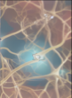
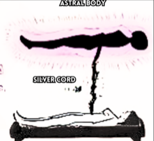
- «COME SOPRA COSÌ SOTTO» HA DAVVERO L'ORIGINE CHE IL LIBRO INDICA è la Tavola di Smeraldo
«Questo termine esiste da migliaia di anni ed era una frase famosa del dio egizio Thoth / Ermete Trismegisto / Mercurio / Mosè / Enoch.» La formula viene effettivamente dalla Tabula Smaragdina ermetica, la cui apertura recita «ciò che è in basso è come ciò che è in alto, e ciò che è in alto è come ciò che è in basso, per compiere i miracoli della cosa una». Il testo è attestato in arabo dall'VIII secolo e in latino dal XII, ed è attribuito per tradizione a Ermete Trismegisto — la figura sincretica che nasce dall'identificazione greco-egizia fra Ermete e Thoth, già vista in Parte VII. Le aggiunte «Mosè» ed «Enoch» sono invece identificazioni della letteratura esoterica moderna, non della tradizione ermetica.
- LE TRE COLONNE DI CORRISPONDENZE cosa regge e cosa no
Il libro allinea: 12 segni = 12 nervi cranici = 12 sistemi del corpo = 12 sali cellulari; 7 pianeti = 7 chakra = 7 metalli = 7 giorni = 7 colori; 5 elementi = 5 sensi = 5 dita della mano = 5 dita del piede = 5 punte. Alcuni termini di queste serie sono conteggi reali — le dodici paia di nervi cranici, i sette giorni della settimana, i sette pianeti classici e i sette metalli alchemici, le cinque dita — e le corrispondenze pianeta-metallo-giorno sono documentate. Altri sono convenzioni: i «sistemi del corpo» non sono dodici per natura, l'anatomia ne conta undici o dodici a seconda di come si raggruppa; i colori dello spettro sono un continuo, e il sette viene da Newton, che nel 1704 vi aggiunse l'indaco per farne sette come le note della scala. Il libro tratta le due categorie allo stesso modo.
- LE FORME RAMIFICATE l'osservazione è giusta, e ha un nome preciso
La pagina accosta neuroni, fulmini, nervi, alberi, broccoli, foglie con la didascalia «come sopra, così sotto», e la pagina 69 aggiunge «universo frattale». Qui l'osservazione è fondata, e la scienza le dà ragione con un nome: sono strutture frattali, cioè auto-simili su scale diverse, e la ragione per cui ricorrono è nota — sono la soluzione più efficiente al problema di distribuire o raccogliere un flusso in un volume (linfa, sangue, segnali, carica elettrica). La ramificazione dei fulmini si chiama figura di Lichtenberg, quella del broccolo romanesco è uno degli esempi di frattale naturale più citati in assoluto, e la sua spirale segue la successione di Fibonacci. Il libro vede quindi un fenomeno reale; ciò che aggiunge è che la somiglianza dimostri un piano.
- IL CORDONE D'ARGENTO l'analogia con il cordone ombelicale
«Durante tutta la gravidanza il feto è nutrito e protetto dal suo collegamento continuo con la madre. […] Allo stesso modo, per tutta la nostra esistenza in questo regno, manteniamo un collegamento costante con il nostro Sé Superiore attraverso il Cordone d'Argento.» Il cordone d'argento è un motivo ricorrente della letteratura sul viaggio fuori dal corpo, ripreso da Ecclesiaste 12:6 («prima che si rompa il cordone d'argento») — dove però l'immagine indica la morte, non un collegamento astrale. Sulla premessa fisiologica il libro scrive che «prove scientifiche sostengono l'idea che emozioni e ricordi possano essere trasmessi al feto attraverso questo collegamento cruciale»: quel che è documentato è che lo stress materno influenza lo sviluppo fetale per via ormonale, in particolare attraverso il cortisolo, e che il feto riconosce alla nascita la voce e la lingua della madre. Non è documentata la trasmissione di ricordi.
- LA CATENA DI GIOCHI DI PAROLE e un dato numerico che si contraddice
La pagina 68 accumula: «G = 7ª lettera» nel compasso massonico — è vero, G è la settima lettera dell'alfabeto latino; «uterus = terus = torus» e «uterus = stargate = grembo» — utero viene dal latino uterus, ventre, e non ha rapporto con torus, il toro geometrico; «masculin = lin = line = 1» e «0 e 1, codice binario» — la lettura del 1 come maschile e dello 0 come femminile è simbolica, non linguistica; «le mele sono campi toroidali». Va segnalata anche una contraddizione interna: qui il libro scrive «7 numero della materia, 12 numero della mente», come a pagina 62, mentre a pagina 52 aveva scritto «6 numero dell'uomo, 7 numero di Dio». Le due attribuzioni del 7 non stanno insieme.
Tutte le immagini di pagina 68
Le ventinove immagini della pagina delle corrispondenze — la pagina con più immagini di tutto il libro.
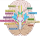
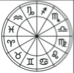
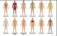
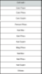
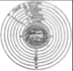
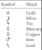
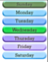
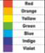
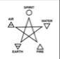
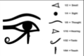
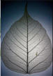
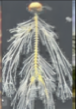
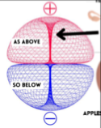
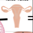
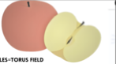
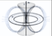
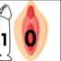
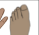
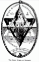
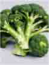
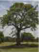
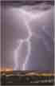
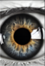
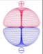
Tutte le immagini di pagina 69
Le sei immagini della pagina sull'universo frattale e il cordone d'argento.
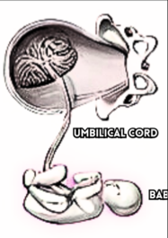
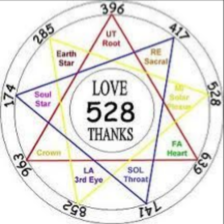
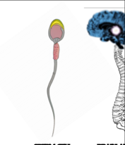
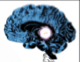
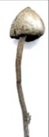
L'atomo toroidale
Titolo originale delle due pagine: ELECTROMAGNETISM. Il cuore teorico del libro: il modello dell'atomo insegnato a scuola sarebbe falso, e quello vero sarebbe un campo toroidale; da lì una «santa trinità» di dielettricità, magnetismo ed elettricità che il volume espone come fisica. È anche il punto in cui una fonte contemporanea viene citata per nome: Ken Wheeler.
«Il campo toroidale è un'unità di luce. La scienza afferma che il 99,999% degli atomi è spazio vuoto, il che è vero; però il modello che ci forniscono è falso.»
«da tradurre e creare una mappa come si deve», pagg. 70-71 — traduzione dall'inglese
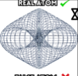
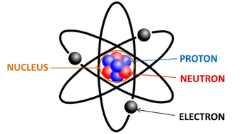
- IL MODELLO PLANETARIO È DAVVERO SUPERATO — MA NON PER I MOTIVI CHE IL LIBRO DÀ e il 99,999% è persino sottostimato
Sul primo punto il libro ha ragione, e persino per difetto: un atomo è quasi interamente vuoto, e la frazione occupata dal nucleo è dell'ordine di una parte su 10.000.000.000.000.000 in volume — il nucleo sta all'atomo come una biglia a uno stadio. Ha ragione anche a dire che il modello planettario disegnato sui libri di scuola non descrive la realtà: quel modello è di Rutherford (1911) e Bohr (1913), ed è stato sostituito nel 1926 dalla meccanica quantistica di Schrödinger, in cui l'elettrone non percorre un'orbita ma è descritto da un orbitale, cioè una distribuzione di probabilità. Sopravvive nei manuali come schema didattico, e nessun fisico lo considera letterale. Ma la conclusione che il libro ne trae — che l'atomo vero sia un campo toroidale — non discende da nulla di tutto ciò: gli orbitali hanno forme note e misurate (sferiche, a lobi, ad anello) che si ricavano dall'equazione di Schrödinger, e sono state anche fotografate.
- LA «SANTA TRINITÀ» ELETTROMAGNETICA è il vocabolario di Ken Wheeler, e il libro lo dichiara
Il libro scrive: «1) dielettricità = luce nera = inerzia e accelerazione · 2) magnetismo = luce bianca = forza e movimento · 3) elettricità = effetto elettrico = materiale», e cita per nome: «Ken Wheeler ha detto: "Solo quando questi due campi di Etere si muovono l'uno contro l'altro c'è elettrificazione, che è l'etere nella modalità di polarizzazione dinamica".» La citazione è attribuita correttamente: Ken Wheeler è un autore contemporaneo che pubblica in proprio su questi temi, e quella è la sua terminologia. Va detto con chiarezza che non è fisica accettata: nell'elettromagnetismo di Maxwell la «dielettricità» non è una forza né una sostanza, ma la permittività, cioè una proprietà misurabile dei materiali che dice quanto si polarizzano in un campo elettrico; e campo elettrico e campo magnetico non sono due entità gerarchiche — sono due componenti dello stesso campo, che cambiano l'una nell'altra a seconda del sistema di riferimento dell'osservatore. È il contenuto della relatività ristretta del 1905.
- «MAG SIGNIFICA MOVIMENTO» no: significa Magnesia
Il libro ripete più volte «mag significa movimento» per sostenere che il magnetismo sia forza e moto. L'etimologia è nota e diversa: magnete viene dal greco hē Magnētis líthos, «la pietra di Magnesia», dalla regione della Tessaglia — o secondo altri dalla Magnesia dell'Asia Minore — dove si trovava la magnetite. Non c'è nessuna radice che significhi «moto». Stessa sorte per «fisico = phi-cycle»: fisico viene dal greco phýsis, natura.
- IL RESPIRO DEL TORO E IL NOME DI DIO una tesi devozionale moderna
«L'inspirazione e l'espirazione del campo toroidale sono il soffio della vita. […] Quando inspiriamo ed espiriamo creiamo la parola di Dio, Yahweh (YHWH). L'inspirazione è YAH, l'espirazione è WEH.» È un'idea molto diffusa nella spiritualità contemporanea, ma non ha sostegno negli studi biblici: la pronuncia originale del tetragramma non è certa («Yahweh» è una ricostruzione degli studiosi a partire da trascrizioni greche), il nome è composto di consonanti che non corrispondono ai suoni del respiro, e nella tradizione ebraica non viene pronunciato affatto. La derivazione più accreditata lo lega al verbo hayah, «essere».
- LA CATENA DEL «TOR» sette parole, nessuna imparentata
Il libro elenca «parole con TOR: story, motor, tornado, torso», e altrove aggiunge Torah e rota. Nessuna di queste condivide radice con torus, che è il latino per «rigonfiamento, cuscino»: story viene da historia; motor da movere; tornado dallo spagnolo tronada, temporale, incrociato con tornar; torso dal greco thýrsos; Torah dall'ebraico yarah, «insegnare, indicare». Fa eccezione un caso, ed è quello che il libro non nomina: la parola tornado e il verbo tornare sì che sono legati fra loro, ma per una via che non passa dal toro geometrico. Il libro chiude con «iperboloide → iperbole → stai esagerando»: iperbole ha davvero i due sensi, retorico e geometrico, ed entrambi vengono dal greco hyperbolḗ, «eccesso, gettare oltre» — è quindi un caso in cui l'omonimia è reale, ma segnala una radice comune, non un significato nascosto.
Tutte le immagini di pagina 70
Le undici immagini della pagina sull'atomo.
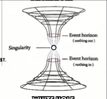
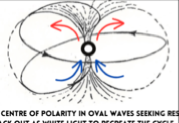
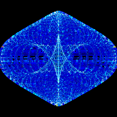
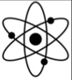
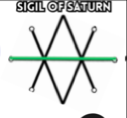
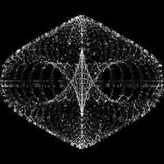
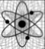
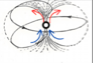
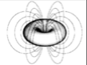
Tutte le immagini di pagina 71
Le otto immagini della pagina sulla trinità elettromagnetica.
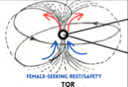
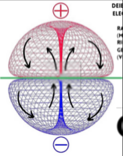
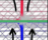
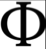
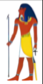
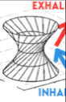
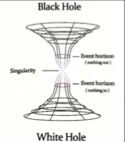
L'elettricità è la parola di Dio
Ancora ELECTROMAGNETISM. Il magnetismo come Dio e Spirito Santo, l'elettricità come nascita della materia e quindi della dualità; da qui la spiegazione del perché rosso e blu sono ovunque nei marchi e nei film. Poi lo zero e l'uno come principio femminile e maschile, e la trimurti indù letta come le tre fasi del campo.
«L'elettricità è la parola di Dio. Elettricità = suono = OHM = vibrazione. L'elettricità si misura in ohm.»
«da tradurre e creare una mappa come si deve», pagg. 72-73 — traduzione dall'inglese
- GLI OHM NON MISURANO L'ELETTRICITÀ e l'omofonia con il mantra è casuale
Due precisazioni su una riga sola. L'ohm è l'unità di misura della resistenza elettrica, non dell'elettricità: prende il nome dal fisico tedesco Georg Simon Ohm (1789-1854), autore della legge che lega tensione, corrente e resistenza. La corrente si misura in ampere, la tensione in volt, la potenza in watt. E l'OM della tradizione indiana è una sillaba sanscrita (ॐ) che non ha alcun rapporto con il cognome del fisico: l'omofonia esiste solo nella trascrizione inglese ohm. Sulla stessa pagina il libro aggiunge «le onde elettriche hanno una frequenza misurata in hertz perché ci fanno male (hurts) e decadiamo»: l'hertz prende il nome da Heinrich Hertz (1857-1894), il fisico che per primo produsse e rilevò onde radio, dimostrando le previsioni di Maxwell.
- ROSSO E BLU DAPPERTUTTO l'osservazione è vera, la spiegazione è del libro
«Ecco perché tutto ciò che ti circonda e ha a che fare con opposti polari è rosso e blu», con gli esempi: la pillola rossa e la pillola blu di Matrix, Pepsi, Red Bull, «le rose sono rosse, le viole sono blu». La ricorrenza è reale, ma la ragione è nota e diversa: rosso e blu sono agli estremi opposti dello spettro visibile e hanno il massimo contrasto percettivo fra loro, il che li rende la scelta naturale ovunque serva codificare una contrapposizione — caldo/freddo sui rubinetti, positivo/negativo sui morsetti, le due squadre di un gioco. È lo stesso motivo per cui rosso e blu compaiono nella metà delle bandiere del mondo. Sul redshift e blueshift che il libro nomina in continuazione: sono fenomeni reali e misurati — lo spostamento della luce verso il rosso o il blu quando la sorgente si allontana o si avvicina, cioè l'effetto Doppler applicato alla luce — ma riguardano il moto relativo di sorgenti astronomiche, non due «forze» costitutive della materia.
- LA TRIMURTI INDÙ, RIPORTATA CORRETTAMENTE e i tre modi dell'astrologia
«Nascita = cardinale = creatore = Brahma · crescita = fisso = conservatore = Vishnu · decadimento = mutevole = distruttore = Shiva.» La Trimurti è riportata con esattezza: nella tradizione indù Brahma è il creatore, Vishnu il conservatore e Shiva il distruttore-trasformatore. E anche i tre modi astrologici — cardinale, fisso, mutevole — sono davvero le tre qualità in cui si dividono i dodici segni, quattro per modo. Il libro allinea due sistemi reali; l'equivalenza fra i due è la sua aggiunta. Cita anche la Bhagavadgītā per attribuire alle tre «energie del Signore» la propria triade dielettrico-magnetico-elettrico: nel testo sanscrito la tripartizione che esiste è quella dei tre guṇa — sattva, rajas, tamas — e non ha contenuto elettromagnetico.
- LO ZERO E L'UNO la lettura sessuale del codice binario
«Il campo toroidale ci dà il codice binario di tutta la creazione: zero e uno. Lo zero è l'uovo cosmico, il grembo della creazione. […] L'uno è il principio maschile della creazione; è l'unico numero che esista davvero, perché tutti i numeri salgono di uno.» E poi: «maschile = line = 1; femminile = nine = 9; 1+9 = 10; 10 è la perfezione, ed è per questo che la sequenza dei numeri finisce a 10.» Il calcolo è coerente con sé stesso, ma la premessa è una convenzione: la sequenza dei numeri non «finisce a 10» — il dieci è la base che usiamo perché abbiamo dieci dita, e i sistemi in base 12, 20 e 60 sono esistiti ed esistono, come mostra l'orologio di cui il libro parla a pagina 50.
- «ATOM», «ANATOMY»: QUI LA PARENTELA C'È DAVVERO e il libro non se ne accorge fino in fondo
La pagina 72 accosta «atom · anatomy · etymology» e vi legge il nome di Atum. Sul dio egizio la connessione non c'è. Ma fra atomo e anatomia la parentela è reale, e vale la pena dirlo: entrambe vengono dal greco témnein, tagliare. Átomos significa «non tagliabile, indivisibile» (α- privativo più tomos), anatomḗ significa «taglio attraverso, dissezione». Le due parole sono davvero imparentate — per la radice del tagliare, non per il nome di un dio. È un caso in cui il metodo del libro sfiora un risultato giusto e lo attribuisce alla ragione sbagliata.
- SPIRITO E SPIRALE pagina 73 e 74: due parole che non si toccano
«Spirito = spirale. Il tuo spirito è un campo energetico a spirale. […] La parola spirit ha la radice spir, che viene da spirale.» Le due parole hanno origini separate: spirito dal latino spirare, respirare — come il libro stesso aveva correttamente detto in Parte IV — e spirale dal greco speîra, avvolgimento, spira. La coincidenza delle prime quattro lettere in inglese è casuale. La pagina 73 aggiunge la lettura del rosso: «il diavolo è rosso perché simboleggia la bassa frequenza. Il rosso è il colore che vibra più lentamente» — ed è vero che nello spettro visibile il rosso ha la frequenza più bassa e il violetto la più alta, circa 430 e 750 terahertz. Il resto è la simbologia del libro.
Tutte le immagini di pagina 72
Le diciannove immagini della pagina su rosso e blu.
Tutte le immagini di pagina 73
Le otto immagini della pagina sui colori e la trinità.
Dio è luce: spirale, gematria, Fibonacci
Titoli originali: ELECTROMAGNETISM IS NATURE e GOD IS LIGHT. Quattro pagine quasi interamente visive: il «loto della vita» come vista dall'alto del campo, il ciclo della vita come ciclo dell'atomo, una lunga citazione da Walter Russell, un esercizio di gematria sull'alfabeto inglese — la cui aritmetica torna, ma la cui premessa storica no — e la serie dei semi al centro dei frutti.
«La spirale è il movimento della vita. […] L'iperboloide al centro di ogni campo toroidale inspira ed espira, e questo si riflette in tutte le cose della natura.»
«da tradurre e creare una mappa come si deve», pagg. 74-77 — traduzione dall'inglese
- LE SPIRALI DEI GIRASOLI SONO FIBONACCI — E QUESTO È MISURATO il caso più solido di tutta la parte
Fra le immagini di queste pagine ricorrono girasoli, pigne, cactus e rose, con la spirale aurea sovrapposta. Qui il libro sta indicando un fenomeno reale, misurato e spiegato: si chiama fillotassi. Nel capolino del girasole i semi si dispongono in due famiglie di spirali che si avvolgono in senso opposto, e il loro numero è quasi sempre una coppia di numeri di Fibonacci consecutivi — 34 e 55, 55 e 89, fino a 144 e 233 nei capolini più grandi. La ragione è nota: ogni nuovo primordio si forma a un angolo di circa 137,5° dal precedente, l'angolo aureo, che è il modo più efficiente di riempire un disco senza lasciare vuoti né sovrapposizioni — ed è stato riprodotto in laboratorio e in simulazione. È il punto in cui il libro e la scienza guardano la stessa cosa.
- LA CITAZIONE DA WALTER RUSSELL autore reale, opera reale, fonte dichiarata
La pagina 75 riporta un lungo passo dichiarandone la fonte, The Universal One di Walter Russell: «Dio, il Creatore, divide la Sua unica Luce bianca estendendone l'UNITÀ in tensioni elettriche di coppie vibranti rosse e blu. Le tensioni di questa divisione elettrica sono pareggiate da un desiderio di unità, che è raggiunto nel punto di incandescenza bianca nella materia. […] L'uomo solo, di tutta la Creazione, conosce mai la propria Onniscienza.» Russell (1871-1963) è realmente esistito e il libro è realmente suo, del 1926 — è la stessa fonte citata nella prima sezione della mappa. La sua cosmologia non ha riscontro nella fisica, ma è un corpus filosofico coerente e attribuito correttamente.
- «DIO È LUCE»: IL VERSETTO È VERO, IL RIFERIMENTO NO è la Prima lettera di Giovanni, non il Vangelo
Il libro cita «Giovanni 1:5 — "Dio è luce"». La frase esiste, ma sta in 1 Giovanni 1:5, la Prima lettera: «Dio è luce, e in lui non ci sono tenebre». Il Vangelo di Giovanni 1:5 dice un'altra cosa — «la luce splende nelle tenebre, e le tenebre non l'hanno vinta». Il versetto immediatamente precedente, che il libro cita anch'esso ed è corretto, è Giovanni 1:4: «in lui era la vita, e la vita era la luce degli uomini». È uno scambio di sigla fra due libri diversi dello stesso autore tradizionale.
- LA GEMATRIA: I CONTI TORNANO, IL METODO È DEL NOVECENTO e il libro descrive correttamente la pratica storica prima di non applicarla
Il libro definisce la gematria in modo esatto: «un sistema che assegna valori numerici alle lettere di un alfabeto […]. Questa pratica ha radici storiche in varie culture, incluse l'ebraica e la greca, dove le lettere servivano anche da numeri.» È giusto: in ebraico e in greco antico le lettere erano i numeri — non esistevano cifre separate — e per questo la corrispondenza è intrinseca alla scrittura. Poi però applica il metodo all'alfabeto inglese, con il valore ordinale di ciascuna lettera, e ottiene: «god» = 7+15+4 = 26 · «elohim» = 5+12+15+8+9+13 = 62 · «alla» = 1+12+12+1 = 26 · «space» = 19+16+1+3+5 = 44, con l'osservazione che l'alfabeto inglese ha 26 lettere e che 2+6 = 8, «il campo toroidale, il simbolo dell'infinito». Tutti i conti sono giusti — li si verifica in un minuto. Ma la premessa non regge: l'alfabeto latino non ha mai avuto valori numerici per le lettere, l'inglese moderno tantomeno, e assegnarne uno per posizione è un'invenzione del Novecento (la cosiddetta «English Qabalah»). Il libro spiega bene perché la gematria funzioni in ebraico, e poi la usa dove quella ragione non c'è.
- SANTOS BONACCI, CITATO PER NOME pagina 77
La pagina 77 riporta: «Santos Bonacci: "comprendendo il campo toroidale capirai tutte le cose"», accanto alla serie dei semi al centro dei frutti — «nota come i semi stiano sempre al centro del frutto. Il centro del campo toroidale è l'iperboloide, che rigenera il campo. I semi sono ciò che rigenera i frutti». Santos Bonacci è un autore australiano contemporaneo, divulgatore di «astroteologia» e sostenitore della terra piatta: è una delle fonti riconoscibili di tutta questa mappa, ed è utile che qui venga nominato. È anche il quarto autore contemporaneo che il libro cita per nome, dopo Doreal, Ken Wheeler e Joe Dispenza — mentre non nomina mai David Icke e Cornelio Agrippa, da cui prende altrettanto.
Tutte le immagini di pagina 74
Le quattordici immagini della pagina sul «loto della vita».

Tutte le immagini di pagina 75
Le tre immagini della pagina su «Dio è luce».
Tutte le immagini di pagina 76
Le nove immagini della pagina sulla gematria.

Tutte le immagini di pagina 77
Le tredici immagini della pagina sui semi al centro dei frutti.
Il fiore della vita
Titoli originali: ELECTROMAGNETISM IS NATURE e FLOWER OF LIFE VS DAISY OF DEATH. Prima il dualismo maschile-femminile letto sui due poli del campo; poi la pagina più insolita del volume — l'unica in cui il libro si schiera contro una tesi cospirativa invece che a favore, difendendo il fiore della vita da chi lo chiama «margherita della morte».
«Il falso allarme coniato come "margherita della morte" è l'apice dell'oscurità che tenta di corrompere la sacra saggezza della creazione. La sacra saggezza del fiore della vita va onorata, non deturpata.»
«da tradurre e creare una mappa come si deve», pagg. 78-79 — traduzione dall'inglese
- IL LIBRO QUI DIFENDE, INVECE DI ACCUSARE ed è l'unico caso in 118 pagine
Il tono cambia di colpo e diventa personale: «è una sfida da affrontare per le persone, e quella che di tutte le agende oscure piantate nella coscienza umana per far deviare l'umanità mi fa più infuriare», e ancora «chiunque parli contro di esso e promuova la "margherita della morte" sta facendo il gioco delle forze oscure e alimentando un'agenda negativa basata sulla paura». È notevole perché mostra come funziona il meccanismo dal di dentro: la stessa struttura argomentativa che il libro usa altrove — un'agenda occulta, una verità nascosta, chi non se ne accorge è complice — viene qui rivolta contro un'altra teoria del complotto, e con gli stessi strumenti. Non c'è, in nessuna delle due direzioni, un criterio dichiarato per decidere quale delle due letture sia quella giusta.
- CHE COS'È DAVVERO IL FIORE DELLA VITA la geometria è semplice, l'archeologia meno di quanto si dica
La figura è reale e la sua costruzione è elementare: cerchi tutti dello stesso raggio, ciascuno centrato su un punto della circonferenza dei vicini — il che produce il reticolo esagonale, cioè il modo più denso di impacchettare cerchi su un piano. Il libro ne descrive correttamente la genesi passo per passo: cerchio → vesica piscis → «trinità» → seme della vita → fiore della vita → frutto della vita → cubo di Metatron. Anche i nomi sono quelli in uso, e la vesica piscis — l'intersezione a mandorla di due cerchi — è una figura geometrica autentica, che dà tra l'altro il nome alla mappa gemella di questa biblioteca. Va però precisato ciò che il libro dà per acquisito: la sua attestazione più famosa, quella dell'Osireion di Abydos in Egitto, non fa parte della costruzione del tempio ma è un graffito inciso in epoca molto posteriore, databile all'incirca al periodo greco-romano.
- IL CUBO DI METATRON E I SOLIDI PLATONICI l'affermazione più controllabile della pagina
«Collegando i cerchi si ottiene il cubo di Metatron, da cui sorgono i cinque solidi platonici, che formano la base della struttura fisica dell'universo.» I cinque solidi platonici esistono e sono esattamente cinque — tetraedro, cubo, ottaedro, dodecaedro, icosaedro — e che siano solo cinque è un teorema, dimostrato nel libro XIII degli Elementi di Euclide. Ma la derivazione dal cubo di Metatron non è una costruzione geometrica: unendo i tredici centri del «frutto della vita» si ottengono proiezioni che somigliano ai solidi, non i solidi. È una figura resa popolare da Drunvalo Melchizedek negli anni Novanta. Quanto a «formare la base della struttura fisica dell'universo»: l'idea è di Platone nel Timeo, dove i solidi sono associati agli elementi, ed è una delle più belle ipotesi sbagliate della storia del pensiero.
- ATLANTIDE, I 14.000 ANNI E LA «5D» dove la pagina esce dal verificabile
«Le ragioni per cui l'umanità cadde da Atlantide fuori dalla 5D nella realtà spazio-temporale della 3D/4D, 14.000 anni fa, furono l'abuso della saggezza, da cui abbiamo un enorme trauma collettivo impresso nel subconscio umano.» Atlantide compare per la prima volta nel Timeo e nel Crizia di Platone, intorno al 360 a.C., come racconto dichiaratamente esemplare all'interno di un dialogo filosofico; non esiste alcuna attestazione anteriore né alcun riscontro archeologico. La datazione a 14.000 anni fa e lo schema dimensionale «5D/4D/3D» appartengono alla letteratura New Age del Novecento. La chiusura della pagina è però una posizione, e conviene riportarla per intero: «la geometria sacra non è né intrinsecamente positiva né negativa. Incarna la dualità, rappresentando sia creazione sia distruzione.»
Tutte le immagini di pagina 78
Le tre immagini della pagina sul dualismo.
Tutte le immagini di pagina 79
Le due immagini della pagina sul fiore della vita.
Il campo energetico umano
Titoli originali: ELECTROMAGNETISM IS NATURE e THE HUMAN ENERGY FIELD. La chiusura della parte: il campo del cuore, l'emozione come «energia in movimento», l'atmosfera di una stanza come somma dei campi dei presenti, e un elenco pratico su come rafforzare il proprio campo. Contiene anche un'affermazione sanitaria — le malattie come «bassa frequenza» — che va segnalata.
«Emozione = energia in movimento. […] I pensieri si manifestano come energia in movimento, costituendo le emozioni: ogni pensiero è intrinsecamente legato a uno stato emotivo.»
«da tradurre e creare una mappa come si deve», pagg. 80-84 — traduzione dall'inglese
- «EMOZIONE = ENERGIA IN MOVIMENTO»: L'ETIMOLOGIA REGGE anche se non nel senso che il libro intende
La formula ricorre in tutto il libro, ed è una di quelle che funzionano: emozione viene dal latino emovere, cioè e- (fuori) più movere (muovere) — «portare fuori, smuovere». Il legame fra emozione e movimento è dunque reale e inscritto nella parola. Ciò che l'etimologia non autorizza è il salto successivo: che si tratti di energia nel senso fisico del termine, misurabile in joule. Il libro usa «energia» in due accezioni diverse — quella fisica e quella esperienziale — e le tratta come una sola.
- IL CAMPO DEL CUORE: LE CIFRE HANNO UNA FONTE e la fonte è la stessa della Parte III
La tavola riprodotta a pagina 84 dice: «il cuore è circa 100.000 volte più forte elettricamente e fino a 5.000 volte più forte magneticamente del cervello», e il testo aggiunge che il campo «si estende verso l'esterno per diversi piedi, in tutte le direzioni» e che «dispositivi sensibili possono misurare il campo cardiaco a diversi piedi dal corpo». Le cifre vengono dall'HeartMath Institute, già incontrato in Parte III, e il rapporto fra i due campi è effettivamente di quell'ordine: il cuore è il muscolo che genera il segnale bioelettrico più intenso del corpo, ed è per questo che l'elettrocardiogramma si legge dalla superficie della pelle mentre l'elettroencefalogramma richiede elettrodi sul cuoio capelluto. Il campo magnetico cardiaco è misurabile a distanza, ma con magnetometri SQUID in camere schermate, perché è dell'ordine di 50 picotesla — circa un milionesimo del campo magnetico terrestre. Non lo misura un «dispositivo sensibile» qualunque, e l'estensione «di diversi piedi» è la formulazione divulgativa di HeartMath, non un dato di misura.
- L'ELETTROMIOGRAFIA NON MISURA L'AURA misura i muscoli
«Ogni individuo possiede un campo energetico aurico elettromagnetico, che può essere valutato scientificamente attraverso metodi come l'elettromiografia.» L'elettromiografia è un esame diagnostico reale, ma fa un'altra cosa: registra l'attività elettrica delle fibre muscolari, con elettrodi di superficie o ad ago, e serve a diagnosticare miopatie e neuropatie. Non misura alcun campo attorno al corpo. Il libro nomina uno strumento vero per una funzione che non ha.
- LE MALATTIE COME «BASSA FREQUENZA» è un'affermazione sanitaria, e va segnalata
«La ricerca suggerisce che le malattie possano esistere in una gamma di frequenza più bassa. Secondo questo punto di vista, l'idea è che gli individui possano essere più suscettibili alle malattie quando la loro frequenza vibrazionale personale si abbassa. […] Mantenere un alto tasso vibratorio si ritiene agisca da fattore protettivo.» Il libro attribuisce la tesi a «la ricerca» senza indicarne alcuna, e non ne esiste: non c'è nessuna grandezza fisica chiamata "frequenza personale", e le cause delle malattie sono documentate ciascuna per la propria via — patogeni, mutazioni, carenze, esposizioni, invecchiamento dei tessuti. Va segnalata con chiarezza per una ragione pratica: è il tipo di affermazione che può portare qualcuno ad attribuire una malattia al proprio stato d'animo, o a ritardare una diagnosi. Nell'elenco finale — «vivere dal cuore, non dalla mente · pensiero positivo · sentire positivo · dieta elettrica, frutta e verdura · stare con persone positive · chakra equilibrati · meditare sotto gli alberi · fare grounding ogni giorno · meditazione» — alcune voci sono innocue e persino sensate, ma vanno lette sapendo che la cornice che le giustifica non ha fondamento.
- L'ATMOSFERA DI UNA STANZA l'osservazione psicologica e la sua spiegazione
«L'atmosfera che si percepisce entrando in una stanza riflette gli stati vibrazionali collettivi dei campi elettromagnetici emessi dalle persone che la abitano.» Che si percepisca il clima emotivo di un ambiente è un'esperienza comune e studiata: passa per canali noti e misurabili — espressioni facciali colte in millisecondi, postura, prosodia della voce, ritmo dei movimenti — e in psicologia si chiama contagio emotivo. Lo stesso vale per la raccomandazione che il libro ne trae, «essere consapevoli della compagnia che teniamo ogni giorno», che resta ragionevole a prescindere dalla spiegazione. La spiegazione elettromagnetica no: a un metro di distanza il campo cardiaco di una persona è ordini di grandezza sotto il rumore magnetico ambientale di una stanza qualunque.
- IL CAMPIDOGLIO E GIULIO CESARE pagina 80 — la piazza è vera, il resto no
Il libro riproduce la veduta aerea della Piazza del Campidoglio con il suo pavimento ovale a stella, e la descrive come «il più alto dei sette colli di Roma», aggiungendo che «Giulio Cesare saliva qui ogni mattina e stava in mezzo». La piazza è reale e il disegno del pavimento è notevole — un ovale con una stella a dodici punte, progettato da Michelangelo a partire dal 1536 e completato solo nel Novecento, nel 1940. Due correzioni: il Campidoglio non è il più alto dei sette colli, lo è il Quirinale; e Giulio Cesare, morto nel 44 a.C., non poteva conoscere una piazza disegnata quindici secoli dopo. Nel suo tempo su quel colle sorgeva il tempio di Giove Capitolino.
Tutte le immagini di pagina 80
Le quattro immagini della pagina sul campo controrotante.
Tutte le immagini di pagina 81
Le cinque immagini della pagina sulla vista dall'alto del campo.
Tutte le immagini di pagina 82
Le quattro immagini della pagina sul campo umano.
Tutte le immagini di pagina 83
Le due immagini della pagina sull'espansione del campo.
Tutte le immagini di pagina 84
Le sette immagini della pagina sul cuore e gli strati del corpo energetico.
Parte IX
Corpo e dieta
Pagine 85-92 del libro originale, tradotte per intero: otto pagine e quaranta immagini. Le onde cerebrali, due pagine di veganismo, la dieta e il digiuno, vita e morte, l'elevazione della coscienza, la musica come magia e la cimatica. È il blocco con più affermazioni sanitarie di tutto il volume — la dieta alcalina, la lista dei cibi, il digiuno, le malattie come carenza minerale — e sono segnalate una per una, perché sono il genere di indicazione che qualcuno potrebbe seguire.
Le onde cerebrali
Titolo originale: BRAIN WAVES. Le quattro bande dell'elettroencefalogramma — beta, alfa, theta, delta — con i loro intervalli di frequenza e gli stati mentali corrispondenti. È una delle pagine più accurate del libro: i dati sono giusti. La tesi che ne trae, sulle affermazioni positive al risveglio, va invece separata dai dati.
«Il cervello produce frequenze theta subito prima di addormentarsi e subito dopo il risveglio. Questa specifica frequenza cerebrale è associata a programmazione rapida e ipnosi.»
«da tradurre e creare una mappa come si deve», pag. 85 — traduzione dall'inglese
- LE QUATTRO BANDE SONO RIPORTATE CORRETTAMENTE intervalli compresi
Il libro elenca: beta — «sveglio e attento, occupato e pensante, pensiero impegnato»; alfa — «rilassato, sognante a occhi aperti, leggermente meditativo, sonnolento»; theta — «profondamente meditativo, ponte fra coscienza e sonno, mente subconscia aperta, sogni immaginativi e vividi»; delta — «sonno profondo, senza sogni». Tutto corretto, e anche gli intervalli in hertz riportati nell'immagine sono quelli standard dell'elettroencefalografia. È corretto anche il punto centrale: le onde theta caratterizzano davvero gli stati di transizione fra veglia e sonno, che in fisiologia si chiamano ipnagogico (addormentamento) e ipnopompico (risveglio), ed è in quegli stati che si producono le immagini vivide e la sensazione di semi-coscienza che il libro descrive. L'unica banda che manca all'elenco è gamma, sopra i 30 Hz, quella che il libro stesso aveva nominato in Parte IV parlando di meditazione.
- LE AFFERMAZIONI AL RISVEGLIO dove il dato finisce e comincia la tesi
«È un'ottima idea ascoltare affermazioni positive ogni mattina, mentre il nostro subconscio è aperto ai programmi. La ripetizione dell'ascolto di affermazioni ogni mattina può letteralmente riscrivere il cervello e il DNA e creare buoni programmi dentro il subconscio.» Qui vanno separate tre cose. Che il cervello si modifichi con l'esperienza è vero e si chiama neuroplasticità. Che le affermazioni di auto-valorizzazione abbiano qualche effetto è oggetto di una letteratura reale in psicologia sociale — la self-affirmation theory — con effetti misurati ma modesti e specifici, per lo più sulla reazione alle minacce all'autostima. Che possano «riscrivere il DNA» no: la sequenza del DNA non si riscrive con l'ascolto. Esistono modifiche epigenetiche — cioè di quali geni si esprimono — sensibili allo stress e all'ambiente, ma sono un'altra cosa, e non sono ciò che il libro descrive.
- IL SIMBOLO THETA la lettura simbolica che chiude la pagina
«Nota che il simbolo delle onde theta è bilanciato e ha due lati opposti uguali, a simboleggiare che i due generi sono la mente. Maschile = conscio, femminile = subconscio. Le onde theta sono le onde che ci danno accesso ai regni subconsci della nostra mente: sono la porta, il ponte verso la nostra mente universale.» Le lettere greche che danno il nome alle bande sono state assegnate in ordine di scoperta a partire da Hans Berger, che registrò il primo EEG umano nel 1924 e chiamò «alfa» il ritmo che vide per primo e «beta» il successivo; theta e delta arrivarono dopo, con il gruppo di Walter Grey Walter negli anni Trenta. La forma della lettera non ha avuto parte nella scelta.
Tutte le immagini di pagina 85
Le tre immagini della pagina sulle onde cerebrali.
Veganismo
Titolo originale delle due pagine: VEGANISM. Due pagine dense: la tesi acido-alcalino, il linguaggio dell'industria alimentare, il confronto fra dentatura e intestino di carnivori ed erbivori, l'elenco dei «grandi pensatori vegani», la fotografia Kirlian e i biofotoni. Gli argomenti etici e quelli sanitari sono intrecciati: qui vengono separati.
«Termini sono stati creati per nascondere la vera natura di ciò che consumiamo. […] Chiamiamo la carne "carne", il latte inacidito "formaggio", il posteriore di un maiale "prosciutto" e un embrione in sviluppo "uovo".»
«da tradurre e creare una mappa come si deve», pagg. 86-87 — traduzione dall'inglese
- LA DIETA ALCALINA: IL SANGUE NON CAMBIA pH CON IL CIBO è la correzione più importante di tutta la parte
Il libro apre con: «per restare in salute si consiglia di mantenere il corpo umano in uno stato alcalino. Si ritiene che un ambiente acido favorisca la crescita di germi e batteri, aumentando il rischio di sviluppare malattie.» Questo non è come funziona il corpo. Il pH del sangue è regolato entro un intervallo strettissimo — fra 7,35 e 7,45 — da tre sistemi che lavorano insieme: il tampone bicarbonato, la respirazione (che elimina anidride carbonica in pochi secondi) e i reni (che eliminano acidi in poche ore). Nessun alimento può spostarlo: se ci riuscisse si tratterebbe di un'emergenza medica — l'acidosi e l'alcalosi sono condizioni gravi, con cause metaboliche o respiratorie, non alimentari. Ciò che il cibo cambia davvero è il pH delle urine, perché è proprio così che i reni fanno il loro lavoro: un'urina più acida o più alcalina è la prova che il sangue è rimasto stabile, non che sia cambiato. Va aggiunto che una dieta ricca di frutta e verdura fa bene per ragioni ben documentate — fibre, potassio, micronutrienti — che non hanno nulla a che vedere con il pH.
- IL LINGUAGGIO DELL'INDUSTRIA ALIMENTARE l'argomento etico, che regge da sé
Il passaggio riportato nella citazione a fianco è un argomento di tipo diverso da tutti gli altri di queste pagine: non fa affermazioni sulla fisiologia, fa un'osservazione sul linguaggio. E l'osservazione è fondata — la distanza semantica fra l'animale e il prodotto è un fenomeno studiato in linguistica e in psicologia dei consumi, e in inglese è particolarmente marcata perché i nomi delle carni vengono dal francese normanno (beef, pork, mutton) mentre quelli degli animali vivi sono anglosassoni (cow, pig, sheep). Il fenomeno ha un nome in letteratura, dissociazione carne-animale, ed è documentato sperimentalmente. Il libro lo usa per un fine etico, ed è un uso legittimo dell'osservazione: chi non condivide la conclusione può discuterla come questione morale, che è il terreno su cui sta davvero.
- DENTI E INTESTINO i dati sono giusti, la conclusione salta un passaggio
Il libro confronta i canini lunghi dei carnivori con quelli umani, e la lunghezza dell'intestino: «i carnivori come tigri e leoni hanno tipicamente lunghezze intestinali più corte, dai 3 ai 7 piedi. Gli umani invece hanno un intestino che arriva a circa 15 piedi». I fatti anatomici sono corretti e la differenza esiste. Ciò che manca è la terza categoria: gli onnivori. Orsi, maiali, ratti e primati hanno tutti dentature e apparati digerenti intermedi, ed è lì che si colloca l'essere umano — canini ridotti ma presenti, molari da triturazione, intestino di lunghezza media, e un enzima specifico, l'amilasi salivare, il cui gene è presente nell'uomo in molte più copie che negli altri primati, adattamento all'amido. Sull'argomento della longevità — «gli animali che mangiano carne vivono meno; leoni e cani arrivano a 15 anni» — il confronto non regge: la longevità dipende molto più dalla taglia corporea che dalla dieta, ed è per questo che un elefante erbivoro vive 60-70 anni e una balena della Groenlandia, che è carnivora, può superare i 200.
- I «GRANDI PENSATORI VEGANI» nove nomi, e nessuno era vegano
L'elenco è: Platone, Pitagora, Ovidio, Van Gogh, Isaac Newton, Nikola Tesla, Leonardo da Vinci, Steve Jobs, Gandhi. La parola vegano è però anacronistica per tutti: il termine è stato coniato nel 1944 da Donald Watson, e indica l'astensione da ogni prodotto animale, latte e uova compresi — cosa che nessuno dei nove praticava. Sui singoli: Pitagora è il caso più solido, tanto che fino all'Ottocento «dieta pitagorica» era il nome del vegetarianismo; Leonardo ha un riscontro documentario reale, una lettera di Andrea Corsali del 1515 che lo dice; Gandhi era vegetariano per convinzione dichiarata, ma beveva latte di capra; Steve Jobs seguì per periodi diete fruttariane; Tesla scrisse a favore del vegetarianismo e vi si avvicinò tardi; Ovidio non è attestato come vegetariano — mise in bocca a Pitagora il celebre discorso contro il consumo di carne nel libro XV delle Metamorfosi, che è cosa diversa; su Newton le fonti sono aneddotiche e discusse; su Van Gogh non c'è alcuna evidenza. L'elenco mescola quindi casi documentati, casi dubbi e un caso senza fondamento.
- GLI ORMONI DELLO STRESS NELLA CARNE un fondo reale, una conclusione che non segue
«Circa l'80% della carne sul mercato di oggi viene da animali che hanno visto i loro simili essere macellati, causando il rilascio di adrenalina e cortisolo. Questi ormoni vengono poi passati ai consumatori attraverso la carne e il sangue, potenzialmente tenendoci in uno stato accentuato di modalità sopravvivenza.» Che lo stress pre-macellazione influenzi la carne è un fatto noto alla scienza degli alimenti, e ha nomi tecnici: la carne DFD (scura, dura, secca) e la carne PSE (pallida, molle, essudativa) sono alterazioni dovute proprio a stress e glicogeno muscolare, ed è una delle ragioni per cui le normative sul benessere animale in macello esistono. Il passaggio successivo però non segue: gli ormoni ingeriti per via orale vengono in gran parte degradati dalla digestione e dal metabolismo epatico, e le quantità residue nella carne sono infinitesime rispetto a quelle che il corpo produce da sé ogni giorno. La cifra dell'80% non ha fonte.
- DR. SEBI, CHE COMPARE QUI E TORNA A PAGINA 88 chi era, va detto
Il libro attribuisce a «Dr. Sebi» l'affermazione che «oltre il 60% delle malattie sia collegato a parassiti che risiedono dentro le persone». È utile sapere chi fosse, perché la sua lista di alimenti è quella che riempie la pagina seguente. Alfredo Bowman (1933-2021), erborista honduregno noto come Dr. Sebi, non aveva alcuna qualifica medica — il titolo di «dottore» era autoattribuito — e sosteneva di poter curare AIDS, leucemia, lupus e altre malattie con la sua dieta alcalina. Nel 1993 fu perseguito dallo Stato di New York per pubblicità ingannevole e gli fu ordinato di cessare quelle affermazioni. La tesi del 60% di malattie da parassiti non ha alcun sostegno: le parassitosi intestinali sono un problema sanitario reale e grave in alcune aree del mondo, ma non sono la causa della maggioranza delle malattie.
- FOTOGRAFIA KIRLIAN E BIOFOTONI due tecniche reali, due interpretazioni diverse
«La fotografia Kirlian comprende vari metodi fotografici progettati per catturare campi energetici. […] Frutta e verdura contengono biofotoni, essenzialmente luce solare immagazzinata.» La fotografia Kirlian esiste davvero — la mise a punto Semyon Kirlian nel 1939 — ma ciò che registra è noto: è la scarica a corona prodotta da un campo elettrico ad alta tensione attorno all'oggetto, e la sua intensità dipende soprattutto dall'umidità superficiale, dalla pressione di contatto e dalla messa a terra. Bagnare un oggetto ne cambia l'«aura». I biofotoni sono anch'essi reali: le cellule viventi emettono una radiazione ultradebole, misurata in poche decine di fotoni al secondo per centimetro quadrato, prodotta da reazioni ossidative. È un fenomeno documentato, ma è milioni di volte più debole della luce visibile e non è «luce solare immagazzinata». Ha invece ragione il libro sulla visione tricromatica: gli esseri umani sono davvero tricromatici, e l'ipotesi che la tricromazia dei primati si sia evoluta proprio per distinguere frutti maturi e foglie giovani contro il fogliame è una spiegazione seria e ben sostenuta in biologia evolutiva.
- I DUE VERSETTI citati correttamente, ma su un altro argomento
1 Corinzi 8:13: «Perciò, se il cibo che mangio fa cadere in peccato mio fratello o mia sorella, non mangerò mai più carne, per non farli cadere» — testo esatto. Ma il contesto è preciso e diverso: tutto il capitolo 8 riguarda le carni sacrificate agli idoli, e la conclusione di Paolo è che l'idolo non è nulla e quella carne di per sé è indifferente — ci si astiene solo per non turbare chi è di coscienza più debole. È un argomento sulla carità, non sull'alimentazione. Atti 15:29 — «astenetevi dalle carni offerte agli idoli, dal sangue, dagli animali soffocati e dall'immoralità sessuale» — è anch'esso esatto, ed è il decreto del concilio di Gerusalemme: proibisce alcune carni, non la carne.
Tutte le immagini di pagina 86
Le cinque immagini della pagina sul veganismo.
Tutte le immagini di pagina 87
Le dodici immagini della pagina: i nove ritratti dei «grandi pensatori vegani» e i tre confronti anatomici.
La dieta umana e il digiuno
Titolo originale: THE HUMAN DIET. La pagina più prescrittiva del libro: cinque regole su come mangiare, due liste di alimenti «alcalini» e «acidi», un protocollo di digiuno e cinque «note chiave» finali. Le due liste sono la guida alimentare di Dr. Sebi, riprodotta quasi alla lettera. Va letta sapendolo.
«Digiuna un giorno a settimana · consuma un pasto al giorno · consuma solo piante, frutta e verdura alcaline · mangia 4 ore prima di dormire · mangia quando il sole è alto.»
«da tradurre e creare una mappa come si deve», pag. 88 — traduzione dall'inglese
- LE DUE LISTE SONO LA GUIDA DI DR. SEBI e vanno lette con quel nome davanti
La colonna «alcalina» elenca fichi, mele, arance con semi, lime, ciliegie, uva con semi, mirtilli, papaia, olive, banane burro, datteri, quinoa, riso selvatico, avocado giamaicano, pepe di Caienna, sale marino, alghe, fonio, muschio marino, bladderwrack, farro, chocho, anice stellato, kamut, fichi d'India, segale; la colonna «acida» elenca fra l'altro banane comuni, arance senza semi, patate, riso bianco e integrale, avocado Hass, carne, «tutto ciò che è senza semi», sale da tavola, arachidi, carote, mais, asparagi, spinaci, broccoli, kiwi, tofu. Chiunque conosca la materia riconosce la fonte: è la «Nutritional Guide» di Dr. Sebi, con le sue idiosincrasie caratteristiche — fonio, kamut, muschio marino, la distinzione fra frutti con e senza semi, e il rifiuto di ortaggi comunissimi come spinaci, broccoli e carote. Il criterio dichiarato è il pH, ma come già visto il pH del sangue non dipende dal cibo; e nessun criterio nutrizionale riconosciuto colloca spinaci e broccoli fra gli alimenti da evitare. Chi volesse seguire questa lista si troverebbe a escludere gran parte delle fonti comuni di ferro, calcio, vitamina B12 e proteine.
- LE CINQUE REGOLE SU COME MANGIARE alcune hanno un fondamento, altre no
Il libro elenca: masticare a fondo fino a rendere liquido il cibo — la masticazione favorisce davvero la digestione, e l'amilasi salivare comincia il lavoro in bocca; mangiare a orari costanti — la regolarità dei pasti si aggancia a un meccanismo reale, i ritmi circadiani del metabolismo, oggi oggetto di studi seri sulla crononutrizione; non mangiare dopo il tramonto — la restrizione dell'orario dei pasti è studiata sotto il nome di time-restricted eating, con risultati preliminari ma reali, anche se la ragione che il libro dà («la luce solare aiuta la digestione») non è quella; lasciare quattro ore fra l'ultimo pasto e il sonno — mangiare tardi peggiora davvero la qualità del sonno e il reflusso; non combinare cibi diversi, per esempio cereali e frutta — questa è la sola priva di fondamento: le diete dissociate sono state studiate e non mostrano vantaggi, perché l'apparato digerente secerne enzimi per tutti i substrati contemporaneamente.
- IL DIGIUNO: QUI IL LIBRO HA PIÙ RAGIONE DI QUANTO SI ASPETTI e conviene dirlo con precisione
«Notevolmente, dopo due giorni di digiuno il corpo comincia a produrre ormoni della crescita.» È vero e misurato: uno studio classico del 1992 documentò che due giorni di digiuno aumentano di circa cinque volte la secrezione di ormone della crescita in soggetti sani. È documentata anche l'autofagia, il meccanismo con cui la cellula degrada e ricicla i propri componenti, che si attiva con la carenza di nutrienti e per la cui scoperta Yoshinori Ohsumi ha ricevuto il Nobel per la medicina nel 2016. E gli studi del gruppo di Valter Longo hanno mostrato in modello animale effetti del digiuno prolungato sulle cellule staminali ematopoietiche — che è, in forma confusa, ciò che il libro intende quando scrive che «quando ci asteniamo dal mangiare, il corpo va in modalità rigenerazione creando cellule staminali». Va però detto il resto: il digiuno prolungato non è privo di rischi, è controindicato in gravidanza, nei disturbi alimentari, nel diabete e in chi assume farmaci, e negli studi si fa sotto controllo medico. Il libro non lo menziona.
- «TUTTE LE MALATTIE DERIVANO DA CARENZA MINERALE» l'affermazione più netta e più infondata della pagina
«Si dice che tutte le malattie derivino da carenza minerale. Quindi se ci mancano minerali nella dieta, manifesteremo problemi di salute nel corpo.» Le carenze minerali esistono, sono diagnosticabili e alcune sono importanti — ferro, iodio, zinco, calcio — ma non sono la causa delle malattie in generale: infezioni, tumori, malattie autoimmuni, genetiche, cardiovascolari e degenerative hanno ciascuna eziologie documentate e diverse. La formula «si dice che» sostituisce qui qualunque fonte. Anche l'affermazione che «siamo stati programmati a credere di aver bisogno di tre pasti al giorno» ha un fondo di verità storica — la scansione in tre pasti è una convenzione culturale relativamente recente e variabile — ma non implica che uno solo sia meglio per chiunque.
Tutte le immagini di pagina 88
Le due immagini della pagina sulla dieta.
Vita e morte
Titolo originale: LIFE & DEATH. Una pagina di sola dottrina, senza affermazioni sanitarie: la morte come passaggio e non come fine, il ciclo giorno-notte e quello delle stagioni come microcosmi del ciclo dell'anima, il corpo come macchina elettrica per un'anima magnetica. Chiude con il gioco che dà il titolo alla pagina: death come «porta dell'etere».
«Il corpo non vive: manifesta lo spirito. Lo spirito è eterno, ed è per questo che il simbolo dello spirito è un cerchio che non ha inizio né fine. Il cerchio è un ciclo.»
«da tradurre e creare una mappa come si deve», pag. 89 — traduzione dall'inglese
- I CICLI COME MICROCOSMI l'argomento centrale della pagina
«Il ciclo di vita e morte ci è mostrato su microscala con il ciclo del giorno e della notte. Il sole simboleggia la vita e la luce — ed è per questo che in astrologia il sole è noto come datore di vita — e la luna simboleggia la morte e l'oscurità. Lo vediamo anche con il ciclo annuale delle stagioni. […] Anche dormire e svegliarsi è un microcosmo del ciclo di vita e morte: è per questo che diciamo "il sonno è cugino della morte".» È lo stesso schema aperto in Parte III con le stagioni dentro l'uomo, e la pagina lo dichiara: «è per questo che "come dentro così fuori" e "come sopra così sotto" andrebbero capiti a fondo dentro sé stessi». Il modo di dire sul sonno esiste in molte lingue e risale almeno a Esiodo, che nella Teogonia fa di Hypnos e Thanatos, Sonno e Morte, due fratelli figli della Notte.
- ELETTRICO MORTALE, MAGNETICO ETERNO la conseguenza della teoria di Parte VIII
«Il corpo è una macchina elettrica per l'anima magnetica che vi risiede. […] L'elettricità vibra, il magnetismo irradia. Il corpo è composto di atomi elettrici che vibrano; le vibrazioni tornano sempre al riposo, che è la morte. Il magnetismo irradia e pulsa, e questa pulsazione è eterna.» È la conclusione che il libro trae dal proprio impianto elettromagnetico, esposto nella Parte VIII: se l'elettricità è vibrazione e ogni vibrazione si smorza, allora il corpo è per costruzione mortale e ciò che resta è la componente che non vibra. Il ragionamento è coerente con le premesse del libro; le premesse, come si è visto, non corrispondono all'elettromagnetismo.
- «DEATH» = «D-ETH», LA PORTA DELL'ETERE un altro gioco fonetico
Il libro scompone death in d più eth = etere, e ne ricava «morte = porta dell'etere», con l'aggiunta consueta di «physical = phi cycle». L'inglese death viene dall'antico inglese dēaþ, dalla stessa radice germanica di die, e ether dal greco aithēr: non condividono nulla. Vale però la pena notare che il libro qui chiude un cerchio dottrinale coerente — l'etere era stato definito in Parte IV come «il velo fra il mondo fisico e quello astrale», e la morte come attraversamento di quel velo è la conseguenza logica di quella definizione, indipendentemente dall'etimologia.
- IL VERSETTO DI CHIUSURA citato correttamente
Salmo 73:26: «La mia carne e il mio cuore possono venir meno, ma Dio è la forza del mio cuore e la mia parte per sempre.» Il testo è esatto. La pagina si chiude con un'osservazione sulla mente: «l'anima è puro amore, non può essere alterata. La mente invece può esserlo. Informazioni false e mancanza di comprensione creano strati di blocchi che nascondono il vero sé.» È la stessa idea dei «veli» già incontrata in Parte IV.
Tutte le immagini di pagina 89
Le tre immagini della pagina su vita e morte.

Elevare la coscienza
Titolo originale: ELEVATING CONSCIOUSNESS. La pagina più operativa del blocco: il serpente che nutre l'aquila come simbolo della trasmutazione dell'energia sessuale, e poi tre passi concreti — padroneggiare la percezione, astenersi dal sesso per un mese, eliminare i cibi processati. È anche la pagina il cui testo l'estrazione restituisce più danneggiato, per lo stesso errore di codifica del font già incontrato a pagina 26.
«Il primo passo per elevare la tua coscienza sarebbe padroneggiare la tua percezione e cambiare la tua esperienza. Tutto ciò che incontri è neutro: è la tua mente che gli dà una connotazione positiva o negativa.»
«da tradurre e creare una mappa come si deve», pag. 90 — traduzione dall'inglese
- SCORPIONE, AQUILA E FENICE: LA TRIADE È ASTROLOGIA VERA e il libro la usa correttamente
«Il segno zodiacale dello Scorpione corrisponde agli organi sessuali sacrali. Lo scorpione rappresenta il sacro, il pungiglione. Il serpente è metaforico per l'energia sessuale alla base della colonna. L'aquila, la fenice, corrisponde al cervello e alla regione della testa.» Nella tradizione astrologica occidentale lo Scorpione ha davvero tre simboli sovrapposti — lo scorpione, il serpente e l'aquila, a cui alcuni autori aggiungono la fenice — che rappresentano tre livelli progressivi della stessa energia, dal più istintivo al più trasmutato. È una tradizione documentata, non un'invenzione, e coincide con la melothesia che assegna allo Scorpione i genitali. Il libro la riporta bene e la salda alla propria dottrina: «dobbiamo risparmiare la nostra energia sessuale e trasmutarla dalla base della colonna fino a raggiungere e stimolare la ghiandola pineale, per arrivare alla coscienza-Cristo». La fenice che rinasce dalle proprie ceneri è letta come «il simbolo stesso del sacrificio di sé», e l'«uccidere il drago» o «tagliare la testa al serpente» come la stessa operazione interiore.
- I TRE PASSI, RIPORTATI PER INTERO e cosa si può dire di ciascuno
Primo: «padroneggiare la percezione. Tutto ciò che incontri o sperimenti è neutro: è la tua mente che decide se dargli una connotazione positiva o negativa. […] Se un pensiero negativo entra nella tua mente, bandiscilo all'istante e trasmutalo in pensieri e parole positive.» La prima metà è, in sostanza, il principio della rivalutazione cognitiva, una delle strategie di regolazione emotiva meglio documentate in psicologia, e il fondamento della terapia cognitivo-comportamentale. La seconda metà — bandire il pensiero all'istante — è invece la soppressione del pensiero, che gli studi indicano come poco efficace e talora controproducente: il classico esperimento dell'«orso bianco» di Wegner (1987) mostra che sforzarsi di non pensare a qualcosa ne aumenta la ricorrenza. Le due strategie sono opposte, e il libro le mette una accanto all'altra.
Secondo: «non impegnarsi in alcuna attività sessuale per almeno un mese. Facendolo potresti notare un aumento di energia, fiducia e forse anche cambiamenti fisici come vista più nitida, pelle e unghie». È il tema che diventerà la Parte XII. Va detto che gli effetti elencati non hanno riscontro: gli studi sull'astinenza misurano variazioni ormonali modeste e transitorie, e nulla su vista, pelle o unghie.
Terzo: «stare lontani da cibi processati come zucchero e pane bianco, e da tutto ciò che ha ingredienti aggiunti. Attenersi a frutta cruda, verdure, noci e cereali il più a lungo possibile.» Questo è, nella sostanza, un consiglio alimentare ordinario e allineato alle raccomandazioni nutrizionali correnti — ridurre gli alimenti ultra-processati e gli zuccheri aggiunti — e non dipende dalla cornice che lo accompagna. - IL TESTO DANNEGGIATO DALL'ESTRAZIONE lo stesso errore di font di pagina 26
In questa pagina l'estrazione restituisce parole come «XFHWQ», «U J W H J U Y N T S», «J]UJWNJSHJ». Non è un codice: è lo stesso font con tabella di codifica non standard già incontrato a pagina 26, che sposta ogni lettera di cinque posizioni. Decifrandolo si leggono le parole ordinarie del testo — sacral, perception, experience, vegetables, grains, feminine, immediately — e la traduzione qui sopra le riporta al loro posto. Ogni volta che nel libro compare una parola in lettere apparentemente casuali, la causa è questa.
Tutte le immagini di pagina 90
Le otto immagini della pagina sull'elevazione della coscienza. Le prime quattro sono campiture di colore che il libro usa come fondo.
La musica è magia
Titoli originali: MUSIC IS MAGIC e CYMATICS. La musica come ipnosi e come veicolo di programmazione; poi le parole come frequenze, con gli esperimenti di Masaru Emoto sull'acqua e sette versetti biblici sulla lingua. La pagina 91 costruisce una lettura occulta di un evento reale in cui sono morte dieci persone: è riportata, e i fatti accertati sono messi accanto.
«L'atto di formare parole è come lanciare incantesimi, ed è per questo che lo chiamiamo spelling.»
«da tradurre e creare una mappa come si deve», pagg. 91-92 — traduzione dall'inglese
- LA MUSICA COME STATO DI TRANCE la parte che regge, e la cifra che non regge
«I ritmi ipnotici incorporati nella musica, indipendentemente dal genere, possono indurre uno stato ipnotico nella tua mente. Quando è accompagnata da testi, il tuo subconscio diventa altamente suscettibile ai messaggi trasmessi.» È un'osservazione con un fondo reale: l'ascolto musicale produce stati di assorbimento misurabili, il ritmo induce sincronizzazione neurale (neural entrainment), e l'effetto della musica su umore, percezione del tempo e comportamento d'acquisto è studiato. Il libro è anche onesto nel chiarire che «questo fenomeno è neutro, né intrinsecamente buono né cattivo». La cifra che dà — «circa il 90% delle nostre azioni quotidiane sono espressioni di questi programmi» — è invece una di quelle percentuali che circolano senza una fonte identificabile: la ricerca sull'automaticità del comportamento è reale, ma non produce un numero come quello.
- ASTROWORLD: I FATTI ACCERTATI perché qui non basta riportare la tesi
Il libro riproduce il manifesto del festival Astroworld con la scritta «potenziale rituale di raccolta di energia», e legge le due torri degli altoparlanti come «il numero 11, il rispecchiamento fra fisico e astrale», la frase «see you on the other side» come allusione al piano astrale e il nome stesso come «Astro World = mondo astrale», concludendo che «il focus collettivo su pensieri a bassa vibrazione indotto dalla musica a questo concerto potrebbe evocare e attrarre spiriti demoniaci nel piano astrale». Quello a cui si riferisce è un fatto: il 5 novembre 2021, al festival Astroworld di Houston, una calca durante l'esibizione causò la morte di dieci persone, la più giovane di nove anni, e centinaia di feriti. Le indagini — quella della polizia di Houston e il rapporto delle autorità — l'hanno classificata come calca da compressione (crowd crush), con cause ricondotte alla densità della folla, ai varchi e alle procedure di sicurezza; un gran giurì della contea di Harris nel 2023 ha deciso di non incriminare l'artista né gli organizzatori sul piano penale, mentre le cause civili sono proseguite. Il nome del festival viene dall'omonimo album del 2018, a sua volta intitolato a un parco divertimenti di Houston chiuso nel 2005. Va detto per quello che è: attribuire a un rituale occulto la morte di dieci persone identificabili, per cui esistono famiglie e accertamenti, non è una lettura simbolica fra le altre.
- «SPELLING» E «SPELLS»: QUI C'È DAVVERO UN NESSO, MA NON QUELLO una delle poche etimologie del libro con un fondo
Il gioco spelling = spells ricorre in entrambe le pagine. È uno dei rari casi in cui una parentela esiste: entrambi i sensi risalgono a una radice germanica *spellą che significava «racconto, discorso» — l'antico inglese spell era la narrazione, e gospel è letteralmente gōd spell, «buona notizia». Il senso di «compitare le lettere» arriva più tardi, dal francese antico espeller, di origine francone e quindi imparentato; e il senso di «incantesimo» è ancora successivo, attestato in inglese solo intorno al 1570. Quindi: le parole sono lontanamente cognate, ma il nesso non è che scrivere sia lanciare incantesimi — è che entrambe derivano dall'idea di dire. Il libro arriva a una parentela vera per una via sbagliata. Non regge invece «abracadabra viene dalla frase aramaica avrakehdabra, che significa letteralmente "creerò con le mie parole"»: la parola è attestata per la prima volta nel II secolo d.C. in Sereno Sammonico, medico romano, come formula da scrivere in triangolo contro la febbre, e la sua origine resta incerta — la glossa aramaica è una spiegazione moderna che non ha riscontro nelle fonti.
- LA CIMATICA È REALE; GLI ESPERIMENTI DI EMOTO NO due cose diverse sulla stessa pagina
La cimatica — le figure che sabbia o polvere formano su una piastra fatta vibrare — è un fenomeno fisico autentico, documentato da Ernst Chladni nel 1787: i granelli si accumulano lungo le linee nodali, i punti dove la piastra non oscilla, e il motivo cambia con la frequenza. Le immagini della pagina 92 mostrano esattamente questo. Altra cosa sono gli esperimenti di Masaru Emoto (1943-2014) che il libro riporta come scienza: «assegnava etichette positive e negative, come "Amore" o "Odio", a piastre contenenti acqua. Una volta congelata, l'acqua etichettata con intenzioni positive mostrava forme esagonali perfette». Quel lavoro non ha mai superato una verifica indipendente: nella procedura originale i cristalli da fotografare venivano scelti dall'operatore, che sapeva quale campione stava guardando, e la forma di un cristallo di ghiaccio dipende in modo determinante da temperatura e velocità di congelamento. Non è stato pubblicato su riviste scientifiche con revisione paritaria. Il libro lo presenta come «ricerca estesa lungo decenni»: era divulgazione a pagamento, e Emoto vendeva anche acqua «trattata».
- I SETTE VERSETTI SULLA LINGUA tutti reali, e tutti sullo stesso tema
La pagina 92 allinea Giacomo 3:5 («la lingua è una piccola parte del corpo, eppure si vanta di grandi cose. Guarda come un piccolo fuoco incendia una grande foresta»), Giacomo 3:6 («la lingua è un fuoco, il mondo dell'iniquità»), Proverbi 18:21 («morte e vita sono in potere della lingua»), Proverbi 13:3, Proverbi 12:18 («c'è chi parla avventatamente come colpi di spada, ma la lingua dei saggi guarisce») e Proverbi 18:7. Sono tutti autentici e citati correttamente, e formano un insieme coerente: la tradizione sapienziale biblica sul peso delle parole è reale e ricchissima. Il libro la usa per sostenere che le parole siano frequenze che agiscono sulla materia; i testi dicono qualcosa di più semplice e non meno serio, cioè che le parole agiscono sulle persone.
Tutte le immagini di pagina 91
Le tre immagini della pagina sulla musica.
Tutte le immagini di pagina 92
Le quattro immagini della pagina sulla cimatica.
Parte X
Culto solare
Pagine 93-99 del libro originale, tradotte per intero: sette pagine e sessantaquattro immagini. È il blocco dell'astroteologia — la tesi, diffusa da un secolo e resa popolare nel 2007 dal documentario Zeitgeist, che Gesù sia una personificazione del sole e che la sua biografia sia costruita sul calendario astronomico. Il libro applica poi lo stesso schema all'Egitto e chiude su una citazione integrale da Walter Russell. È il punto della mappa in cui il confronto con la storia delle religioni è più diretto, e dove va fatto con più cura: alcuni fatti astronomici e antropologici che il libro cita sono veri, la lista dei «salvatori paralleli» che ne costruisce sopra no.
Gesù è il sole
Titolo originale: CHRISTIANITY - SUN WORSHIP. L'apertura del blocco: l'aureola come disco solare, il gioco sun/son, la Pasqua letta come il sole che «passa oltre» i segni invernali per entrare in Ariete. È anche la pagina che introduce, senza svilupparla ancora, l'idea che tornerà per tutta la parte: che il vero significato del testo biblico sia astronomico e sia stato «perso» nelle traduzioni.
«Le parole "sun" [sole] e "son" [figlio] significano la stessa cosa nel vecchio dizionario inglese. Il sole è il figlio di Dio. Noi umani non abbiamo fatto il sole; lo ha fatto Dio. Perciò il sole è il figlio di Dio.»
«da tradurre e creare una mappa come si deve», pag. 93 — traduzione dall'inglese
- L'AUREOLA SOLARE: L'ICONOGRAFIA È REALE, LA CONTINUITÀ NON È SEMPLICE «nimbo radiato», un prestito tardo e dichiarato dagli storici dell'arte
«Gesù simboleggia il sole; è per questo che ha sempre un sole dietro la testa […] Questa scultura di Maria che tiene un sole è in Vaticano.» Che l'aureola radiata — il disco con i raggi, distinto dal semplice cerchio dorato — derivi iconograficamente dall'immaginario del sole è una tesi sostenuta dagli storici dell'arte stessi, non un'invenzione del libro: il prestito viene dalla ritrattistica imperiale romana e dalle divinità solari (Sol Invictus, Helios), attraverso monete e statue del III-IV secolo, in un'epoca in cui il cristianesimo stava diventando religione di stato. È un fatto di storia dell'arte documentato, non un segreto nascosto: compare in ogni manuale di iconografia cristiana. Ciò che il libro non dice è che l'uso di un'immagine solare come attributo di gloria non implica che la figura sia il sole, più di quanto la corona a raggi della Statua della Libertà la renda una divinità astrale.
- «SUN» E «SON»: L'OMOFONIA È SOLO INGLESE MODERNA lo screenshot del libro, letto fino in fondo, lo smentisce
Qui va segnalato un caso raro: l'immagine che il libro stesso riproduce contraddice la sua tesi, se la si legge per intero. Lo screenshot mostra una voce di dizionario etimologico che fa risalire sun all'antico inglese sunne e son all'antico inglese sunu — due parole diverse, che sono diventate omofone solo con l'evoluzione fonetica del medio e tardo inglese. Sono radici indoeuropee separate: sunne risale a *sóh₂wl̥ (il sole, la stessa radice di sole e Sonne tedesco), sunu a *suHnús (il figlio, la stessa radice del sanscrito sūnú-). L'italiano lo mostra bene, perché nella nostra lingua le due parole non si somigliano affatto — «sole» e «figlio» — proprio perché la coincidenza è un incidente fonetico dell'inglese moderno, non un fatto sul mondo. Anche il sillogismo che il libro costruisce sopra — «l'uomo non ha fatto il sole, Dio sì, dunque il sole è figlio di Dio» — è un gioco linguistico che funziona solo prendendo l'omofonia per buona.
- LA PASQUA E IL PASSAGGIO DEL SOLE IN ARIETE «Pesach» significa davvero «passare oltre», ma per un'altra ragione
«Il Pass-over si celebra in aprile, quando il sole è passato oltre i segni invernali e finalmente colpisce l'Ariete, il primo segno di primavera. Mangiano l'agnello per simboleggiare il sole che è nell'Ariete, l'agnello.» L'etimologia di Pesach (פֶּסַח, da cui l'inglese Passover) come «passare oltre, saltare» è corretta ed è quella tradizionale: nel racconto di Esodo 12 indica l'angelo della morte che «passa oltre» le case degli ebrei segnate con il sangue dell'agnello, non il sole che attraversa lo zodiaco. È lo stesso schema di sovrapposizione visto più volte in questa mappa: un'etimologia vera agganciata a un referente diverso da quello storico. L'agnello pasquale ha una spiegazione rituale interna al testo — è il sacrificio del decimo giorno del primo mese, prescritto in Esodo 12:3-6 — indipendente da qualunque lettura astrologica.
Tutte le immagini di pagina 93
Le quattordici immagini della pagina, quasi tutte icone di Cristo con l'aureola radiata.
L'Ultima Cena come zodiaco
Titolo originale: CHRISTIANITY - ASTROLOGY. La lettura zodiacale dell'Ultima Cena di Leonardo: dodici discepoli per dodici segni, raggruppati a tre per tre per le quattro stagioni, con Gesù al centro come il sole. È una delle interpretazioni più diffuse nella letteratura di cospirazione sull'arte, e vale la pena vedere da dove viene.
«Notate: i discepoli stanno in gruppi di 3 per i 3 mesi/segni zodiacali di ogni stagione — 4 gruppi di 3 per le 4 stagioni — Gesù seduto da solo, a simboleggiare il sole che è solitario.»
«da tradurre e creare una mappa come si deve», pag. 94 — traduzione dall'inglese
- L'INTERPRETAZIONE ZODIACALE NON HA RISCONTRO NEGLI STUDI SU LEONARDO e Leonardo stesso non lasciò note in questo senso
Il dipinto è reale — il Cenacolo di Santa Maria delle Grazie a Milano, 1495-1498 — e la disposizione a quattro gruppi di tre figure è davvero ciò che si vede nell'opera: Leonardo la costruì così per ragioni compositive, per isolare Giuda (nel terzo gruppo da sinistra, riconoscibile dal sacchetto di monete che stringe) e per organizzare le reazioni dei dodici all'annuncio del tradimento in quattro «onde» drammatiche. È un fatto studiato a fondo dalla storia dell'arte, con i disegni preparatori di Leonardo conservati che mostrano il lavoro sulla composizione — nessuno dei quali contiene riferimenti astrologici. L'attribuzione zodiacale (Ariete a un capo del tavolo, Pesci all'altro, e via elencando) è una griglia imposta dall'esterno un segno per volta: qualunque scena con dodici figure a tavola potrebbe ricevere la stessa sovrapposizione, perché non c'è un tratto pittorico — un colore, un gesto, un attributo — che leghi in modo indipendente ciascuna figura al segno che le viene assegnato, se non le spiegazioni ad hoc che il libro fornisce discepolo per discepolo (la mano sul collo «per mostrare che è donna», il coltello «che simboleggia le chele del Cancro»).
- IL «CEREBRUM = CEREB-RAM» lo stesso gioco già segnalato in Parte VII
Il libro ripete qui l'osservazione già incontrata su Ariete e Toro: «cerebrum contiene rum, che è ram». Cerebrum è semplicemente il latino per «cervello», senza alcun rapporto con l'ariete (aries in latino, non imparentato).
- I QUATTRO EVANGELISTI E LE QUATTRO STAGIONI l'associazione reale è un'altra, ed è più antica
«Notate come tutte le vecchie immagini/dipinti di Matteo, Marco, Luca e Giovanni contengano tutti dei soli dietro le loro teste, a simboleggiare i 4 stati/stagioni del sole.» L'aureola sugli evangelisti è la stessa convenzione iconografica già discussa a pagina 93, applicata a ogni santo indistintamente — non è specifica dei quattro evangelisti né segnala le stagioni. L'associazione simbolica reale e antica dei quattro evangelisti, già incontrata in Parte VII, è con il tetramorfo di Ezechiele e Apocalisse — uomo, leone, bue, aquila — non con le quattro stagioni.
- «IL SOLE È A 93 MILIONI DI MIGLIA»: QUI IL LIBRO CONFERMA LA MISURA, POI LA NEGA un'incoerenza interna degna di nota
Il libro scrive: «siamo stati tutti programmati a credere che sia a 93.000.000 di miglia di distanza, che ci dia il cancro della pelle e ci acciechi. […] In realtà è per noi e per la terra, così che possiamo prosperare, crescere e sopravvivere qui.» La cifra di 93 milioni di miglia (circa 150 milioni di km) che il libro cita per screditarla è, sorprendentemente, quella corretta — è l'unità astronomica, la stessa distanza discussa e confermata in Parte V. Il libro la riporta con esattezza e la usa come esempio di «programmazione», invece che come dato. Sul cancro della pelle: l'esposizione ai raggi UV è un fattore di rischio realmente documentato per i tumori cutanei, ma questo non contraddice il fatto — vero e affermato dallo stesso libro altrove — che il sole sia anche necessario alla vita: sono due affermazioni compatibili, non alternative.
Tutte le immagini di pagina 94
Le sette immagini della pagina sull'Ultima Cena come zodiaco.
Il solstizio e i «salvatori» paralleli
Titolo originale: CHRISTIANITY - SUN WORSHIP. Il cuore dell'astroteologia: il sole che «muore» sulla Croce del Sud per tre giorni al solstizio d'inverno e «rinasce» il 25 dicembre, e la tavola che accosta Gesù a Horus, Mitra, Buddha, Krishna ed Ermete come se condividessero la stessa biografia. Questa tavola è il punto più debole di tutto il libro sul piano storico, e va trattata con la stessa cura riservata alle voci sui falsi Protocolli in Rapporto Vesica: non un'opinione da soppesare, ma una lista che gli storici delle religioni hanno verificato voce per voce e trovato quasi interamente infondata.
«Il sole muore su una croce = Gesù. Il sole "nasce" il 25 dicembre = Gesù. Il sole resta nello stesso grado per 3 giorni (morto per 3 giorni) = Gesù.»
«da tradurre e creare una mappa come si deve», pag. 95 — traduzione dall'inglese
- IL SOLSTIZIO «FERMO PER TRE GIORNI»: È UN FATTO ASTRONOMICO REALE e la parola stessa lo dice
Qui il libro parte da un'osservazione corretta. La parola solstizio viene dal latino sol + sistere, «il sole si ferma»: al solstizio d'inverno (attorno al 21-22 dicembre) la declinazione del sole raggiunge il suo minimo e cambia così lentamente che, osservando il punto dell'orizzonte dove sorge di giorno in giorno, appare fermo per alcuni giorni prima di invertire rotta. È un fenomeno osservabile a occhio nudo con strumenti semplici, ed è documentato che culture antiche diverse e indipendenti abbiano celebrato un «ritorno» o una «rinascita» del sole in questo periodo — è un fatto di storia delle religioni comparata reale, non un'invenzione della letteratura cospirativa.
- MA LA CROCE DEL SUD NON C'ENTRA un errore di posizione verificabile con un planetario
Il libro colloca l'evento sulla costellazione della Croce del Sud (Crux), sostenendo che il sole vi resti fermo per tre giorni «morendo su una croce». Questo è verificabile e non regge: al solstizio d'inverno il sole si trova in Sagittario (nel cielo tropicale) a una declinazione di circa -23,4°, mentre la Croce del Sud sta a una declinazione di circa -60° — non sono nella stessa regione di cielo, e il sole non vi passa mai vicino in nessun periodo dell'anno. C'è inoltre un problema geografico che il libro stesso rende evidente: la Croce del Sud è visibile solo dall'emisfero australe e dalle basse latitudini nord, non dalle regioni dell'Europa e del Vicino Oriente dove nascono le tradizioni di cui parla. L'origine reale di questa confusione, diffusa da tempo nella letteratura astroteologica popolare (a partire dal The World's Sixteen Crucified Saviors di Kersey Graves, 1875), è la somiglianza fra il nome della costellazione e la parola «croce» — non un dato astronomico.
- IL 25 DICEMBRE E IL SOL INVICTUS: UN DIBATTITO STORICO REALE qui il libro semplifica una questione che gli storici discutono ancora
Sulla data di nascita fissata al 25 dicembre esiste davvero un dibattito accademico, e vale la pena esporlo invece di liquidarlo. L'imperatore Aureliano istituì nel 274 d.C. la festa del Dies Natalis Solis Invicti, «giorno natale del Sole Invitto», il 25 dicembre. La prima attestazione certa della nascita di Cristo a quella data è il Chronografo del 354. Gli storici si dividono fra due ipotesi non necessariamente escludenti: la «storia delle religioni», per cui i cristiani avrebbero sovrapposto la propria festa a quella pagana già esistente per favorire la conversione; e l'«ipotesi del calcolo», sostenuta da studiosi come Thomas Talley, secondo cui la data deriverebbe da un calcolo indipendente — nella cronologia del III secolo si riteneva che la crocifissione fosse avvenuta il 25 marzo, e una tradizione ebraico-cristiana voleva che i profeti morissero nello stesso giorno del concepimento, il che sposterebbe la nascita di nove mesi dopo, appunto a dicembre. Nessuna delle due ipotesi è chiusa; ciò che è certo è che la coincidenza di date fu notata già dagli autori cristiani antichi — non è una scoperta recente — e alcuni, come Agostino, ne discussero esplicitamente il significato.
- LA TAVOLA DEI «SALVATORI PARALLELI»: VOCE PER VOCE è la lista di Zeitgeist (2007), a sua volta ripresa da fonti ottocentesche mai verificate
Il libro accosta Gesù a Horus, Mitra, Buddha, Krishna ed Ermete, attribuendo a tutti: dodici discepoli, nascita il 25 dicembre, morte per tre giorni e resurrezione, nascita da vergine, compimento di miracoli, e a due di loro una stella in oriente. Questa tavola circola da tempo in rete a partire dal documentario Zeitgeist: The Movie (2007), che a sua volta la derivava da fonti ottocentesche (Gerald Massey, Kersey Graves) mai sottoposte a verifica filologica. Gli egittologi, gli iranisti e gli indologi l'hanno esaminata punto per punto, e nessuna delle voci regge all'esame delle fonti primarie:
— Horus: nei testi egizi la sua nascita non ha data fissata al 25 dicembre; sua madre Iside non è descritta come vergine (concepisce Horus riassemblando magicamente il corpo smembrato di Osiride, come racconta Plutarco in De Iside et Osiride); Horus non muore né risorge dopo tre giorni; non ha dodici discepoli identificabili nei testi.
— Mitra (il dio romano dei mysteria, distinto dallo Mithra persiano più antico): secondo il mito nasce da una roccia (è raffigurato mentre ne emerge, il petra genetrix), non da una vergine; non ci sono fonti antiche di dodici discepoli né di una morte e resurrezione dopo tre giorni. Il legame con il 25 dicembre esiste, ma è tardo e incerto quanto quello cristiano: si basa sulla stessa festa del Sol Invictus, di cui il culto di Mitra era uno dei tanti concorrenti nel III secolo.
— Krishna: nel Bhagavata Purana è l'ottavo figlio di Devaki, non un concepimento verginale; le fonti indù danno la sua nascita a diverse epoche dell'anno secondo il calendario lunare (Krishna Janmashtami), non fissata al 25 dicembre; non muore crocifisso né risorge — secondo la tradizione muore colpito accidentalmente da una freccia a un tallone.
— Buddha (Siddhartha Gautama): è una figura storicamente meglio attestata delle altre, vissuta nel VI-V secolo a.C.; la tradizione buddhista non colloca la sua nascita al 25 dicembre né racconta una resurrezione dopo tre giorni; muore di malattia in tarda età, un evento chiamato parinirvana, non una crocifissione.
— Ermete (Trismegisto): è una figura sincretica letteraria, come già discusso in Parte VII, non un personaggio con un culto e un mito narrativo paragonabile a quello degli altri quattro: non esiste una «biografia» di Ermete da cui trarre date di nascita o morte.
In breve: nessuno dei cinque paralleli regge un confronto con le fonti primarie, e la tavola è un caso da manuale di come un elenco visivamente persuasivo possa diffondersi senza che nessuno dei suoi elementi sia stato verificato.
Tutte le immagini di pagina 95
Le tredici immagini della pagina sul solstizio e i «salvatori» paralleli.
Il Vaticano, l'ostia, Giuda
Ancora CHRISTIANITY - SUN WORSHIP. Tre argomenti diversi: la Piazza San Pietro come meridiana solare — qui il libro coglie qualcosa di vero — l'ostensorio come immagine del sole, e Giuda letto come la costellazione dello Scorpione. Chiude riprendendo la ruota zodiacale già vista in Parte VII.
«Il Vaticano è una meridiana solare.»
«da tradurre e creare una mappa come si deve», pag. 96 — traduzione dall'inglese
- «IL VATICANO È UNA MERIDIANA»: QUI IL LIBRO HA RAGIONE uno dei pochi punti di questa parte con riscontro diretto e verificabile
L'affermazione è sorprendentemente accurata. L'obelisco egizio al centro di Piazza San Pietro — portato a Roma sotto Caligola e collocato nella piazza nel 1586 per volere di Sisto V — funziona realmente da gnomone, l'asta verticale di una meridiana che proietta l'ombra. Nella pavimentazione della piazza sono realmente incisi dei dischi di travertino che segnano il punto in cui cade la punta dell'ombra a mezzogiorno nei giorni di inizio di ciascun segno zodiacale, componendo una linea meridiana funzionante — uno strumento che astronomi e turisti possono ancora usare oggi. È un fatto dichiarato dalla stessa documentazione storico-artistica vaticana, non un segreto scoperto dal libro: gli obelischi come marcatori solari erano già uno strumento reale nell'Egitto antico, da cui quello di piazza San Pietro proviene.
- L'OSTENSORIO E L'OSTIA l'immagine solare è dichiarata, la funzione eucaristica è un'altra cosa
«Mangiano piccoli biscotti di pane rotondi che simboleggiano il sole. Terranno anche questi soli sopra le loro teste, che è esattamente dove sta il sole, sopra le nostre teste.» Che la forma a raggiera dell'ostensorio — lo strumento liturgico che espone l'ostia consacrata — richiami visivamente il sole è vero e dichiarato dagli stessi manuali di arte sacra: la forma si sviluppa in Europa fra XIV e XV secolo proprio per rendere visibile ed esaltare l'ostia durante l'adorazione eucaristica, e l'iconografia solare ne è la fonte riconosciuta. Ciò che il libro non menziona è il significato che la teologia cattolica attribuisce alla forma rotonda del pane stesso: non il sole, ma la tradizione del pane azzimo della Pasqua ebraica, di cui l'eucaristia si dichiara erede diretta secondo il racconto dell'Ultima Cena.
- GIUDA COME SCORPIONE un'iniziale grafica, non una fonte
«Giuda è la costellazione Scorpione perché la costellazione Scorpione somiglia a una J. Quando il sole (Gesù) colpisce lo Scorpione (Giuda) viene ora tradito.» L'unico appiglio dell'argomento è grafico — che il diagramma a linee della costellazione somigli, se tracciato in un certo modo, alla lettera J — e non ha alcun riscontro nei testi. Va segnalato anche un problema interno alla lingua: la lettera J è un'aggiunta tardo-medievale dell'alfabeto latino (si distingue dalla I solo dal XVI secolo), quindi non poteva avere alcun significato per gli autori del vangelo, che scrivevano in greco. Il nome Giuda traslittera l'ebraico Yehudah, che comincia con la lettera yod — non correlabile al segno grafico della J moderna. Anche l'osservazione sul morso dello scorpione che «lascia un segno simile a un bacio» è un'associazione visiva del libro, senza fonte nei testi biblici o nella tradizione esegetica.
Tutte le immagini di pagina 96
Le quindici immagini della pagina.
Il culto solare egizio
Titolo originale: EGYPTIAN - SUN WORSHIP. Lo stesso schema applicato all'Egitto: lo scarabeo che rotola il sole, i quattro dèi solari come «personificazioni», il gioco Horus/hours, e Horus e Set come sé superiore e sé inferiore — già incontrati in Parte III. Qui il libro tocca vera egittologia più da vicino che altrove, ed è la pagina in cui ha più spesso ragione.
«Gli antichi vedevano questo come un processo del sole mentre rotola su fino al Tropico del Cancro, al centro del cielo, e poi cade ogni giorno.»
«da tradurre e creare una mappa come si deve», pag. 97 — traduzione dall'inglese
- LO SCARABEO È DAVVERO IL SOLE — QUESTA È EGITTOLOGIA ACCERTATA il dio si chiama Khepri
«Gli antichi Egizi usavano lo scarabeo alato per simboleggiare il sole che rotola su e giù per il cielo ogni giorno.» Qui il libro riporta un fatto storico solido, non una sua interpretazione: il dio Khepri (dall'egizio ḫpr, «divenire, trasformarsi»), raffigurato come uno scarabeo o come un uomo con la testa di scarabeo, personificava proprio il sole nascente, distinto da Ra (il sole a mezzogiorno) e Atum (il sole al tramonto). L'osservazione naturalistica che ha generato il simbolo è quella che il libro descrive: gli antichi osservavano lo scarabeo stercorario spingere una palla di sterco — in cui deposita le uova — e vi riconoscevano un'immagine del sole che rotola nel cielo e da cui «nasce» nuova vita, proprio come le larve emergono dalla palla. È un'associazione studiata e documentata dagli egittologi, non un'invenzione moderna.
- RA, HORUS, SET, OSIRIDE: LE FUNZIONI SONO CORRETTE, LO SCHEMA A QUATTRO STAGIONI NO gli egizi non associavano questi dèi alle quattro stagioni in questo modo
Il libro scrive: «i 4 dèi solari egizi non erano persone reali, proprio come Gesù. Sono personificazioni dei 4 stati del sole (primavera, estate, autunno, inverno)» — con Ra a mezzogiorno, Horus all'alba, Set al tramonto e Osiride, implicitamente, a mezzanotte. Le identità sono reali: Ra è effettivamente il sole di mezzogiorno, Horus (nella forma Ra-Horakhty) è legato all'alba e all'orizzonte, e Osiride è il dio della resurrezione e del mondo sotterraneo, associato al sole notturno nel Libro delle Porte e in altri testi funerari — è un fatto reale che l'antico Egitto avesse una teologia solare stratificata per fasi del giorno. Ma Set non è mai stato un dio solare: è il dio del deserto, del caos e della violenza, l'antagonista di Horus nel mito osiriaco, associato piuttosto alla notte e alla tempesta che al tramonto. L'egittologia riconosce il ciclo solare a fasi del giorno (Khepri-Ra-Atum, o le varianti con Horakhty), non uno schema a quattro stagioni costruito su questi quattro nomi.
- «HORUS» E «HOURS»: UN'OMOFONIA MODERNA SU UNA PAROLA EGIZIA ANTICA le due parole non condividono nulla
«Horus = Hours [ore]. Orizzonte = Horus sta sorgendo.» Il nome egizio di Horus è Ḥr (reso convenzionalmente «Heru» o, tramite il greco, «Horus»), legato al concetto di «colui che è in alto, il lontano». L'inglese hour viene invece dal greco hōra (ὥρα, stagione, ora del giorno) attraverso il latino hora e il francese antico — una parola indoeuropea del tutto separata, che è imparentata piuttosto con l'inglese year. La somiglianza fra «Horus» e «hours» è un incidente della traslitterazione greco-latina del nome egizio, non un'etimologia condivisa. Lo stesso vale per «horizon = Horus sta sorgendo»: horizon viene dal greco horízein, delimitare, tracciare un confine — imparentato con hóros, confine, non con Horus.
- HORUS E SET COME SÉ SUPERIORE E SÉ INFERIORE il libro richiama qui la propria dottrina già esposta
La pagina chiude riprendendo esplicitamente lo schema di Parte III: «Osiride: caratteristiche di uccello = animale del cielo = sé superiore. Caratteristiche di animale di terra = sé inferiore», associando Horus (con le sue ali di falco) al sé superiore e Set (con le sue caratteristiche ferine) al sé inferiore. È la stessa lettura psicologica già discussa in quella sezione, qui applicata di nuovo alla stessa coppia di divinità egizie.
Tutte le immagini di pagina 97
Le nove immagini della pagina sul culto solare egizio.
Il cuore
Titolo originale: THE HEART. Una pagina breve e priva di affermazioni verificabili in senso stretto: il cuore come sede delle emozioni e specchio morale, con un'attribuzione a Manly P. Hall. Riprende temi già trattati nelle Parti III e VIII sul campo del cuore.
«33° grado Manly P. Hall ha detto che quando andiamo contro il cuore, il campo umano si indebolisce, e quando il campo è indebolito, lo sono anche il corpo e la mente.»
«da tradurre e creare una mappa come si deve», pag. 98 — traduzione dall'inglese
- IL CAMPO DEL CUORE, RIPRESO DALLE PARTI PRECEDENTI senza nuovi dati rispetto a quanto già verificato
«Il cuore è il centro del campo elettromagnetico umano. Le emozioni si sentono nel cuore e i pensieri nel cervello. I pensieri producono vibrazioni elettriche, e le emozioni creano impulsi magnetici.» È la stessa tesi HeartMath già discussa e verificata in Parte III e Parte VIII: il cuore genera davvero il segnale bioelettrico più intenso del corpo, ma la conclusione che alterare deliberatamente le proprie emozioni cambi un «campo» capace di attrarre altre persone per risonanza fisica non ha base nella fisica del campo cardiaco, che è misurabile solo a pochi centimetri con strumentazione sensibile.
- MANLY P. HALL, 33° GRADO l'attribuzione è verificabile, e la trattiene un limite: il grado gli fu conferito a 72 anni
Manly Palmer Hall (1901-1990), già incontrato in questa mappa come autore di Le dottrine segrete di tutti i tempi (1928) — fonte non dichiarata dal libro in più punti, come già notato in Parte V — fu realmente elevato al 33° grado onorario del Rito Scozzese Antico e Accettato nel 1973, quando aveva 72 anni: un titolo onorifico conferito tardi nella sua carriera di scrittore e conferenziere, non il grado con cui operò per la maggior parte della sua vita pubblica. La citazione specifica che il libro gli attribuisce non è rintracciabile in un passo identificato delle sue opere pubblicate; Hall scrisse effettivamente molto sul cuore come sede della coscienza morale, un tema ricorrente nella sua opera, per cui l'attribuzione è verosimile nello spirito anche se non verificabile alla lettera.
Tutte le immagini di pagina 98
La pagina sul cuore ha due sole immagini.
Mentalismo ed energia
Titolo originale: MENTALISM AND ENERGY. La chiusura della parte con una lunga citazione integrale da Walter Russell, la lettura della ghiandola pineale come «sede della mente», George Washington come massone, e il gioco government/govern mind. È la pagina con la citazione più estesa e più fedele di tutto il libro.
«La mente è l'unica sostanza che esiste. La mente è l'universo. Dio è mente pensante. Dio è tutto ciò che c'è. Al di là di Dio non c'è nulla.» — Walter Russell, «The Universal One», citato per esteso
«da tradurre e creare una mappa come si deve», pag. 99 — traduzione dall'inglese
- LA CITAZIONE DA WALTER RUSSELL È INTEGRALE E FEDELE l'unico blocco di testo così lungo riportato senza tagli in tutto il libro
Il libro riproduce un lungo passo da The Universal One (1926) di Walter Russell, già incontrato nella prima sezione di questa mappa e ripreso in Parte VIII: «la mente è l'unica sostanza che esiste. La mente è l'universo. […] Lo spirito è luce. La luce è materia e la materia è luce, sono stati alternativi dell'unica sostanza. L'universo è un unico essere vivente, che respira, pulsa. Non ci sono due di nulla nell'universo: l'universo e tutto ciò che è, è uno.» È, come già notato, un corpus filosofico coerente e realmente pubblicato, senza riscontro nella fisica accademica ma nemmeno presentato come tale dal suo stesso autore — Russell lo definiva un sistema cosmologico personale, frutto di un'esperienza mistica che raccontò di aver avuto nel 1921.
- GEORGE WASHINGTON MASSONE: È UN FATTO STORICO DOCUMENTATO non un'illazione del libro
George Washington fu realmente iniziato alla massoneria nel 1752, nella Loggia n. 4 di Fredericksburg, in Virginia, e restò affiliato per il resto della vita; la documentazione — i registri della loggia, il suo grembiule massonico conservato, le sue lettere alle logge — è ampia e non controversa fra gli storici. Il libro qui non aggiunge un'interpretazione ma riporta un dato reale, illustrandolo con un'immagine che lo raffigura in abiti massonici su un pavimento a scacchi.
- «GOVERNMENT = GOVERN MIND»: L'ETIMOLOGIA REALE PORTA ALTROVE ma non troppo lontano dal senso che il libro le dà
Il libro scompone government in govern + mind, «governare la mente». L'etimologia reale è diversa ma non incoerente con l'idea: government viene dal latino gubernare, «governare, pilotare» (a sua volta dal greco kybernân, dirigere un'imbarcazione — la stessa radice di cibernetica), non da mind. È un caso in cui il gioco fonetico è falso ma il senso politico che il libro vi costruisce sopra — «coloro che sono in posizioni di influenza manipolano l'informazione per plasmare la percezione collettiva della realtà» — è un'affermazione generica sul potere dell'informazione che si può discutere nel merito indipendentemente dall'etimologia sbagliata che la introduce.
- LA PINEALE COME «SEDE DELLA MENTE»: RIPRENDE UN TEMA GIÀ VERIFICATO Parti II e IV
«La Mente risiede nella ghiandola pineale, posizionata fra i due lobi del cervello.» È la stessa identificazione già incontrata e discussa nelle sezioni sulla ghiandola pineale e sul Tempio dentro il cranio: la pineale esiste, produce melatonina e regola i ritmi circadiani, ma non è mai stata identificata dalla neuroscienza come «sede» di una funzione mentale superiore o della coscienza in un senso diverso da qualunque altra struttura cerebrale. Il libro qui aggiunge il riferimento ai «due poli uguali dei magneti a barra della scienza»: è un'analogia figurata, non una proprietà elettromagnetica misurata della ghiandola.
Tutte le immagini di pagina 99
Le quattro immagini della pagina che chiude la Parte X.
Parte XI
Mente e massoneria
Pagine 100-111 del libro originale, tradotte per intero: dodici pagine e centodiciannove immagini. Si apre con la mente conscia e subconscia e i mudra delle mani, poi occupa sette pagine sulla massoneria — cos'è, il giuramento e le sue pene, il simbolismo del compasso e della lettera G, il 33° grado, i Cavalieri Templari, la piramide del dollaro — e chiude su ankh, simbolismo dell'albero e numerologia. È il blocco in cui compaiono più fatti storici verificabili di tutto il libro, alcuni reali e documentati, altri leggende che la storiografia della massoneria considera smentite da tempo: vanno tenuti separati con cura.
Mente conscia e subconscia
Titolo originale: CONSCIOUS & SUB CONSCIOUS MIND. Conscio maschile e subconscio femminile, la tesi che il subconscio governi il 90% del comportamento quotidiano, e due tecniche di meditazione con affermazioni per «riprogrammarlo». La cornice esoterica a parte, sono le prime istruzioni pratiche vere e proprie di questa parte.
«Il subconscio è il 90% della tua mente, e immagazzina tutti i tuoi ricordi, le lingue e tutto ciò che sai e hai vissuto. Soprattutto, immagazzina i tuoi programmi mentali.»
«da tradurre e creare una mappa come si deve», pag. 100 — traduzione dall'inglese
- CONSCIO MASCHILE, SUBCONSCIO FEMMINILE una divisione simbolica, non una categoria della psicologia
«La mente conscia è l'aspetto maschile della tua mente. È responsabile di tutto ciò di cui sei consapevole […] La mente subconscia è l'aspetto femminile della tua mente. Questa parte della mente è responsabile del controllo di tutti i sistemi del corpo senza che tu ne sia consapevole.» La distinzione fra elaborazione consapevole e automatica del comportamento è reale e ben studiata — è il nucleo di ciò che la psicologia cognitiva chiama elaborazione controllata contro elaborazione automatica, o «Sistema 1 e Sistema 2» nella formulazione di Daniel Kahneman. L'assegnazione di un genere alle due modalità è invece un'aggiunta simbolica del libro, senza corrispondente nella letteratura scientifica.
- IL 90% DEL COMPORTAMENTO QUOTIDIANO la cifra circola, ma non ha una fonte sperimentale precisa
«Questi programmi sono responsabili del 90% del tuo comportamento quotidiano.» Che gran parte delle azioni di ogni giorno sia automatica e non richieda deliberazione cosciente — lavarsi i denti, guidare un tragitto abituale — è un fatto reale e documentato dalla ricerca sulle abitudini (il lavoro di Wendy Wood e colleghi stima che circa il 40-45% delle azioni quotidiane siano abituali, non il 90%). La cifra del 90% circola ampiamente nella divulgazione motivazionale ma non è ricollegabile a uno studio specifico: è un arrotondamento diventato luogo comune, non una misura.
- LE DUE TECNICHE DI AFFERMAZIONE autosuggestione reale, effetti dichiarati oltre l'evidenza
Le due tecniche — portare l'attenzione al centro del cervello, ripetere affermazioni al presente come se il desiderio fosse già realizzato, sentirne l'emozione — sono una forma di autosuggestione con una storia lunga, che risale almeno a Émile Coué all'inizio del Novecento. La pratica esiste ed è reale; gli effetti che le si attribuiscono più oltre nel libro — riscrivere letteralmente il DNA, già discusso e corretto in Parte IX — restano senza sostegno.
Tutte le immagini di pagina 100
Le due immagini della pagina, identiche, sulla mente conscia e subconscia.
La mente e l'anima
Titolo originale: THE MIND AND SOUL. La catena anima-mente-spirito-corpo eterico-corpo fisico, la tavola dei contenuti della mente conscia, l'Occhio di Ra come simbolo del controllo, e l'idea dei «registri akashici». Riprende e amplia lo schema anima/mente/corpo già visto in Parte VI.
«Il cervello non è la mente; il cervello è la manifestazione fisica della mente. Il corpo è nutrito dalla forza vitale dell'anima, ma il corpo contiene atomi che decadono; perciò il corpo è mortale, ma l'anima è immortale.»
«da tradurre e creare una mappa come si deve», pag. 101 — traduzione dall'inglese
- L'ANAGRAMMA «LIFE» = «FILE» funziona solo in inglese, ed è casuale
«Life è l'anagramma di file. I tuoi occhi registrano ciò che vivi, e quella registrazione va nella mente subconscia, connessa ai registri universali akashici.» L'anagramma è reale nell'inglese (le stesse quattro lettere), ma è un caso dell'ortografia inglese: in italiano «vita» e «archivio» non si somigliano affatto. I registri akashici sono un concetto reale della letteratura esoterica — il termine fu introdotto dal teosofo Alfred Percy Sinnett nel 1883, dal sanscrito ākāśa, «etere, spazio» — un archivio universale di ogni evento ed emozione, mai verificato indipendentemente al di fuori della sua tradizione d'origine.
- L'OCCHIO DI RA: UNA PRECISAZIONE SU QUALE OCCHIO SIA QUALE la tradizione egizia distingue i due occhi in modo diverso da come li assegna il libro
«Questo simbolo è usato da migliaia di anni, risalendo all'Occhio di Ra degli Egizi. È l'occhio sinistro, connesso al lato destro del cervello, il lato potente del cervello.» Qui vale la pena una correzione di dettaglio egittologico: nella mitologia egizia i due occhi sono normalmente distinti in modo opposto a come li assegna il libro — l'Occhio di Ra è tradizionalmente l'occhio destro, associato al sole, mentre l'Occhio di Horus (il Wedjat, il simbolo più diffuso e più noto, quello con la caratteristica forma stilizzata) è l'occhio sinistro, associato alla luna e alla guarigione — è quest'ultimo, non l'Occhio di Ra, il simbolo che compare più spesso nell'iconografia e che verosimilmente il libro intende. La lateralizzazione emisferica del cervello è invece reale, ma — come già discusso in Parte IV — la ripartizione netta fra un emisfero «potente» e uno debole non corrisponde a come funziona davvero il cervello.
- L'OCCHIO SULLE CORPORAZIONI un'osservazione sull'iconografia, non una prova di cospirazione
«Le élite usano questo simbolo sulle corporazioni che hanno a che fare con grandi quantità di informazioni e dati, o con il sorvegliare o l'essere sorvegliati.» Che l'occhio sia un simbolo diffuso in loghi ed emblemi legati alla sorveglianza, all'informazione e all'autorità è un'osservazione fondata — è un'immagine antica e immediatamente leggibile per «vedere, sapere, sorvegliare», usata per questo dal Grande Sigillo degli Stati Uniti (già visto in questa stessa parte) fino ai loghi contemporanei. Che questa scelta iconografica comune segnali un'affiliazione o un'intenzione condivisa fra le organizzazioni che la usano è un'inferenza del libro, non un dato verificabile.
Tutte le immagini di pagina 101
Le tre immagini della pagina sulla mente e l'anima.
I mudra delle mani
Titolo originale: HAND MUDRAS. Cinque mudra della tradizione yogica — Shuni, Apana, Anjali, Prithvi, Dhyana — con i benefici che quella tradizione attribuisce a ciascuno, più una nota storica sul gesto della mano nell'oratoria antica. È una delle pagine più semplicemente corrette del libro: descrive fedelmente una pratica reale, senza le sovrapposizioni cosmologiche che affollano il resto del volume.
«Il corpo funziona come un intricato computer elettrico, dove le singole parti del corpo agiscono come circuiti interconnessi. Le tue mani fungono da conduttori, collegandosi a ogni organo e componente del corpo.»
«da tradurre e creare una mappa come si deve», pag. 102 — traduzione dall'inglese
- I CINQUE MUDRA SONO REALI E CORRETTAMENTE DESCRITTI una pratica antica dello yoga e dell'ayurveda
I cinque gesti che la pagina descrive sono tutti autentici e appartengono alla tradizione yogica e ayurvedica: Shuni mudra (medio e pollice, associato a pazienza e disciplina, il dito di Saturno), Apana mudra (anulare, medio e pollice, associato alla purificazione ed eliminazione), Anjali mudra (i palmi uniti, il gesto di saluto namaste, probabilmente il più diffuso e riconoscibile al mondo fra tutti i mudra), Prithvi mudra (anulare e pollice, associato all'elemento terra e al radicamento) e Dhyana mudra (le mani in grembo, il gesto della meditazione per eccellenza, iconograficamente il più rappresentato nelle statue del Buddha). Le descrizioni che il libro dà di ciascuno corrispondono a quanto la tradizione stessa attribuisce loro. Va detto con chiarezza che si tratta di benefici tradizionali, non validati da studi clinici controllati — come per l'agopressione e altre pratiche corporee antiche, la loro efficacia terapeutica non è dimostrata dalla medicina scientifica, ma l'esistenza e l'antichità della pratica stessa non sono in discussione.
- IL GESTO CHE PUNTA IL DITO NELL'ORATORIA ANTICA documentato con precisione dai retori romani stessi
«Oratori e leader spesso usavano questo gesto per enfatizzare un punto, rimproverare o attirare l'attenzione del pubblico. Era una pratica comune nell'antica Grecia e in varie culture, dove i gesti venivano usati insieme al discorso per trasmettere i messaggi in modo più efficace.» Questo è un fatto storico solido: la chironomia, l'arte retorica del gesto, è descritta in dettaglio dal retore romano Quintiliano nel libro XI della sua Institutio Oratoria (I secolo d.C.), che cataloga sistematicamente le posizioni della mano e delle dita adatte a ogni tipo di enfasi oratoria — compreso l'indice puntato per rimprovero o insistenza. È una delle rare affermazioni di questa parte con un riscontro filologico diretto e preciso.
Tutte le immagini di pagina 102
Le quindici immagini della pagina sui mudra.
Che cos'è la massoneria
Titolo originale: FREEMASONRY. L'apertura del lungo blocco massonico: la definizione della fratellanza, le origini contese (egizia o templare), il giuramento riprodotto da due testi ottocenteschi reali, e le sue pene tradizionali. È il punto in cui la storia documentata e la leggenda si intrecciano più da vicino: vanno separate voce per voce.
«Non tutti i massoni sono persone cattive; tuttavia, i massoni d'élite di alto livello usano la conoscenza rubata per ragioni corrotte.»
«da tradurre e creare una mappa come si deve», pag. 103 — traduzione dall'inglese
- CHE COS'È DAVVERO LA MASSONERIA, E DA DOVE NASCE PER GLI STORICI la definizione di apertura è ragionevole; le origini «egizia o templare» sono leggende, non storia
«La massoneria è una fratellanza che comprende una mescolanza di insegnamenti esoterici come temi gnostici, ermetici e cabalistici, arti e rituali. Alcuni dicono che le sue radici risalgano agli antichi Egizi ermetici, altri dicono che le radici risalgano ai Cavalieri Templari.» La prima frase è una descrizione ragionevole di ciò che la massoneria speculativa moderna effettivamente contiene. Le origini che elenca sono invece le due leggende più diffuse sulla sua nascita, non la ricostruzione storica accettata: la storiografia della massoneria (a partire dagli studi della Quatuor Coronati Lodge di Londra, fondata nel 1886 proprio per applicare il metodo storico-critico all'argomento) fa risalire l'istituzione alle corporazioni medievali di muratori operativi britannici, che si trasformarono gradualmente in logge «speculative» (accettando membri non del mestiere) fra il Seicento e l'inizio del Settecento, fino alla fondazione della prima Gran Loggia a Londra nel 1717 — la stessa data già incontrata in Parte V a proposito di Copernico, Keplero e Galileo. Le connessioni con l'antico Egitto e con i Templari sono ornamenti simbolici adottati dopo quella nascita, non una linea di discendenza storica.
- «BISOGNA CREDERE IN DIO»: QUESTO È UN FATTO REALE un requisito tuttora vigente nella massoneria regolare
«Per diventare massone, devi credere in un Dio, e devi essere invitato da qualcuno che conosci.» Il primo punto è corretto: la fede in un «Essere Supremo» (non necessariamente il Dio di una religione specifica) è tuttora un requisito reale per l'ammissione nella massoneria regolare riconosciuta dalla Gran Loggia Unita d'Inghilterra e dalle giurisdizioni che ne seguono i principi — è scritto nelle Costituzioni di Anderson del 1723, il testo fondativo. Il secondo punto era la norma tradizionale, ma oggi molte giurisdizioni permettono anche di chiedere di essere ammessi di propria iniziativa.
- DUNCAN E RICHARDSON: I DUE TESTI SONO REALI, LA LORO ATTENDIBILITÀ È DISCUSSA DAI MASSONI STESSI non un segreto scoperto dal libro, ma libri pubblici da oltre un secolo
Il Duncan's Ritual of Freemasonry, attribuito a Malcolm C. Duncan (1866), e il Richardson's Monitor of Free-Masonry di Jabez Richardson (1860), sono entrambi libri realmente esistenti, pubblicati e oggi di pubblico dominio — non manoscritti segreti, ma testi da tempo in libera circolazione, di cui esistono edizioni a stampa reperibili in qualunque biblioteca. La loro pretesa di riportare fedelmente i rituali massonici dell'epoca è però contestata dagli stessi massoni fin dalla loro pubblicazione: le organizzazioni massoniche li considerano imprecisi o deliberatamente alterati in più punti, e la mancanza di uno standard unico fra le migliaia di giurisdizioni massoniche nel mondo rende comunque impossibile che un solo testo ne descriva «il» rituale.
- LE PENE DEL GIURAMENTO: IL TESTO CITATO È REALE, MA LE PENE NON SONO STATE MAI APPLICATE E OGGI SONO STATE RIMOSSE la distinzione che il libro non fa
Il testo citato — con formule sulla gola tagliata, il corpo diviso, le viscere sparse ai quattro venti — riproduce davvero il linguaggio che compariva nelle versioni storiche del giuramento massonico riportate da questi due testi ottocenteschi, e in effetti da fonti anche precedenti (le prime esposizioni pubbliche del rituale risalgono al primo Settecento). Ma vanno aggiunti due fatti che il libro omette. Primo: nessuna fonte storica documenta l'esecuzione reale di un massone per aver rivelato i segreti dell'ordine — la stessa massoneria ha sempre sostenuto che quelle formule fossero simboliche, nell'antica tradizione retorica dei giuramenti solenni (un genere di linguaggio comune anche in altri contesti storici, dai giuramenti militari a quelli di alcune confraternite religiose). Secondo: quel linguaggio non è più in uso in gran parte della massoneria regolare contemporanea — la Gran Loggia Unita d'Inghilterra rimosse ufficialmente i riferimenti alle pene fisiche dal testo del giuramento nel 1986, sostituendoli con un impegno generico sull'onore. Il libro presenta quindi come attuale un testo che, dove pure fu realmente in uso, appartiene in gran parte al passato dell'istituzione.
- GEORGE VI, «IL PADRE DELLA REGINA» è un fatto storico documentato, non un'illazione
Il libro nomina George VI come «il padre della regina» accanto a un'immagine di rituale massonico. È corretto e documentato: Giorgio VI del Regno Unito (1895-1952, padre di Elisabetta II) fu realmente iniziato alla massoneria nel 1919, quando era ancora duca di York, e ricoprì in seguito cariche nella massoneria britannica. Non è un fatto controverso né nascosto: è documentato dagli archivi della Gran Loggia Unita d'Inghilterra stessa.
Tutte le immagini di pagina 103
Le diciannove immagini della pagina su cos'è la massoneria.
Il simbolismo massonico: G, squadra e compasso
Titolo originale: FREEMASONIC SYMBOLISM. La lettera G al centro del compasso e della squadra, letta come settima lettera e come principio maschile-femminile; le lettere L e M lette come angoli geometrici; il numero 33 in cinque contesti diversi, dalle vertebre della colonna al nome divino Elohim.
«L'unione dei principi maschile e femminile è l'unità, che è Dio. Diventi la G (Dio) quando bilanci le due energie in una e diventi il tuo sé cosciente.»
«da tradurre e creare una mappa come si deve», pag. 104 — traduzione dall'inglese
- «G» È DAVVERO LA SETTIMA LETTERA e compare davvero al centro del compasso massonico
«G = 7ª lettera.» È vero nell'alfabeto inglese e in quello italiano moderno. La lettera G compare realmente al centro del simbolo della squadra e del compasso in molte tradizioni massoniche anglosassoni, con un doppio significato dichiarato dagli stessi massoni: God (Dio) e Geometry (geometria) — la geometria essendo storicamente l'arte fondativa dei muratori operativi da cui l'istituzione discende. Il resto dell'interpretazione — squadra maschile, compasso femminile, la loro unione come «diventare Dio» — è una lettura simbolica del libro, coerente con lo schema maschile/femminile che percorre tutto il volume ma non parte della dottrina massonica ufficiale, che attribuisce alla squadra e al compasso insieme il significato di rettitudine morale e misura di sé.
- LE LETTERE L E M COME ANGOLI: UNA COSTRUZIONE GRAFICA ARBITRARIA dipende dal carattere tipografico scelto
«L è una 7 rovesciata (L = angolo di 90°), maschile. […] M è due angoli di 60°, 60+60=120, femminile.» Questa lettura geometrica delle lettere dipende interamente dal carattere tipografico con cui sono disegnate: in un font diverso la M può avere angoli diversi, punte arrotondate o tratti curvi, e lo stesso vale per la L. Non è una proprietà della lettera in sé, ma un'osservazione sulla particolare forma grafica scelta dal libro per illustrarla — non è quindi generalizzabile né verificabile come lo sono, per esempio, i conteggi anatomici discussi qui sotto.
- TRENTATRÉ VERTEBRE: È UN DATO ANATOMICO REALE a patto di contare sacro e coccige come vertebre fuse
«Ci sono 33 vertebre sul retro della tua colonna vertebrale.» Il numero è corretto secondo la convenzione anatomica standard: 7 vertebre cervicali + 12 toraciche + 5 lombari + 5 sacrali (fuse nel sacro) + 4 coccigee (fuse nel coccige) = 33. È un fatto verificabile su qualunque manuale di anatomia. Ciò che non ha alcun fondamento anatomico è la frase successiva — «l'olio di Cristo che si muove oltre le 33 vertebre attiva la ghiandola pineale e illumina il cervello» — che riprende il liquido cerebrospinale già discusso in Parte II, qui saldato al numero 33 senza altro sostegno che la coincidenza numerica con i gradi del Rito Scozzese.
- LE ALTRE COMPARSE DEL 33: DUE FATTI VERIFICABILI, UNO PIÙ INCERTO i gradi massonici, le vertebre, e il conteggio biblico
Il libro elenca: 33 gradi del Rito Scozzese (reale: il Rito Scozzese Antico e Accettato ha davvero trentatré gradi, dal primo al 33° onorario, ed è uno dei due grandi sistemi di gradi «superiori» della massoneria mondiale, insieme al Rito di York) · 33 anni di Gesù Cristo (corrisponde alla tradizione cristiana comune sull'età della morte di Cristo, dedotta indirettamente dai vangeli più che dichiarata esplicitamente in un versetto) · «il nome divino Elohim compare 33 volte nella storia della creazione nei capitoli iniziali della Genesi» — questo è un conteggio specifico che circola nella letteratura di numerologia biblica almeno dal libro Number in Scripture di E. W. Bullinger (1894), che riporta però un conteggio di trentadue occorrenze di Elohim in Genesi 1:1-2:3, non trentatré: la cifra esatta dipende da dove si fa terminare il racconto della creazione, e non è un dato concordemente fissato dagli studiosi del testo ebraico.
- IL PAPA E I 33 BOTTONI DELLA VESTE una tradizione ampiamente citata, di origine non del tutto documentata
«Il Papa indossa una veste con 33 bottoni lungo il centro.» È un' affermazione che circola ampiamente nella tradizione popolare vaticana, sempre accompagnata dalla spiegazione simbolica dei trentatré anni di vita di Cristo — la stessa che il libro dà. È un dato di folclore religioso diffuso e ripetuto in molte guide turistiche e siti divulgativi sul Vaticano, ma non risulta da fonti ufficiali della sartoria vaticana un documento che ne fissi il numero come regola liturgica formale; va quindi trattato come tradizione popolare consolidata, non come fatto verificato con la stessa certezza delle vertebre o dei gradi massonici qui sopra.
Tutte le immagini di pagina 104
Le otto immagini della pagina sul simbolismo di G, squadra e compasso.
Il 33° grado
Titolo originale delle due pagine: FREEMASONRY. Manly P. Hall sul 33° grado, l'argomento sul punto di fusione dell'acqua, e una lunga galleria di personaggi pubblici fotografati con un occhio coperto — il genere di immagine più diffuso di tutta la letteratura popolare sull'«illuminismo». Va trattato con più cautela di ogni altra pagina di questa mappa, perché riguarda persone reali e viventi.
«Il massone di 33° grado Manly P. Hall dice che la massoneria è un'organizzazione che nasconde una fratellanza interiore. Una volta raggiunto il 33° grado, si può essere eletti in altre società segrete come Skull and Bones.»
«da tradurre e creare una mappa come si deve», pagg. 105-106 — traduzione dall'inglese
- MANLY P. HALL, 33° GRADO: L'ATTRIBUZIONE È VERA, MA VA DATA UNA DATA il titolo gli fu conferito a 72 anni, non nella maggior parte della sua vita di scrittore
Come già notato in Parte X, Manly P. Hall (1901-1990) fu realmente elevato al 33° grado onorario del Rito Scozzese nel 1973, quando aveva 72 anni — un titolo conferito per il suo contributo di scrittore e conferenziere, non un grado ottenuto attraverso la carriera massonica ordinaria, che Hall non percorse mai nella forma consueta. Le sue opere principali, incluse Le dottrine segrete di tutti i tempi (1928), furono scritte decenni prima di quel riconoscimento. La citazione specifica sulla «fratellanza interiore» e su Skull and Bones non è rintracciabile in un passo identificato delle sue opere pubblicate. Skull and Bones è una società studentesca realmente esistente dell'Università di Yale, fondata nel 1832, di cui sono stati membri diversi personaggi pubblici statunitensi; non ha una relazione istituzionale documentata con la massoneria, pur essendo assimilata a essa nella letteratura popolare per il comune elemento della segretezza rituale.
- IL PUNTO DI FUSIONE DELL'ACQUA A 32°F il dato fisico è esatto, l'inferenza sul 33 non è una proprietà della fisica
«A temperature superiori ai 32°F, il ghiaccio d'acqua pura fonde e passa da solido a liquido; 32°F è il punto di fusione. […] 33°F è il grado in cui l'acqua è libera e fluisce.» Il dato fisico è corretto: 0°C equivale esattamente a 32°F, ed è la temperatura di fusione del ghiaccio a pressione atmosferica standard. Ma non c'è nulla di speciale nel numero 33 in questo contesto: l'acqua è già liquida a 32,001°F, non solo a 33 — la scelta di quel numero specifico serve solo ad agganciarlo ai gradi massonici, non descrive una soglia fisica reale.
- LA GALLERIA DEI VOLTI COPERTI: UN GENERE FOTOGRAFICO NOTO, NON UNA PROVA perché va trattato con più cautela di ogni altra voce di questa mappa
Le pagine 105 e 106 mostrano una lunga serie di fotografie di personaggi pubblici — attori, musicisti, politici — in cui una mano, un capello o un oggetto copre un occhio, con un cerchio nero sovrapposto dal libro sull'occhio coperto e il nome della persona in didascalia. Questo genere di immagine è uno dei più diffusi e studiati della cultura popolare di cospirazione: fotografi, redattori e gli stessi soggetti fotografati adottano da tempo la posa «un occhio coperto» come convenzione estetica ricorrente nei servizi fotografici e nelle copertine — è diventata essa stessa una moda visiva, in parte proprio a causa della sua associazione con questo immaginario, non la sua prova. Su un numero enorme di fotografie scattate quotidianamente a personaggi pubblici, trovarne alcune in cui una mano o un ciuffo capita di coprire un occhio è statisticamente atteso, e la selezione stessa — cercare solo le foto che confermano lo schema, ignorando le migliaia in cui non accade — è un caso da manuale di bias di conferma. Questa mappa non riproduce quelle fotografie né i nomi che il libro associa a un presunto grado massonico: attribuire un'affiliazione a società segrete a persone reali sulla base di una posa fotografica è un'inferenza priva di qualunque valore probatorio, e la si registra qui come fenomeno — il genere di immagine, il suo uso ricorrente in questo tipo di letteratura — senza riprodurne il contenuto specifico.
- I CAVALIERI TEMPLARI COME «GRADO PIÙ ALTO» DELLA MASSONERIA anticipa il tema della sezione seguente
La tavola dei gradi appendici del Rito di York mostrata a pagina 106 è reale: il Rito di York include realmente un ordine chiamato Cavalieri Templari (Knights Templar), insieme ad altri come i Cavalieri di Malta, come grado onorario da conferire ai Maestri Massoni che lo desiderino. È un ordine appendice, aggiunto nel Settecento come omaggio cavalleresco-cerimoniale, non una continuazione storica dell'ordine medievale — punto discusso più a fondo nella sezione seguente.
Tutte le immagini di pagina 105
Le ventuno immagini della pagina sul 33° grado. Le fotografie di personaggi pubblici con un occhio coperto (dalla quinta in poi) sono descritte come fenomeno visivo, senza riprodurre i nomi che il libro associa a un presunto grado massonico.
Tutte le immagini di pagina 106
Le ventuno immagini della pagina sui Cavalieri Templari. Le fotografie di personaggi pubblici sono descritte per quello che mostrano, senza riprodurre le didascalie del libro sull'identità o su presunte affiliazioni.
I Cavalieri Templari
La sostanza storica dietro la tavola dei gradi appena vista: la soppressione reale dell'ordine nel 1307, l'accusa di eresia, e la leggenda — molto diffusa ma respinta dagli storici della massoneria — di una continuità diretta fra i Templari e le logge moderne. Anche il «venerdì 13» sfortunato ha una storia diversa da quella che il libro racconta.
«I Templari erano un'organizzazione facoltosa che proteggeva i cattolici mentre erano pellegrini. Sostenevano di essere cristiani cattolici; tuttavia, di venerdì 13, i Cavalieri Templari furono sorpresi ad adorare il Baphomat e a compiere rituali satanici.»
«da tradurre e creare una mappa come si deve», pag. 106 — traduzione dall'inglese
- L'ARRESTO DEL 1307 È STORIA REALE; «SORPRESI AD ADORARE» È L'ACCUSA, NON IL FATTO ACCERTATO una distinzione che gli storici tengono ferma da un secolo
L'Ordine dei Templari fu realmente fondato all'inizio del XII secolo per proteggere i pellegrini in Terra Santa, divenne un'organizzazione finanziaria di enorme potenza — tanto da funzionare come banca per sovrani ed ecclesiastici — e fu realmente arrestato in massa in Francia il venerdì 13 ottobre 1307, per ordine del re Filippo il Bello, con l'accusa di eresia, idolatria e pratiche oscene, incluso il culto di un idolo talvolta chiamato nelle confessioni «Baphomet». Fin qui i fatti sono documentati. Ma la storiografia moderna — a partire dagli studi di Malcolm Barber e altri specialisti dell'ordine — considera con forte scetticismo l'attendibilità di quelle confessioni: furono estratte in gran parte sotto tortura, il re aveva un movente finanziario diretto (era fortemente indebitato con i Templari), e il processo si inserisce in un contesto di conflitto fra la corona francese e il papato. La formula «furono sorpresi ad adorare il Baphomet» presenta come fatto accertato ciò che resta un'accusa politicamente motivata e processualmente viziata.
- FREEMASONRY «RIORGANIZZATA DAI TEMPLARI»: È UNA LEGGENDA SETTECENTESCA, NON UNA CONTINUITÀ STORICA gli storici della massoneria la considerano confutata
«Si dice che la massoneria sia nata dalla riorganizzazione dei Cavalieri Templari dopo l'ordine di esecuzione. Questo ha senso perché l'80% dei simboli massonici sono simboli templari.» Fra la soppressione dei Templari (1312, con la bolla papale Vox in excelso) e la nascita documentata della massoneria speculativa (Gran Loggia di Londra, 1717) passano oltre quattrocento anni, senza alcuna documentazione che colleghi le due istituzioni. La leggenda di una continuità Templare nacque nel Settecento, in particolare con il sistema massonico chiamato «Stretta Osservanza» diffuso in Germania a partire dagli anni 1750 da Karl Gotthelf von Hund, che sosteneva di ricevere la propria autorità da «superiori sconosciuti» in linea diretta dai Templari — una pretesa che gli stessi storici della massoneria (di nuovo, a partire dalla scuola della Quatuor Coronati Lodge) hanno da tempo respinto come priva di fondamento documentario. Il grado onorario «Cavalieri Templari» che oggi esiste nel Rito di York (visto nella sezione precedente) è un omaggio cerimoniale settecentesco, non una prosecuzione dell'ordine medievale.
- VENERDÌ 13 SFORTUNATO: LA DATA DELL'ARRESTO E LA SUPERSTIZIONE MODERNA SONO DUE COSE DIVERSE gli storici del folklore collocano la fusione delle due paure molto più tardi
«Questo è probabilmente il motivo per cui crediamo che il venerdì 13 sia un giorno sfortunato.» Le due superstizioni — il timore del venerdì e il timore del numero 13 — sono documentate separatamente in Europa già nel Medioevo, ciascuna con le proprie origini (il venerdì come giorno della crocifissione nella tradizione cristiana, il 13 come numero che segue il completo e simbolico 12). Gli storici del folklore concordano che la loro fusione in un'unica superstizione datata è un fenomeno molto più tardo e probabilmente ottocentesco, popolarizzato in modo decisivo dal romanzo Friday, the Thirteenth di Thomas W. Lawson (1907). Non esiste una fonte medievale contemporanea all'arresto dei Templari che attesti la nascita della superstizione in quel momento: il collegamento con il 1307 è una spiegazione retrospettiva diffusa nella letteratura popolare del Novecento, non una continuità storica documentata.
- «DOUBLE CROSSED»: L'ETIMOLOGIA CHE IL LIBRO PROPONE NON È QUELLA ATTESTATA l'espressione viene dal gioco d'azzardo, non dalla croce templare
«È da qui che viene l'espressione "sei stato doppiamente incrociato" [double crossed, cioè "tradito"].» I dizionari etimologici della lingua inglese fanno risalire double-cross nel senso di «tradimento, imbroglio concordato» al gergo delle corse ippiche e del gioco d'azzardo inglese di fine Settecento e inizio Ottocento, dove un «cross» indicava una gara truccata concordata fra le parti, e un «double cross» il tradimento di quell'accordo truccando la truffa stessa. Non ha rapporto documentato con l'iconografia della croce templare.
Le immagini di questa sezione sono nella galleria di pagina 106, riportata nella sezione precedente.
La piramide sul dollaro
Titolo originale: FREEMASONRY. Il retro del Grande Sigillo degli Stati Uniti: la piramide, l'occhio, il motto latino e la sua traduzione — qui il libro sposta il senso della frase — e la fondazione reale degli Illuminati di Baviera il 1° maggio 1776.
«"Annuit coeptis novus ordo seclorum": questo è latino. Latino-inglese = "annunciando la nascita del nuovo ordine delle epoche" (nuovo ordine mondiale).»
«da tradurre e creare una mappa come si deve», pag. 107 — traduzione dall'inglese
- IL MOTTO LATINO ESISTE DAVVERO; LA TRADUZIONE CHE IL LIBRO DÀ NE CAMBIA IL SENSO «novus ordo seclorum» non significa «nuovo ordine mondiale»
Le due frasi latine sono reali e compaiono davvero sul Grande Sigillo: Annuit Coeptis, dal verbo annuere (approvare, dare l'assenso con un cenno), significa letteralmente «[la Provvidenza] ha approvato le nostre imprese», non «annunciando la nascita». Novus Ordo Seclorum significa «nuovo ordine delle epoche/dei secoli» — seclorum è la forma arcaica di saeculorum, «dei secoli», non «del mondo». La frase fu coniata nel 1782 da Charles Thomson, il segretario del Congresso incaricato di finalizzare il disegno del Sigillo, ispirandosi esplicitamente a un verso della quarta Egloga di Virgilio (magnus ab integro saeclorum nascitur ordo, «nasce di nuovo il grande ordine dei secoli»): il riferimento storico dichiarato è l'inizio di una nuova era per la neonata repubblica americana, non un governo mondiale unico. L'espressione politica «nuovo ordine mondiale» (New World Order) è una locuzione del tutto diversa, del XX secolo, usata da vari leader politici in contesti specifici (fra cui George H. W. Bush nel 1990-91 a proposito dell'ordine geopolitico post-Guerra Fredda) e più tardi adottata dalla letteratura di cospirazione come nome per un presunto governo unico occulto. Il libro fa coincidere le due cose traducendo seclorum come se fosse mundi — «del mondo» — che non è la parola scritta sul sigillo.
- LE LETTERE CHE «FORMANO MASON» SONO UNA LETTURA COSTRUITA DAL LIBRO non un elemento dichiarato del disegno originale
«Quando allinei la geometria sacra della piramide del dollaro, gli angoli corrispondono alle lettere A, S, M, N e O, che insieme compongono la parola "MASON".» Non esiste, nella documentazione storica sulla progettazione del Sigillo — che passò per tre comitati successivi fra il 1776 e il 1782, con il coinvolgimento di Franklin, Jefferson, Adams e infine Thomson e l'araldista William Barton — alcun riferimento a una griglia di lettere agli angoli della piramide. È una lettura costruita a posteriori sovrapponendo lettere scelte a un diagramma tracciato dal libro stesso, dello stesso tipo di quelle già incontrate su altri loghi in questa mappa.
- GLI ILLUMINATI DI BAVIERA: LA DATA E IL FONDATORE SONO CORRETTI un fatto storico reale, spesso confuso con teorie moderne senza fondamento
«Il 1° maggio 1776 Adam Weishaupt fondò la società segreta degli Illuminati, composta dalle menti più brillanti della massoneria, della scienza e della metafisica.» È storicamente accurato: Adam Weishaupt, professore di diritto canonico all'Università di Ingolstadt, fondò realmente gli Illuminati di Baviera il 1° maggio 1776, con l'obiettivo dichiarato di promuovere ideali illuministi (razionalismo, opposizione all'influenza clericale) attraverso una struttura segreta a gradi. L'organizzazione reclutò effettivamente accademici e alcuni massoni — lo stesso Weishaupt si affiliò in seguito a una loggia massonica per reclutare adepti — ma fu soppressa dalle autorità bavaresi nel 1785, dopo che un editto del duca Carlo Teodoro ne mise fuori legge le società segrete, e cessò di esistere come organizzazione in pochi anni. Non esiste alcuna documentazione storica che ne colleghi la sopravvivenza a un presunto governo occulto contemporaneo: è la distanza fra questo fatto storico reale, verificabile, e le costruzioni successive fatte sopra di esso, il punto su cui vale la pena essere più chiari.
Tutte le immagini di pagina 107
Le due immagini della pagina sulla piramide del dollaro.
L'ankh e il grembiule massonico
Titolo originale: SYMBOLISM. L'ankh letto come anatomia riproduttiva femminile, l'anagramma «Adam-Madam», il caduceo scambiato per simbolo medico — uno scambio che gli storici della medicina hanno davvero documentato, anche se il libro non lo sa — e i due serpenti alati come kundalini.
«La donna è letteralmente lo stargate, perché porta il portale dentro di sé. Questo portale ha la capacità di incarnare le anime nel mondo fisico.»
«da tradurre e creare una mappa come si deve», pagg. 108-109 — traduzione dall'inglese
- L'ANKH: L'ORIGINE È DAVVERO DIBATTUTA DAGLI EGITTOLOGI la lettura «anatomia riproduttiva» è una delle ipotesi in campo, non l'unica
L'ankh (𓋹) è un geroglifico egizio autentico che significa «vita», ed è uno dei simboli più diffusi e duraturi dell'iconografia egizia, portato in mano da dèi e sovrani come emblema di vita eterna. Va detto con onestà che la sua origine formale resta dibattuta fra gli egittologi: fra le ipotesi proposte nel tempo ci sono un sandalo stilizzato (la lettura più antica, sostenuta da Alan Gardiner), un nodo di stoffa o di cintura simile al tyet di Iside, e — nella letteratura più recente, in particolare in ambito afrocentrico e kemetico — una rappresentazione stilizzata dell'apparato riproduttivo femminile o dell'unione dei principi maschile e femminile. Nessuna di queste ipotesi ha raggiunto un consenso definitivo. Il libro presenta quella riproduttiva come l'unica lettura, mentre è una delle interpretazioni in campo, non quella prevalente nei manuali di egittologia generalisti.
- IL CADUCEO NON È IL SIMBOLO STORICO DELLA MEDICINA — E QUESTO È UN FATTO ACCERTATO, NON UNA CORREZIONE AL LIBRO SOLTANTO è uno degli errori più documentati della storia dei simboli professionali
Qui la mappa può aggiungere qualcosa che il libro stesso non sa. Il libro mostra il caduceo — il bastone alato con due serpenti intrecciati, attributo di Hermes/Mercurio, dio dei messaggeri, dei mercanti e (in un aspetto secondario) delle anime dei morti — e lo etichetta senza commenti come «simbolo medico». Questo è, in realtà, un errore storico ampiamente documentato dagli storici della medicina, non un fatto: il simbolo tradizionale della medicina nell'antichità greca è un altro, il bastone di Asclepio, un semplice bastone con un solo serpente attorcigliato e senza ali, associato al dio greco della guarigione. La confusione fra i due simboli è relativamente moderna e ben tracciata: negli Stati Uniti si diffuse soprattutto dopo che il Corpo Medico dell'Esercito statunitense adottò per errore il caduceo come proprio emblema nel 1902, su proposta di un ufficiale che ne aveva frainteso il significato — da lì l'uso si diffuse in molte istituzioni sanitarie americane, mentre l'Organizzazione Mondiale della Sanità e la maggior parte delle associazioni mediche nel mondo usano correttamente il bastone di Asclepio a un solo serpente. Il libro riproduce quindi, senza saperlo, un errore reale e studiato, presentandolo come se fosse un fatto pacifico.
- «ADAM = MADA = MADAM»: UN ANAGRAMMA CASUALE DELL'INGLESE non regge in nessun'altra lingua, ebraico compreso
«L'inversione delle parole è il vero significato dietro la parola. Adam = Mada = Madam: l'uomo viene dalla donna.» È un anagramma dell'inglese moderno — le lettere di Adam lette al contrario danno madA, vicino a madam — che non ha alcun riscontro nell'ebraico biblico da cui il nome deriva realmente: Adam (אָדָם) viene da adamah, la terra, il suolo rosso, e non ha nulla in comune con madam, che è un prestito francese medievale (ma dame, «mia signora») entrato in inglese solo nel XIV secolo — oltre duemila anni dopo la composizione del testo del Genesi.
- SATANA, I SERPENTI E LA KUNDALINI dottrina e mito, non affermazioni verificabili
«Nella Bibbia, Satana cade dal cielo alla terra. Era un angelo che cadde dal cielo e ebbe le ali e le braccia tagliate, il che lo trasformò in un serpente. […] Questo simbolo dei due serpenti è l'energia kundalini, e i due serpenti crescono le ali quando raggiungono la cima.» Il racconto della caduta di un angelo ribelle non compare in questa forma in un unico passo biblico: è una sintesi cristiana successiva che fonde la caduta di «Lucifero, stella del mattino» di Isaia 14:12 (un passo che nel contesto originale deride un re babilonese, non descrive letteralmente un angelo) con il serpente del Giardino dell'Eden in Genesi 3 e con «il grande drago» di Apocalisse 12. La kundalini — l'energia arrotolata alla base della colonna vertebrale nella tradizione tantrica indù, spesso raffigurata come un serpente che risale verso la corona — è un concetto dottrinale reale di quella tradizione, qui fuso liberamente con il materiale biblico.
Tutte le immagini di pagina 108
Le otto immagini della pagina sull'ankh e il femminile sacro.
Tutte le immagini di pagina 109
Le dieci immagini della pagina sul simbolismo del femminile, del caduceo e del Fibonacci.
Il simbolismo dell'albero
Titolo originale: TREE SYMBOLISM. Una pagina breve, quasi priva di affermazioni fattuali: l'albero come immagine universale del legame fra cielo e terra, con l'albero celtico della vita e due rilievi che sono davvero un manufatto reale e identificabile dell'antica Mesopotamia.
«I sistemi di radici interconnessi degli alberi sottoterra, nascosti alla vista, simboleggiano le connessioni invisibili che legano tutti gli esseri viventi.»
«da tradurre e creare una mappa come si deve», pag. 110 — traduzione dall'inglese
- L'ALBERO SACRO ASSIRO: UN MANUFATTO REALE, NON UN SIMBOLO GENERICO i rilievi vengono dal palazzo di Assurnasirpal II a Nimrud, IX secolo a.C.
Le due immagini con figure alate ai lati di un albero stilizzato, sormontato da un disco alato, non sono un'illustrazione generica: riproducono un motivo iconografico reale e identificato dagli assiriologi, noto come l'«albero sacro assiro» (Assyrian Sacred Tree), che compare ripetutamente nei rilievi del palazzo nord-ovest di Assurnasirpal II a Nimrud, in Mesopotamia, risalenti al IX secolo a.C. — oggi esposti in musei come il British Museum. Il significato esatto del motivo è discusso dagli specialisti (fertilità, ordine cosmico, il re come garante dell'armonia fra cielo e terra sono le letture più diffuse), ma la sua esistenza e provenienza sono un fatto archeologico solido, non un'invenzione moderna.
- L'ALBERO CELTICO DELLA VITA un motivo reale della tradizione celtica, di popolarità moderna
L'albero celtico della vita (Crann Bethadh) è un motivo autentico della cultura celtica, in cui radici e rami si intrecciano in un cerchio continuo a simboleggiare l'unità di tutte le forme di vita e il legame fra i mondi. La sua diffusione come immagine decorativa contemporanea (gioielli, tatuaggi) è però in gran parte un fenomeno moderno del revival neopagano e new age del tardo Novecento, più che una continuità ininterrotta dall'antichità celtica, di cui restano relativamente poche fonti dirette sul significato simbolico originale attribuito agli alberi.
Tutte le immagini di pagina 110
Le sette immagini della pagina sul simbolismo dell'albero.
Numerologia
Titolo originale: NUMEROLOGY. La chiusura della parte: numeri pari e dispari come femminile e maschile — un'associazione realmente pitagorica —, il calcolo di ADAM, EVA e UOMO con un sistema di riduzione numerica applicato in modo diverso da un calcolo all'altro, e una riflessione sul numero 1 che discende, senza dirlo, da Euclide.
«ADAM: 1, 4, 1, 4 = 10, l'uomo perfetto. […] EVE: 5, 22, 5 = 32.»
«da tradurre e creare una mappa come si deve», pag. 111 — traduzione dall'inglese
- DISPARI MASCHILE, PARI FEMMINILE: È DAVVERO PITAGORICO Aristotele lo attesta, e Plutarco lo spiega
L'associazione fra numeri dispari e principio maschile, numeri pari e principio femminile, non è un'invenzione del libro: è realmente parte della filosofia numerica pitagorica, attestata da Aristotele nella Metafisica (libro I, 986a), dove riporta la celebre «tavola degli opposti» pitagorica che include, fra le sue dieci coppie, proprio «dispari e pari» accanto a «maschio e femmina». Lo storico Plutarco, nel suo De Iside et Osiride, spiega esplicitamente perché: il pari è divisibile e quindi «debole», associato al principio ricettivo femminile, mentre il dispari resiste alla divisione in parti uguali ed è associato al principio attivo maschile. È una delle poche affermazioni numerologiche di questa mappa con una fonte antica diretta e concorde.
- IL CALCOLO DI ADAM, EVA E UOMO: LO STESSO METODO APPLICATO IN MODO DIVERSO A SECONDA DEL RISULTATO CHE SI VUOLE OTTENERE un'incoerenza interna verificabile senza bisogno di fonti esterne
Il calcolo di ADAM (A-D-A-M = 1-4-1-4 = 10) e di MAN, uomo, (M-A-N = 4-1-5 = 10) funziona solo se si applica una riduzione a cifra singola al valore ordinale delle lettere oltre la nona: M è la tredicesima lettera (13, ridotta sommando le cifre a 1+3=4) e N è la quattordicesima (14, ridotta a 1+4=5). Ma nel calcolo di EVE (E-V-E = 5-22-5 = 32), la lettera V, ventiduesima dell'alfabeto, non viene ridotta — se lo fosse (2+2=4), il totale sarebbe 14, non 32. Il libro applica quindi la stessa regola di calcolo in modo opposto a seconda di quale delle due parole vuole far combaciare con quale risultato: dieci per Adamo e per l'uomo, che il libro chiama «l'uomo perfetto», e trentadue per Eva — lo stesso numero già ottenuto per Leo nella Parte VII. È un caso in cui l'incoerenza non richiede una fonte esterna per essere segnalata: basta rifare il conto con le stesse regole dichiarate dal libro per vedere che non tornano insieme.
- IL NUMERO UNO COME «LINEA SENZA LARGHEZZA»: È UNA DEFINIZIONE DI EUCLIDE, APPLICATA AL NUMERO PIÙ CHE ALLA GEOMETRIA lo stesso passaggio compare, senza attribuzione, in Manly P. Hall
«1 è una linea retta, ed è il primo principio della geometria. Ha lunghezza ma non larghezza.» La definizione «ha lunghezza ma non larghezza» è, quasi parola per parola, la definizione 2 del Libro I degli Elementi di Euclide, dove però si applica alla linea in generale, non specificamente al numero uno. L'estensione di questa definizione geometrica al numero 1 come «primo principio» è un'operazione della filosofia numerica neoplatonica e pitagorica successiva, che identifica il punto con l'unità, la linea con la dualità e così via — la stessa tradizione da cui viene il materiale già incontrato più volte in questa mappa senza che il libro ne dichiari la fonte, in particolare Manly P. Hall, che dedica pagine analoghe alla simbologia del numero 1 in Le dottrine segrete di tutti i tempi.
Tutte le immagini di pagina 111
Le tre immagini della pagina sulla numerologia.
Parte XII
Sesso e leggi universali
Pagine 112-118 del libro originale, tradotte per intero: sette pagine e ventitré immagini. È l'ultima parte del libro, e ne è anche la chiusura tematica dichiarata: l'energia sessuale come forza sacra da trasmutare, la ritenzione del seme, il genere come principio cosmico, le sette leggi universali — che sono, senza che il libro lo dica, il sommario del Kybalion del 1908 — e infine il messaggio conclusivo dell'autore, che scivola dalla dottrina spirituale alla teoria pseudogiuridica del «cittadino sovrano». Quest'ultima merita l'avvertenza più netta di tutta la mappa: non è mai stata accolta da un tribunale, in nessun paese, e tentare di farla valere ha prodotto danni reali e documentati a chi ci ha provato.
Sesso: scambio di energia sacra
Titolo originale delle due pagine: SEX - SACRED ENERGY EXCHANGE. L'energia sessuale come forza vitale primaria, la tecnica del «tantric edging», e la tesi che durante il sesso si scambi non solo energia ma DNA e persino entità demoniache. È il punto in cui il libro passa dalla metafora alla biologia, ed è lì che va corretto con più cura.
"Il logo di Pornhub presenta una tonalità arancione, che simboleggia il chakra sacrale associato alla nostra energia sessuale."
«da tradurre e creare una mappa come si deve», pagg. 112-113 — traduzione dall'inglese
- L'ENERGIA SESSUALE COME FORZA VITALE una tesi dottrinale, non verificabile né da respingere come tale
«La nostra forza vitale e l'energia responsabile della creazione della vita costituiscono una forza che non solo avvia e plasma la vita, ma la sostiene anche.» È l'affermazione dottrinale che regge l'intera parte, ed è dello stesso genere di quelle già incontrate a proposito dell'anima e dello spirito in tutta la mappa: non una tesi empirica da confermare o smentire, ma un principio della cosmologia del libro. La sublimazione dell'energia sessuale verso scopi creativi ha del resto una storia intellettuale reale e seria, che risale almeno a Sigmund Freud (il concetto di sublimazione in senso psicoanalitico) e a Napoleon Hill, che ne fa un capitolo del suo Think and Grow Rich (1937) — un'idea diffusa ben oltre la letteratura esoterica.
- IL «TANTRIC EDGING»: UNA PRATICA REALE, CON RADICI ANTICHE E UN NOME MODERNO coitus reservatus non è un'invenzione di questo libro
«Il tantric edging è una tecnica che prevede di impegnarsi nell'attività sessuale e di avvicinarsi intenzionalmente al limite dell'orgasmo senza raggiungere il punto dell'eiaculazione o del climax. Radicata nelle antiche tradizioni tantriche, questa pratica è pensata per aumentare i livelli di energia, affinare la concentrazione e ispirare la creatività.» La pratica di trattenere l'eiaculazione durante il rapporto — nota in letteratura come coitus reservatus — è documentata in diverse tradizioni storiche indipendenti: nel tantra indù e buddhista, nel taoismo cinese (dove è chiamata bimi o pratica di «ritorno del seme»), e persino in comunità occidentali ottocentesche come la Oneida Community negli Stati Uniti, che la praticava sistematicamente come metodo di controllo delle nascite. È quindi una pratica reale e antica, non un'invenzione moderna; ciò che resta senza verifica scientifica indipendente sono gli effetti specifici che le tradizioni esoteriche le attribuiscono — l'attivazione della kundalini, l'aumento della «vibrazione».
- LO SCAMBIO DI DNA DURANTE IL SESSO: LA PREMESSA BIOLOGICA È FALSA non è così che funziona il DNA, ed è un'affermazione verificabile
«Il sesso è uno scambio di energia e DNA. Il DNA contiene tutte le informazioni su quella persona, inclusi traumi, problemi mentali e tutto ciò che la riguarda. Chiunque tu abbia baciato o con cui tu abbia fatto sesso, hai scambiato DNA con lui. Questo ti influenzerà in un modo o nell'altro, perché stai scaricando tutte le informazioni di quella persona nel tuo DNA.» Questa è un'affermazione di biologia verificabile, e non regge. Materiale genetico di un'altra persona può certamente trasferirsi fisicamente durante un contatto intimo — è un fatto usato di routine in medicina legale — ma quel DNA non si integra nel genoma della persona che lo riceve: resta materiale estraneo, degradato ed eliminato dall'organismo nel giro di ore o pochi giorni, esattamente come qualunque altra cellula non self che il sistema immunitario riconosce e smaltisce. Esiste un fenomeno reale e ben documentato di scambio cellulare persistente, chiamato microchimerismo, ma riguarda specificamente il passaggio di cellule fra madre e feto durante la gravidanza — non il contatto sessuale fra adulti — ed è comunque una persistenza di cellule intere, non un'alterazione del genoma proprio del ricevente. «Scaricare informazioni», «traumi» o «problemi mentali» di un'altra persona nel proprio DNA attraverso un rapporto sessuale non è un meccanismo che la genetica riconosce.
- LE ENTITÀ DEMONIACHE CHE SI TRASFERIREBBERO COL SESSO dottrina, non un'affermazione di fatto controllabile
«Le entità demoniache che possono nutrirsi di quella persona possono anche essere trasferite su di te. […] Se non credi negli spiriti, allora dovresti imparare a fare viaggio astrale e vederli tu stesso.» È un'estensione della dottrina sui «demoni creati dall'attenzione» già vista in Parte III, qui applicata al contatto sessuale. Resta un'affermazione dottrinale interna al sistema di credenze del libro, non un fatto verificabile con gli strumenti con cui si verificano le altre affermazioni di questa parte.
Tutte le immagini di pagina 112
Le tre immagini della pagina sull'energia sessuale sacra.
Tutte le immagini di pagina 113
Le due immagini della pagina sullo scambio energetico e il sesso tantrico.
Conserva il tuo seme
Titolo originale: SAVE YOUR SEED. La dottrina della ritenzione seminale esposta nella sua forma più esplicita, con tredici benefici elencati punto per punto e una cifra precisa — il 45% di testosterone in più dopo una settimana — che ha davvero una fonte, anche se non quella che il libro lascia intendere. Contiene anche un passaggio apertamente antisemita e omofobo mascherato da denuncia di un «programma sessuale», trattato qui senza attenuazioni.
«Quando qualcosa è gratis, il prodotto sei tu. Il tuo seme è la tua forza vitale: è così potente che può creare un altro essere umano.»
«da tradurre e creare una mappa come si deve», pag. 114 — traduzione dall'inglese
- IL 45% DI TESTOSTERONE: LA CIFRA HA UNA FONTE REALE, MA È STATA GENERALIZZATA MOLTO OLTRE CIÒ CHE DIMOSTRA uno studio cinese del 2003, dieci soggetti, un solo giorno di picco
La lista di tredici benefici della ritenzione seminale è, quasi punto per punto, quella che circola da anni nelle comunità online dedicate all'astinenza (il movimento internazionale noto come NoFap). La cifra specifica — «dopo una sola settimana senza masturbazione, il tuo cervello alza i livelli di testosterone del 45%» — ha effettivamente un'origine identificabile: uno studio cinese pubblicato nel 2003 (Jiang, Wang e Dong, Effect of Sexual Abstinence Duration on Serum Testosterone) su un campione di appena dieci uomini, che misurò un picco isolato di testosterone esattamente il settimo giorno di astinenza — non prima, non dopo, e non un aumento sostenuto nel tempo. Lo studio non è mai stato replicato su larga scala, e la comunità scientifica lo tratta come un dato preliminare curioso, non come una legge fisiologica. Nessuno degli altri dodici benefici elencati — capelli più spessi, memoria migliore, pelle più sana, sonno migliore — ha uno studio clinico a sostegno.
- L'IPOTESI OPPOSTA: EIACULARE ABBASSA IL TESTOSTERONE E ALZA GLI ESTROGENI l'endocrinologia non registra questo effetto
«Quando gli uomini rilasciano il loro seme, diminuisce il testosterone e aumentano i livelli di estrogeno, il che li rende più femminili nel tempo.» Gli studi sull'argomento — incluso lo stesso studio del 2003 appena citato, che ha misurato anche i giorni successivi all'eiaculazione — non mostrano un calo duraturo di testosterone né un aumento di estrogeni collegato alla frequenza eiaculatoria: i livelli tornano rapidamente al valore basale, e non esiste un meccanismo endocrino noto per cui l'eiaculazione alteri stabilmente l'equilibrio ormonale di una persona in una direzione «femminilizzante». La claim analoga sulle donne — «quando le donne rilasciano il loro seme, i loro livelli di estrogeno scendono e il testosterone sale» — non ha nemmeno un riscontro concettuale: il ciclo ormonale femminile è scandito dal ciclo mestruale, non dall'attività sessuale.
- IL PASSAGGIO ANTISEMITA E OMOFOBO: SEGNALATO SENZA ATTENUAZIONI la stessa regola già applicata in Parte VI
Il libro scrive: «Questo è esattamente ciò che l'élite satanica vuole, poiché sono invertiti. I satanisti invertono tutto ciò che è naturale o fatto da Dio.» Applicato al tema della pagina — l'inversione dei ruoli di genere attraverso una presunta «alterazione ormonale di massa» —, questo linguaggio riprende una struttura retorica che compare da decenni nella propaganda omofoba e transfobica, quella dell'«agenda» deliberata per «cambiare» il genere delle persone attraverso mezzi occulti o istituzionali, spesso associata dalla stessa letteratura da cui il libro attinge a un gruppo etnico o religioso specifico sotto l'etichetta di «élite satanica» — lo stesso codice retorico già documentato e segnalato senza attenuazioni in Parte VI a proposito del «culto ebraico di Saturno». Va detto con la stessa chiarezza usata allora: attribuire l'esistenza di persone transgender o l'espressione di genere non conforme a un complotto deliberato di «inversione» non è un'opinione controversa da soppesare, è un pregiudizio con una storia documentata di danno reale verso le persone che ne sono bersaglio.
- LA FINESTRA CRITICA 1-7 ANNI: UN NUMERO CHE VIENE DA UNA FONTE REALE, MA SEMPLIFICATA Bruce Lipton, non la neuroscienza dello sviluppo nella sua interezza
«Fra 1 e 7 anni, la tua mente subconscia è completamente aperta […] Dopo i 7 anni, i programmi mentali che acquisisci diventeranno programmi mentali che avrai per il resto della vita.» Questa affermazione ha una fonte identificabile e reale nella divulgazione pseudoscientifica: il biologo cellulare Bruce Lipton, autore di La biologia delle credenze (2005), sostiene che nei primi anni di vita il cervello dei bambini produca prevalentemente onde theta e delta — le stesse già discusse in Parte IX — rendendoli in uno «stato ipnotico» costantemente aperto alla programmazione dell'ambiente circostante, fino a una transizione verso le onde beta attorno ai sette anni. È vero che lo sviluppo dell'attività elettroencefalografica infantile segue un percorso maturativo reale e documentato dalla neuroscienza dello sviluppo, con una prevalenza relativa di attività a bassa frequenza nella prima infanzia; ma la cornice di «programmazione ipnotica subliminale» con cui Lipton — e qui il libro — la rivestono va oltre quanto la ricerca sullo sviluppo cerebrale stabilisce, ed è specifica di quella particolare opera di divulgazione, non un consenso della pediatria dello sviluppo.
Tutte le immagini di pagina 114
Le dieci immagini della pagina sulla ritenzione seminale.
Le lettere di «sex» e il genere cosmico
Titoli originali: SEX e GENDER. La scomposizione fonetica ed estetica delle lettere S-E-X, la tavola del maschile e femminile divini con i loro tratti equilibrati e squilibrati, e la lettura degli organi riproduttivi come manifestazione del campo toroidale già esposto in Parte VIII.
«Osserva la correlazione fra il campo toroidale e gli organi riproduttivi di entrambi i generi.»
«da tradurre e creare una mappa come si deve», pagg. 115-116 — traduzione dall'inglese
- «S» COME IL SERPENTE: UN'OSSERVAZIONE FONETICA REALE, UNA SIMBOLICA NO l'onomatopea è un fenomeno linguistico vero, l'associazione a kundalini è un'aggiunta
«La lettera S è rappresentativa del serpente, un simbolo spesso associato alla Kundalini e all'energia sessuale. […] I serpenti producono un suono sibilante che somiglia alla pronuncia della lettera S.» Che il suono sibilante /s/ ricordi il sibilo di un serpente è un'osservazione linguisticamente fondata: rientra nel fenomeno reale dell'onomatopea fonestetica, per cui certi suoni linguistici richiamano per la loro stessa articolazione fenomeni naturali — è la stessa ragione per cui molte lingue del mondo, indipendentemente l'una dall'altra, usano consonanti sibilanti per le parole che indicano serpenti o il loro sibilo. Ciò che il libro aggiunge sopra questa osservazione reale — il legame specifico con la Kundalini e con l'energia sessuale — è invece un'estensione simbolica propria, non condivisa dalla linguistica.
- «E» COME LO SPECCHIO DI «3»: UN GIOCO GRAFICO, NON UN'ETIMOLOGIA dipende dal font, come già visto per L e M in Parte XI
«Il simbolismo della lettera E assume una prospettiva unica se considerato come il riflesso visivo del numero 3. Specchiata, la E assomiglia al 3 numerico, una rappresentazione spesso associata alla trinità della creazione.» È lo stesso tipo di osservazione grafica già segnalato per le lettere L e M in Parte XI: dipende interamente dal carattere tipografico scelto, e in molti font la E ha angoli retti che non producono affatto la stessa curva del 3. Non è un'etimologia né una proprietà stabile della lettera.
- «SEX HA 3 LETTERE, SIMBOLEGGIANDO I TRE ASPETTI DELLA CREAZIONE» un'osservazione che si applica a centinaia di altre parole inglesi di tre lettere
Il libro nota che sex ha tre lettere — S, E, X — e che father + mother = child, tre elementi che si combinano in uno. Il numero tre nelle lettere di una parola inglese non seleziona nulla di specifico: cat, dog, sun e centinaia di altre parole comuni hanno anch'esse tre lettere, senza che il libro ne tragga alcuna conclusione. È un caso in cui la significatività apparente dipende dall'aver scelto in anticipo la parola su cui applicare l'osservazione.
- IL DIVINO MASCHILE E IL DIVINO FEMMINILE una tavola di tratti psicologici, di uso diffuso nella letteratura di crescita personale contemporanea
La tavola con «divino maschile: logico, concentrato, resiliente, disciplinato, analitico, responsabile, coraggioso» e i corrispondenti tratti «squilibrati» (controllante, insensibile, aggressivo) accanto a «divino femminile: nutriente, creativo, sensibile, saggio, connesso, ricettivo» e i suoi squilibri (vittimizzato, dipendente, geloso) è un formato molto diffuso nella letteratura contemporanea di crescita personale e coaching relazionale del ventunesimo secolo — un genere che associa tratti psicologici a un'etichetta di genere come modello archetipico, non come descrizione empirica della psicologia maschile o femminile reale, e che la psicologia accademica non riconosce come categoria scientifica.
- GLI ORGANI RIPRODUTTIVI COME CAMPO TOROIDALE la stessa fisica già corretta in Parte VIII, qui applicata all'anatomia
«Il sistema riproduttivo maschile, associato al red shift, incarna una forza esplosiva e penetrante che emerge dal controspazio, culminando nella manifestazione del pene maschile. […] Il sistema riproduttivo femminile, in particolare la vagina, è una parte del corpo interna che rispecchia il movimento di questa energia di blue shift.» È un'applicazione anatomica dello stesso modello elettromagnetico già discusso ed esaminato in dettaglio nella Parte VIII: «dielettricità», «red shift» e «blue shift» non sono, come già chiarito lì, proprietà della fisica accademica applicabili a un sistema biologico, ma il vocabolario di una cosmologia alternativa (quella di Ken Wheeler, già citato per nome dal libro stesso). Vale qui lo stesso chiarimento dato allora, senza bisogno di ripeterlo punto per punto.
Tutte le immagini di pagina 115
Le quattro immagini della pagina sulle lettere di «sex».
Tutte le immagini di pagina 116
Le tre immagini della pagina sul genere.
Le sette leggi universali
Titolo originale: SEVEN UNIVERSAL LAWS. Vibrazione, corrispondenza, mentalismo, polarità, genere, causa ed effetto, ritmo. È l'unica pagina di tutto il libro priva di immagini — solo testo — e, sorprendentemente, il libro non dichiara mai la fonte: queste sette leggi sono, quasi parola per parola nell'ordine dei concetti se non nella sequenza esatta, il sommario di un libro identificabile e datato con precisione.
«Il tutto è mente; l'universo è mentale. […] Questo è il motivo per cui è così importante creare schemi di pensiero positivi, poiché i nostri pensieri influenzano la nostra realtà.»
«da tradurre e creare una mappa come si deve», pag. 117 — traduzione dall'inglese
- LA FONTE NON DICHIARATA: IL «KYBALION» DEL 1908 la scoperta più netta di questa sezione
Le sette leggi che il libro elenca — vibrazione, corrispondenza, mentalismo, polarità, genere, causa ed effetto, ritmo — corrispondono, senza eccezione e senza aggiunte, ai sette «principi ermetici» esposti nel Kybalion, un libro pubblicato nel 1908 a Chicago, attribuito a un misterioso collettivo di «Tre Iniziati» ma generalmente considerato dagli studiosi dell'esoterismo occidentale opera del solo William Walker Atkinson, prolifico autore americano di letteratura sul «Nuovo Pensiero» (New Thought). Il Kybalion presenta questi sette principi come un'antichissima sapienza egizia trasmessa da Ermete Trismegisto — la stessa figura sincretica già incontrata più volte in questa mappa — ma gli storici delle religioni non trovano alcun riscontro di questa dottrina nei testi ermetici antichi realmente esistenti (il Corpus Hermeticum greco-egizio del I-III secolo, già discusso in Parte VII): il Kybalion è, con ogni evidenza filologica disponibile, un'opera del tutto novecentesca che si presenta come molto più antica. Il libro qui in esame riproduce quel sommario di sette leggi senza mai nominare né il titolo né l'anno, lo stesso schema già osservato più volte in questa mappa per Manly P. Hall e per altre fonti non dichiarate.
- LE SETTE LEGGI, UNA PER UNA dottrina interna al sistema del Kybalion, non un elenco di fatti da verificare
Trattandosi della dottrina di un sistema filosofico dichiarato, le sette leggi non sono affermazioni empiriche da confermare o smentire, ma vale la pena riportarle come le formula il libro, perché chiudono coerentemente tutta la cosmologia esposta nelle parti precedenti: la legge di vibrazione («tutto nell'universo è in uno stato costante di moto e vibrazione») riprende il modello del campo toroidale della Parte VIII; la legge di corrispondenza («è qui che otteniamo il termine come sopra così sotto») è il principio guida dichiarato fin dalla stessa Parte VIII; la legge del mentalismo («il tutto è mente, l'universo è mentale») è la tesi di Walter Russell più volte citata; la legge di polarità e la legge del genere riprendono lo schema maschile-femminile che percorre l'intero volume; la legge di causa ed effetto e la legge del ritmo chiudono lo schema con i temi più generali del pensiero esoterico occidentale.
Tutte le immagini di pagina 117
Questa pagina non contiene alcuna immagine: è l'unica di tutto il libro composta di solo testo.
Il messaggio al mondo
Titolo originale: MY MESSAGE TO THE WORLD. La chiusura del libro: prima un appello poetico a non identificarsi con il corpo, poi — senza soluzione di continuità — la teoria del «certificato di nascita come atto costitutivo di una società per azioni» e del nome scritto in maiuscolo come «persona giuridica» separata. Questa seconda metà merita l'avvertenza più netta di tutta la mappa: è una dottrina pseudogiuridica nota come teoria del «cittadino sovrano» o dello «strawman», mai accolta da un tribunale in nessuna giurisdizione al mondo, e chi ha provato a farla valere in aula ha riportato danni concreti — multe, condanne per oltraggio alla corte, spese processuali perdute.
«Il tuo certificato di nascita non ti definisce; rappresenta la società per azioni associata a te. […] Il termine "Presidente" è impiegato nel mondo degli affari, poiché ogni azienda, banca e attività ha un presidente.»
«da tradurre e creare una mappa come si deve», pag. 118 — traduzione dall'inglese
- LA PRIMA METÀ: UN APPELLO COERENTE CON TUTTO IL LIBRO dottrina, non un'affermazione da verificare
«Caro lettore, ascolta le mie parole di saggezza, o anima radiosa. Non sei solo di origine terrena, per quanto terreno nella tua essenza: dentro le camere del tuo corpo giace una scintilla cosmica infinita di luce. Non confonderti con l'oscurità della forma fisica; la tua vera luce irradia attraverso le ombre del corpo.» È la sintesi coerente di tutto ciò che la mappa ha documentato in questo libro dalla prima pagina in poi — anima come scintilla di luce, corpo come veicolo, mente come proiettore — e non introduce affermazioni nuove da verificare.
- LA SECONDA METÀ: LA TEORIA DELLO «STRAWMAN», E PERCHÉ VA SEGNALATA CON LA MASSIMA CHIAREZZA non un'opinione legale minoritaria, ma una dottrina respinta senza eccezioni da ogni corte che l'abbia esaminata
Il libro scrive: «il tuo certificato di nascita non ti definisce; rappresenta la società per azioni associata a te. Identificandoti volontariamente con il tuo nome legale, che è anche il nome della tua società, ti sottoponi all'autorità della società. Il tuo nome scritto in lettere maiuscole non è il tuo nome legale: è la designazione della società.» E ancora: «gli Stati Uniti, il Regno Unito e simili sono, in effetti, società per azioni; sono società di proprietà privata. Il termine "Presidente" è impiegato nel mondo degli affari, poiché ogni azienda, banca e attività ha un presidente.» Questa è, punto per punto, la teoria del «cittadino sovrano» (sovereign citizen) e della sua variante britannica e canadese nota come freeman on the land, insieme all'argomento detto dello «strawman» — l'idea che esista una «persona» fittizia, il proprio nome in maiuscolo, creata dal certificato di nascita come entità legale separata dalla persona fisica, e che riconoscere questa distinzione (con formule rituali, «dichiarazioni di sovranità» o la restituzione del certificato) sciolga l'individuo dagli obblighi verso lo stato, le tasse, le multe o i procedimenti giudiziari. Va detto nel modo più diretto possibile: questa dottrina non ha mai funzionato in un'aula di tribunale, in nessun paese. Corti in Stati Uniti, Canada, Regno Unito, Australia e altrove hanno esaminato questi argomenti a centinaia di riprese nel corso di decenni e li hanno respinti in modo uniforme come privi di qualunque fondamento giuridico — la magistratura canadese, in una sentenza spesso citata come riferimento (Meads v. Meads, Corte del Banco della Regina dell'Alberta, 2012), li ha definiti collettivamente «argomenti pseudogiuridici commerciali organizzati» (Organized Pseudolegal Commercial Arguments, OPCA), analizzandone sistematicamente l'origine e l'infondatezza. Le conseguenze concrete per chi li ha usati in tribunale sono documentate e reali: multe aggiuntive per condotta processuale abusiva, condanne per oltraggio alla corte, sequestro dei beni nonostante la teoria, e in alcuni casi conseguenze penali aggravate quando la teoria è stata usata per giustificare il rifiuto di pagare tasse o multe. Non è una linea di difesa legale rischiosa fra le altre: è, secondo il consenso unanime delle corti che l'hanno esaminata, priva di qualunque possibilità di successo, e il suo uso pratico ha sistematicamente peggiorato la posizione di chi vi ha fatto ricorso.
- DA DOVE VIENE QUESTA TEORIA un'origine identificabile, americana, degli anni Settanta
La teoria del cittadino sovrano nasce negli Stati Uniti negli anni Settanta, attribuita in particolare a William Potter Gale, figura legata al movimento identitario Posse Comitatus, e si è poi diffusa e ramificata in numerose varianti indipendenti nel corso dei decenni successivi, incluse le versioni britanniche e canadesi del freeman on the land emerse negli anni Duemila. Non ha alcuna base nel diritto costituzionale, commerciale o internazionale di nessuno dei paesi in cui viene invocata; il suo uso della terminologia giuridica reale (società, persona giuridica, atto costitutivo) è superficiale e non corrisponde al significato tecnico che quei termini hanno nel diritto effettivo.
- «SEI UNA BATTERIA ELETTROMAGNETICA»: L'ULTIMA ETIMOLOGIA DEL LIBRO e chiude, per l'ultima volta, con un gioco di parole
«Sei una batteria elettromagnetica, ed è per questo che i procedimenti legali ti "caricano" [charge, che in inglese significa sia "accusare" sia "caricare elettricamente"]. Una volta che sei stato sottoposto al processo di essere "caricato", ti ritrovi confinato in una cella di prigione, essenzialmente una cella simile a una cella di batteria.» È l'ultima delle decine di omofonie inglesi su cui questo libro ha costruito la propria argomentazione dalla prima pagina: charge nel senso giuridico («accusare formalmente») e nel senso elettrico («caricare») condividono la stessa parola inglese — dal francese antico chargier, «caricare un peso» — ma è un'omonimia della sola lingua inglese, non una proprietà del mondo o della persona accusata. Chiude così, con lo stesso procedimento che lo ha attraversato per 118 pagine, l'ultimo argomento del libro.
Tutte le immagini di pagina 118
La pagina finale del libro ha una sola immagine.
Con questa pagina si chiude la traduzione integrale delle 118 pagine del libro, con tutte le 907 immagini originali riportate nelle gallerie di ciascuna sezione. La mappa Risveglio documenta ora per intero il testo che si era proposta di tradurre, dalla luce e il sigillo di Lucifero di pagina 1 fino a questo messaggio conclusivo.